This is Soren Bjornstad’s microblog.
When I publish something interesting on the web, want to share someone else's interesting thing,
or just have a thought that doesn't feel like it should stay confined to my head, it makes its way here.
You might also be interested in Random Thoughts,
which has similar content but a different audience (the audience is me, and I publish it in case it's useful to someone),
my Mosaic Muse writing-as-thinking system,
and my formal blog, Control-Alt-Backspace.
You can be notified of new posts here via email or RSS.
This site is powered by attopublish, a proudly minimalist microsite generator.
(The software isn't available yet, so that's a 404, but it will resolve sooner or later!)
A few of my friends have been asking me for advice on getting started investing lately,
so I thought I'd write it up instead of explaining it over and over again.
There are two ways you can get rich through investments:
Spend a lot of time looking for opportunities to outperform.
Be unusually good at that.
Lose money on a lot of bad investments,
and make a killing on a couple good ones that make up for the losses and then some.
This might happen in 1 year or 100 years.
Don't think about it at all.
Put as much money as you can afford to in some funds that track the economy as a whole
(or some large sector of it; we call these “index funds”).
Keep doing that for 30 years.
If you're the kind of person who's really well suited to do #1, OK, go for it.
If you're asking me for advice, though, you are almost certainly better suited for #2,
so give up the idea of #1 right now –
it's probably intimidating you into not getting started.
The economy as a whole isn't a perfectly safe bet, of course,
but it's probably more likely to stay on a decently positive trajectory than any other thing you could pick.
You're also very unlikely to ever curse your stupidity for investing in it,
which cannot be said for most other choices.
You won't ever do as well as you possibly could with this approach,
but the average case is much, much better, and it earns more than enough to satisfy most people.
You only get one life – go for a solid average, not a super-high-variance approach.
If you actually like the idea of #1,
set aside 10% of the money you want to invest for that approach
and treat it like you're bringing money to Vegas:
if you win, sweet,
and if you lose, no big deal,
you only put aside the money you could afford to lose,
and you can write it off as the cost of entertainment.
A couple principles for implementing #2:
Time in the market beats everything else.
On average, if you invest $100 a month from age 25 to 35 into something reliable and then never save another penny and just let it ride,
you end up with more money at age 65 than if you invest $100 a month from age 35 to 65!
This sucks because that's also the time most people are least able to put aside money,
but unfortunately it's hard to argue math into being fairer (let me know if you find a way).
If you have a steady income, figure out how much you can afford to throw in and set up a monthly or biweekly automatic withdrawal so you never even have to think about it.
Getting started and being consistent beat volume.
Don't change your course depending on how your investments are doing.
This approach does not require you to follow the news or switch from idea to idea all the time –
so if you don't trust yourself not to change course,
don't even look at how you're doing.
(Probably once a year or so you should double-check
that you're still periodically saving the amount you thought you were
in the investments you thought you were.
Otherwise, no need.)
Losses aren't real until you withdraw the money or switch it to a different investment;
that's when you lock in your loss.
And if your bet on the economy was ever good in the long run, it's still good during a temporary downturn.
So just wait; there's a good chance the number will be back up again by the time you need the money.
You are not going to be smart enough to time the market and make extra money.
Even people who get paid six figures to do this full-time usually aren't!
So just keep throwing in money regularly whether the market is up or down.
Sometimes you'll invest on a day where the market drops precipitously after you invest, and you could have done better.
But sometimes you'll invest on a day where the market just took a huge dip, and you make a bunch of extra money when it goes back up the next day.
When you split your investing into a dozen or two purchases every year, it evens out in the long run.
Similarly, don't hold back money that you would be investing for a later date when it “looks like a good time to invest.”
Yes, sometimes you could outperform this way,
but people have simulated this scenario and found that your average gain is highest when you just dump the money immediately
(even if it's a windfall of a couple hundred thousand dollars and this feels much riskier),
because on average the market goes up,
and you're more likely to miss out on easy gains than anything else.
(Plus, remember that time in the market beats everything else?
You're losing time in the market.)
And a few boring mechanics:
Most people in the United States should start with a Roth IRA account.
You can put up to $7,000 a year in one.
(There are income eligibility limits;
if you make more than $150,000 a year, you should go check on these first.)
You can't easily withdraw Roth IRA gains until you reach retirement age,
but you never have to pay any tax on the gains,
which makes your money go at least 15% further.
And you can withdraw whatever you put in tax- and penalty-free at any time,
so if you don't have much money to invest you could
put some general-purpose savings in a Roth IRA.
Hopefully you won't need the money back and you can keep it invested,
but if you do you can yank it again and you'll still get to keep any gains tax-free.
(Ideally, of course, you would both save some short-term money and make some long-term investments.
But getting started as soon as possible is the most important thing!)
The exception to this is if your employer offers a retirement plan with matching funds,
where you put in some amount of money and they add some of their own.
This is basically free money,
so if you have access to such a plan and you're not contributing enough to get the full match,
you should do that first.
Sometimes people wonder if they shouldn't put some of their money into a non-retirement account first,
because they don't want to wait until retirement age to have more money.
I think the answer is usually no.
If you're going to need the money in the next couple of years,
you probably shouldn't be investing it anyway;
if the market drops, you won't have enough time to make it back.
(You could put it in a high-interest savings account, or maybe a CD or government bonds.)
If you're thinking more along the lines of having lots of money in a decade or two,
I think it usually comes out better to go really hard on your retirement accounts first.
Your income is probably going to go up in the intervening years
unless you have plans to make a big career change,
so you might not need investment money then at all,
and meanwhile you'll be giving your retirement money time to grow tax-free.
If you get too far ahead,
you can just stop adding money to your retirement accounts
and spend that money on something else.
(If you end up with enough money that you can retire very early,
there are also some ways
to get money out of your US retirement accounts early without paying a penalty;
you can worry about that if you end up needing it.)
It's also worth noting that non-retirement investment accounts
have a bunch of complicated tax considerations,
which will make getting started much more annoying.
As always, I'm sure you could come up with some scenario
where using the retirement account first isn't the right choice,
but unless you have an obvious one,
you probably shouldn't worry about this.
As for what company to open your investment accounts with
– you won't go wrong with
either Vanguard
or Fidelity.
Vanguard has been in the business for much longer (they basically invented index funds)
and is shareholder-owned, which is pretty cool.
Fidelity offers a bunch of other financial products as well,
so you might be able to consolidate a bunch of your accounts there if you like that idea,
and most people think their website is a little easier to use.
What funds, specifically, to invest in?
You can make this topic pretty much as complex as you want.
But if you're just starting out, I'd suggest a target date fund.
You pick a year close to when you expect to retire
(for instance, if you're 30 years old today and you expect to retire around age 65,
you might pick a 2060 fund),
and the fund managers will distribute your money over their other index funds
based on how far you are from that target date
(you want to invest in safer things
when there's a shorter time horizon
because there's less time to recover from losses,
but riskier things
when there's a sufficiently long one
because you'll earn more money on average).
You pick the fund once and you're done (except for continuing to add money).
You can likely do marginally better if you know what you're doing,
but again, if you're asking me for investment advice because you're clueless,
you should start out as simple as possible,
and if you get curious and want to nerd out, you can start adding complexity later.
Someone who consistently uses a target date fund will vastly outperform the average person already,
and someone who dives into the details will usually do only very slightly better.
Make sure the target date fund is low-fee;
not much work goes into managing one,
so they shouldn't be taking more than ~0.10% of your money.
All the Vanguard and Fidelity ones are fine.
Seeing how silly the ChatGPT energy usage claim was, I
remembered that I've been shocked in the past by how energy-intensive Bitcoin
mining is, so I figured I'd better double-check that one. Using numbers from
the other Substack post, plus the links provided:
Total energy use of the Internet: ~800 TWh per year
Total energy use of ChatGPT, if we replaced every Google search with a ChatGPT query (way more than actual usage): 2.2 TWh per year
So Bitcoin mining uses 80 times as much energy as this overestimate of ChatGPT
usage.
If it taught us nothing else, though, the ChatGPT claim hopefully reminded us
of the danger of not understanding the scale of our base values, so how much
energy is the Internet using?
Total global energy use is about
180,000 TWh per year, so the Internet is responsible for about 0.45% of
total global energy consumption. If you apportion the energy consumption of the
Internet equally to each of its ~5 billion users, that comes to about 160 KWh
per person per year, equivalent to about 3 weeks of running a space heater on
medium during office hours, or driving a moderately efficient electric car
about 480 miles.
The energy use of Bitcoin mining is about one-quarter that of the Internet, so
it's around 1/1000th of global energy usage, or like each Internet user driving
120 extra miles each year. Given that the existence of Bitcoin doesn't seem to
have had huge positive effects on the world overall, I think there's a case for
considering Bitcoin a poor use of energy, but it also doesn't seem wildly
alarming yet. And it's about in line with the level of “energy waster” I had
given it in my head.
Is 160 KWh per year a surprisingly large amount of energy for your Internet
use? It surprised me, at any rate; virtual things seldom feel like they would
have much real-world environmental impact. And I bet most people reading this
should peg their Internet energy usage as quite a lot more than the average
user. There's a big difference in energy consumption between an “Internet User”
in the developing world who reads Facebook for an hour a day on their phone and
a professional who uses a full-size laptop or even a high-powered desktop
computer to access the Internet for 12 hours a day for work and leisure.
That said, compared to the impact of what you might be doing if you weren't
using the Internet – say, going to the store and buying a physical book, or
flying to another city for a meeting – it's likely a good trade.
Claims about AI's impact on climate are misleading and distracting
Claims that ChatGPT or other LLM or AI tools use a ridiculous amount of energy
and/or water have been making the rounds recently. They are very misleading.
It's true that ChatGPT uses an eye-popping amount of energy when
compared to the amount of energy you use in your everyday life. For instance,
you may have seen headlines that ChatGPT “uses as much energy as 20,000
households.” But that's kind of like remarking that New York City uses a
ridiculous amount of energy compared to you – obviously it does,
because there are millions of people in New York and only one of you. Millions
of people use ChatGPT, so yeah, the aggregated energy usage is going to be
high. But if we compare it to something that operates on a similar scale, it
looks totally normal, or even outright good; for instance, Netflix uses
hundreds of times as much energy as ChatGPT!
To be clear, I think there are many good reasons to be wary of AI. Even if all
progress in AI stopped tomorrow (which is obviously not going to happen),
society would still change quite a lot just with the new tech that we've
already got and haven't figured out how to use well yet. And it's quite
possible that the next couple generations of LLMs will start putting relatively
high-skilled people out of jobs, or just leading people to question their own
value when they're no longer better than a computer at most or all of their
skills. This is not even to mention the very real possibility that further AI
development will cause major catastrophes or even permanently usurp humanity as
the primary controller of our planet.
But it's precisely because these reasons for skepticism exist that I have no
patience at all for the climate angle. If the real problem is that we might
want to attempt restrictions on AI development or change the way we approach AI
because it might fundamentally change society and our relationship to the world
in a way that humanity collectively does not want, can we talk about
that instead of trying to convince people that ChatGPT uses too much
electricity? People have a limited amount of energy to attend to moral or
practical objections to everyday things; we shouldn't waste it on silly ones.
Frankly, even if ChatGPT did use a crazy amount of electricity, that wouldn't
be the best angle to approach the question from given the comparative stakes,
but given that it doesn't, spending any time at all on it is disingenuous and
dangerous.
Andy Masley has an
extremely thorough debunking
of the claim on his Substack, but if you don't have half an hour for that,
here are a few choice comparisons:
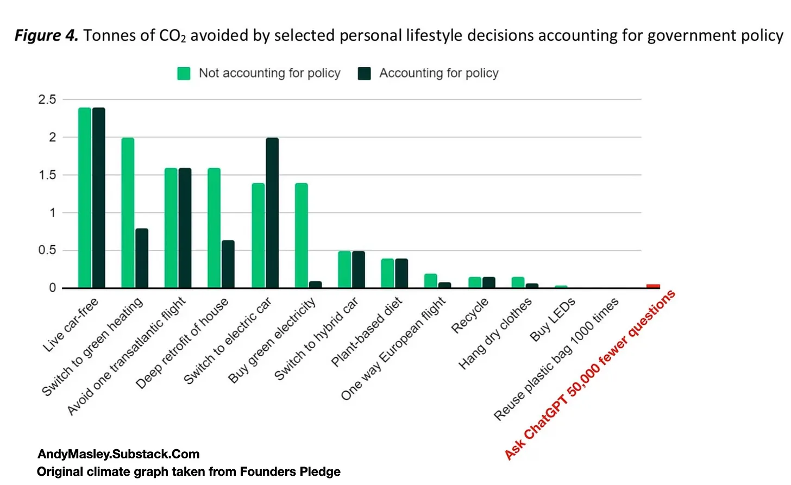
(In the graph, the activities that don't show a time or number of uses represent 1 year of that activity.)
If OpenAI didn't train GPT-4, that would be about the same as there being no flights between New York [and] San Francisco for about 2 days. That's not 2 days per week. It's 2 days total. Even if ChatGPT had to be retrained every year (and remember, it doesn't) that is less than 1% of the emissions from flights between these two specific American cities. How much of our collective effort is it worth to stop this?
Video streaming is using 1,600 times as much energy as ChatGPT, but we don’t hear about it as much because it’s a much more normal part of everyday life. 20,000 households can sound like a crazy number when you compare it to your individual life, but it’s incredibly small by the standards of internet energy use.
If we assume every...American uses a digital clock, then American digital clocks are using at minimum 1,100 Olympic swimming pools of water each year. That’s a shocking statistic if we don’t contextualize it with how much water is used in our energy system in general. The American energy sector as a whole uses 200 trillion liters of water each year, enough for [80,000,000] Olympic swimming pools. ChatGPT is using 1,500 Olympic swimming pools of water (with the water used for energy included), or 0.002% of America’s total water used for energy.
If I wanted to reduce my water use by 600 gallons, I could:
Skip sending 200,000 ChatGPT queries, or 50 queries every single day for a decade.
Skip listening to ~2 hours of streaming music every single day for a decade.
Here's a simple math problem that messes with your intuition. Suppose you have
some rope, and a loop of it is wrapped snugly once around your arm. Now you
want to feed more rope into the loop so that it encircles your arm with
1 foot of space between the rope and your arm. How much more rope will you
need?
Well, when the rope is wrapped tightly around your arm, it forms a circle
(roughly, anyway) with some radius of \( r \) feet (probably fractional unless
you have extremely thick arms). The circumference of this circle \( C \) then
represents the length of rope needed to form the loop, in feet. Adding
1 foot of space between the outside of the original circle and the
expanded circle will, by definition, increase the circle's radius by
1 foot, to \( r + 1 \). The circumference of a circle is \( C = 2\pi r \),
and we can subtract the circumference of the smaller (original) circle from the
circumference of the larger one to get the difference in circumference, which
will be the amount of additional rope you'll need: \[ \begin{align*} C =\ & 2
\pi (r+1) - 2 \pi (r) \\ =\ & 2\pi r + 2\pi - 2\pi r \\ =\ & 2 \pi \\ \approx\
& 6.28 \\ \end{align*} \] So a little more than 6 feet will do it.
Now suppose you have a rope wrapped tightly around the equator of the Earth.
You want to loosen it so there's 1 foot of space between the rope and the
Earth. How much more rope will you use?
Answer
Presumably the same approach will work, right? But if you try to run the
numbers, you might find yourself wondering, wait, where do we plug in the
current size of the rope?
Well…you don't need to, no more than we needed to for the circle the size of
your arm. Incredibly, the answer is still 6.28 feet, for a rope the
length of the circumference of the entire Earth. The amount of rope needed
depends solely on the size of the additional gap; the size of the object being
wrapped is irrelevant!
If you remember how radians work, one way to make this more intuitive is to
consider three concentric circles, with radii of 1, 2, and 3 feet respectively,
and an arc composing one-quarter of each circle. This quarter of the circle is
\( \pi / 2 \) radians, since a complete revolution is 360 degrees or \( 2\pi \)
radians. Now consider the length of this arc of each circle. The innermost
circle of radius 1 is the unit circle, where the angle in radians is exactly
equal to the length of the arc it subtends, so it's \( \pi / 2 \) feet long.
Now for the larger circles: radians are defined as the ratio of the arc length
to the circle's radius, and the ratio is held constant (because the angle /
radians we're considering is always one-quarter of each circle), so the arc
length is directly proportional to each circle's radius, and we can just
multiply the unit circle's arc length by the radius. All this to say, our three
arcs will be of length \( \pi / 2 \), \( \pi \), and \( 3\pi / 2 \)
feet.
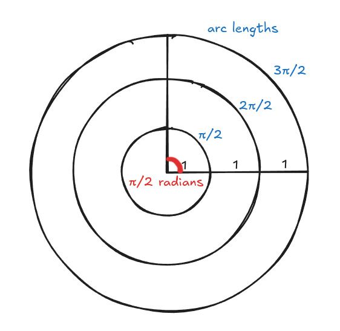
It should be obvious that you can continue drawing concentric circles
1 foot apart ad libitum and this pattern will continue; the difference
between the arc length of two consecutive ones will always be \( \pi / 2 \)
feet. But then that means the total increase in circumference will always be 4
times that, or \( 2\pi \) feet, for each 1 foot of additional radius, whether
you're on the first circle or the 131
millionth one.
A couple of years ago I made a
video
on edge-notched cards,
a pre-computer form of database used by punching small holes along the rim of index cards
and notching some of them out to store binary data.
You can then put needles through the holes
to filter out the cards that have a particular bit in that spot.
The video demos how they work, but doesn't give much if any information on creating your own.
I was meaning to, and still eventually do intend to, put out another video on that –
but in the meantime I've had a couple of people email me
asking my advice for punching cards to use with such a system,
since nobody manufactures the pre-punched cards anymore,
so I figured I might as well post the two-minute version for others here
since I've already written it.
I use standard US 3√ó5 or 4√ó6 cards, but the size doesn't matter.
I use an ‚Öõ-inch hand punch to initially make the holes, one by one,
and a vintage Royal McBee notching punch that I bought on eBay to notch out the holes.
If you can't find a notching punch,
a small pair of scissors works all right for notching,
it's just a bit annoying and any rough edges you leave risk getting the needle hung up;
to reduce hangups, the notch should be gently flared,
forming a “V” shape with the point towards the inside of the card.
This method is rather labor-intensive, but it works fine,
and once you get into the rhythm it's actually not as unpleasant as you'd imagine
to punch hundreds of holes in index cards individually
(pick a day when you're in a good mood and put on some music).
I tried getting a heavy-duty hand punch,
but its design made it nearly impossible to see where I was punching,
so I actually use a pretty cheap one that I bought at Michaels some years ago instead;
I'm able to cleanly punch three cards at a time with that one.
There's probably a better option out there somewhere –
if you find a great punch that's available for purchase online, let me know!
Someone once wrote to me and suggested trying a comb-binding or spiral-binding punch.
That sounds like a promising avenue, but I haven't tried it yet;
these are quite expensive and hard to find,
so you'd have to be quite committed to buy one new,
but maybe you could find one at surplus or use one at a copy shop.
I think the holes are squared off on a lot of those, rather than round,
but that would likely still work all right,
there's just slightly more risk of the needle getting hung up.
I've also heard of people buying
spiral-bound index cards,
unbending and twisting out the spiral,
and using those holes.
I haven't tried this either, but I'd expect that to work pretty well;
the main limitations are that you get a very limited number of holes
since the punch is only on one edge
(from a quick look on Amazon,
it appears there are usually 14–20 depending on the size and brand),
and the number and spacing of holes doesn't seem to be standardized,
so you might have some trouble finding more matching cards later if you need them.
This could be a great quick hack for some applications though!
If you are punching your own holes,
the most important thing to know is that,
lacking any specialized manufacturing equipment,
if you want the holes to align,
you need to use a master template.
First punch the pattern of holes you want in one card
(I like to use a ruler to mark off the centers of where I want to punch,
to help get them a little more even;
but they don't have to be perfectly even to work well
so long as they end up the same on every card).
Then punch the holes in the other cards through that card
(like, stack the blanks behind it,
align and clip them tightly together with a binder clip,
then place the punch head in the holes in the top and punch).
The master wears out slowly
because you won't manage to punch perfectly in the center every time,
no matter what method you're using,
and you'll gradually sliver off little pieces of the edges of the template holes.
I find I can usually count on 50 cards or so before the holes start to get fuzzy.
So in practice,
I first punch a couple “child” template cards from the master,
and then do the rest of the punching from those,
creating new template cards from the master as necessary.
That will get you to 2,500 cleanly punched cards if each template lasts for 50 uses.
I suppose you could try doing a third level of templates,
but each propagation also creates a little inaccuracy,
so I don't think that's a good idea in most cases.
One final tip: most commercial punched cards
had a bite cut out of one of the corners at a 45-degree angle
(usually the upper-right,
presumably because this corner is easiest for right-handed people to manipulate).
This is to make it quick and easy to confirm that all the cards are right-side up,
and put them back in the same direction should you spill the stack.
You can easily replicate this with a pair of scissors,
and it definitely comes in handy occasionally.
A friend of mine was telling me about the Camino de Santiago
the other night and making up some examples of interesting people who
participate. One of them was Muslim imams, which my brain decided to
parse as “Muslimy moms.”
Nothing against imams, but despite its implausibility, I find my version
infinitely more entertaining!
I previously complained about the cost of Plan B
(1.5mg levonorgestrel, aka the most common version of the “morning-after pill”),
which runs in the neighborhood of $50 per dose for the brand-name version.
At the time, I noted that generics were barely any cheaper.
For whatever reason,
it appears that you can now buy generic versions for under $10 on Amazon.
This actually seems like a reasonable margin!
No idea what changed.
Ekkachai and Laksana – who had set the [longest-kiss] record once before in 2011 – ultimately won the contest...however, soon after, we deactivated the record category. We did this because the competition had become too dangerous.
Why did we deactivate the longest kiss world record? (Guinness)
[source]
People have been talking about eliminating Daylight Saving Time again recently,
and whenever anything like this comes up, someone inevitably says, “We should
just get rid of time zones!” But while time zones might be annoying, they're
annoying because coordinating people for whom the sun is in different places in
the sky is annoying – the time zones themselves are not the problem, and in
fact are an extremely reasonable and usable way to handle the problem. Removing
them would make life even harder.
If you've ever lived in Whittier, or otherwise had occasion to memorize the few blocks of street names that come in between the regular alphabetical pattern (to the west of Lyndale, the westernmost black line on this map) and numerical pattern (to the east of Nicollet, the dotted shaded line just a bit to the west of Washburn Fair Oaks), you might notice something else odd about that stretch of this map if you look carefully. The three blocks to the west of Nicollet are divided by Blaisdell Ave, Williams Ave (modern Pillsbury), and an apparently as yet unnamed street (modern Pleasant). Then for streets in the two equally sized sectors to the west of Pleasant, where there are no streets shown yet, eventually we'll have modern Grand, Harriet, and Garfield, and...wait, we're not at Lyndale yet? There are four blocks between Lyndale and Pleasant in modern Minneapolis, but only room for three at the same distance as Blaisdell, Pillsbury, and Pleasant.
Turns out yes, if you look at the map, in 1874 as well as today, the three blocks between Pleasant and Nicollet are just a different length than every other east-west block in South Minneapolis, even as the north-south spacing remains the same. That may very well be why these blocks have a lot of the larger homes in the area in them. The normal block length in South Minneapolis (described more fully in the first callout of #215) is 330 feet, for 16 blocks to the 5,280-foot mile:
But these three are 440 feet each instead, for 12 blocks to the 5,280-foot mile, so that 3 of them fit exactly into the same space taken up by 4 normal-length blocks:
These “fat blocks” continue south to 40th Street, where someone apparently suddenly thought better of it and realigned the grid on normal 330-foot blocks, inserting Wentworth Avenue between Pillsbury and Blaisdell to fill the gap:
Then, of course, at 50th Street you get to Tangletown, where the planner apparently got sloshed and decided it’d be a great idea to keep on drawing the street map:
And then, unbelievably, after Diamond Lake Road it goes back to the same 330-foot blocks, including Wentworth, keeping the exact same alignment for each street! Phew.
With my faith in the simplicity of South Minneapolis’s grid shaken, I pored over Google Maps for any similar irregularities in what I’ve always thought of as a pretty much ironclad grid pattern. Except for the expected curvy parkways and other deviations around lakes, the river, and so on, I found only one: this spot in Linden Hills (to the west of the area between Bde Maka Ska and Lake Harriet), where there are five 300-foot blocks, which also revert to 330-foot blocks at 40th Street (probably out of pure coincidence?).
I’m not sure how these came to be. The lakes have changed shape quite a few times due to the city draining the swamps that used to be in the surrounding area. (Fun fact: Lake of the Isles also had its level lowered so the city could reclaim lakefront property for public use. The fancy houses across the street from the lake all around the parkway were actually on the lake originally.) So it’s possible that the alignment above 40th Street made sense at one point, and then ceased to. But my best guess is there used to be a little village here with 300-foot blocks, and when Minneapolis annexed it, they decided to keep what was there but rename the streets and use the standard grid in the surrounding area.
The case of the missing 21st and 23rd Streets, redux
Thanks to a serendipitous encounter with a reproduction plat map intended for decoration, I have more information about the missing 21st and 23rd Streets!
While I was doing some Christmas shopping in Northfield, I stumbled across a fuzzy 1874 map of Minneapolis mounted on foam board, and naturally looked at the area I lived...and I spotted something. I grabbed a photo of it, but in my haste cut out the surrounding area, date, and publisher. Amazingly, I was still able to track a hi-res version down in about 15 minutes. (Isn’t the Internet amazing? Thanks to the Hennepin County Library; visit this page for the full map.)
This map was produced just one year after the renaming plan mentioned in my last post (1873). In some places, you can see the old and new names used simultaneously (e.g., the upper-right corner of the map). Nevertheless, many of the streets do not have their modern names, and the highways obviously don’t exist yet, so it might be a bit hard to figure out where you are at first. I’ve overlaid some modern signposts so you can get your bearings (click to enlarge):
(“29th/Lake Street*” should really just say “Lake Street”; I labeled it this way due to a confusion on my part which I later resolved, and I was too lazy to redo all of the maps.)
Interlude on Minneapolis block rules: To understand the situation here, we'll be needing to talk about the lengths of blocks a few times, so let’s do a quick review. In South Minneapolis, the east-west blocks are 1/16 of a mile, or 330 feet, long (we call these “short blocks”), and the north-south blocks are 1/8 of a mile, or 660 feet, long (we call these “long blocks”). Unless otherwise noted, I measure the length of a block between the centers of the streets bounding them using the “measure distance” tool on Google Maps.
We're only talking about South Minneapolis here, but for the curious, blocks of this type are also common in North and parts of Northeast, though they are not used so consistently. Downtown and most of University use square blocks of, bizarrely, 1/13 of a mile, approximately 406 feet, on a side. Square blocks are also found in parts of North and Northeast, generally those closer to downtown. Part of what was once Saint Anthony in Northeast has blocks that at first glance look like they match the pattern, but actually measure 800 by 350 feet.
OK, now what happened to 21st and 23rd Street? Take a look at the streets in the yellow boxes on the map:
Not only were the 21st and 23rd Street in Ventura Village there already in 1874, as I speculated was possible in the previous post – but there were also 21st and 23rd Streets in Northwest Whittier at the time!
What‚Äôs more, even 22nd Street didn‚Äôt go all the way through from Ventura Village to Hennepin Ave. Given this mishmash of partial streets, it‚Äôs easy to imagine that the most logical approach to numbering them would have been to number each extant street from north to south, regardless of how continuous it was; the alternative would be adding named streets in between numbered streets, or creating a 20½-th Street and a 21½th Street, both of which are ugly.
So I think the missing 21st and 23rd Streets may have nothing at all to do with trying to stretch 8 blocks over 10 numbers, as some people claim, including the MinnPost article from last time. The streets just were there at the time, and were later removed and turned into lots, and everyone forgot they were ever there.
I had expected that two streets that had gone missing from a couple of city blocks would leave traces somewhere, but I spent a good 10 minutes looking for traces on the modern map and found nothing. There are a couple of driveways in a similar spot to where they would have gone through, but that could be pure coincidence. I think the street right-of-ways are 40 feet and the typical lot is, if not exactly 40 feet, a very similar width in this area, so I can imagine it totally blending in. If I remember though, I’m going to go pace off 115 feet from 22nd Street in both directions when I get home and see if I can spot anything in person!
What about further south? The MinnPost article claimed that Lake Street maybe had something to do with it, so we should check that. There’s something goofy going on at 26th Street:
To the west of Nicollet Avenue (thick shading in the center of the yellow box), the group of blocks to the south of 24th Street is split into three north-south blocks, while on the right it’s split into two...leading the street at the bottom to be labeled both “27th St” and “26th St”. Who let that happen just the year after renaming all the city streets to be more consistent!? Maybe the folks writing the street-naming bill were distracted when they got to this part.
As for Lake Street itself, things are...confused. Lake Street is not named or numbered on this map, though it does look like there is a plan to put a major street there. But, overall, the way things are shown south of 26th in west Whittier on this map is not aligned with any ground truth today. You can see that there are no actual plats or street names in that section yet, just planned locations, so there would have been little obstacle to changing the streets and this isn’t too surprising:
The cartographer appears to have copied the weird three-to-two ratio of street alignment that led to calling the same street both 26th Street and 27th Street for this southern section, but when it was actually built out the city (thankfully) used the standard pattern already seen further to the east, across modern I-35W. (The three-to-two ratio, in fact, is completely gone nowadays; at some point the existing plats and streets that broke the numbering were moved.)
The scale in this illustration was made by drawing a line from 25th to 26th, then copying and pasting it a few times and aligning them until the ends overlapped, to show the result of continuing the 660-foot (⅛-mile) blocks that we actually have today south.
Interestingly, on today's real map, 29th Street is a tiny bit further south than it either is on this plat map or should be by the 660-foot standard. Instead of 660 feet south of 28th Street, it’s actually about 700 feet. I believe this is because it was moved out of the way of the Milwaukee Road railroad corridor just north of 29th Street, which was started in 1879, 5 years after this map. (This corridor is now the Midtown Greenway.) The tracks seemingly could have fit without moving it (there are about 80 feet from 29th to the center of the modern Greenway trench, and the rail was at-grade when it was built), but perhaps they didn't want it running right next to the street.
However, this doesn't illuminate anything about Lake Street; the 29th to 30th block was simply shrunk to match, so that the stretch from 28th to 30th still takes up 2/8 of a mile in total. And it’s 2,640 feet from the center of 26th Street to the far edge of Lake Street, exactly half a mile, as expected. (It is interesting that the block aligns with the far edge of Lake Street, 20 feet beyond its center; perhaps Lake Street was widened in the downtown direction at some point.)
This still leaves Lake Street noticeably further south in reality nowadays than it appears on this plat map, unless I have miscalculated something I think because there is a crease in this scan of the map next to 29th St that messes up the scale.
Overall, it doesn't seem like Lake Street contributes anything to understanding the issue, so I'm going to reject the common claim that 21st and 23rd Streets were “sacrificed” to reduce the number of blocks between the synthetic 20th (aka Franklin) and 30th (aka Lake Street). I have to say, this explanation has never made any sense to me in the first place. Even if Lake Street was already named and numbered as 30th in 1873, which I haven't seen any evidence of, why would you pick 21 and 23 to remove, before the city even reached all the way out to Lake Street? Leaving out numbers in an area that is already developed, rather than in an area that has yet to be developed and might end up looking entirely different by the time it exists, is just silly. And while it's obviously nice to have your major streets, Franklin and Lake, be exactly a mile apart, everyone living in South Minneapolis would surely know, even better than they do today since they didn't have GPS, that blocks are an eighth-mile in the north-south direction, so why would you intentionally confuse the numbering so that two streets that are transparently a mile apart are 10 street numbers apart? It would make far more sense to simply call Lake Street 28th.
The real answer is much simpler: 21st and 23rd Streets needed to be part of the order because they existed in that spot at the time. From a modern Minneapolitan's perspective, 21st and 23rd (as present in 1874) appear to weirdly “cut through the middle of the block pattern,” and since removing them left two perfect 1/8-mile blocks matching their surroundings, it now looks like someone arbitrarily skipped those numbers. But at the time, the grid in this area of town wasn't yet standardized at 1/8-mile blocks, several different lengths and conventions were in use simultaneously in different places – so it wouldn't have looked weird at all for those extra streets to be there, and it made perfect sense to include them in the ordering.
I think what the study really shows is that people quickly taking a survey who probably don’t have much familiarity with AI poetry, are somewhat confused as to the nature of the task, start with misleading (but easily correctable) heuristics, and have never tried a similar task before, often are fooled into mixing up human and AI poetry, at least on their first trial. This is an interesting result, to be sure, but it has very different implications from the headline. It certainly does not mean that AI poetry is at the level of famous human poetry and can be substituted for it (even the original article doesn’t make this claim, but the title makes it sound like it does).
More discussion and details of my experiment at the link.
I needed some replacement bulbs for my piano light and bought a package on
Amazon. When it arrived and I put it on the counter, it looked like this:
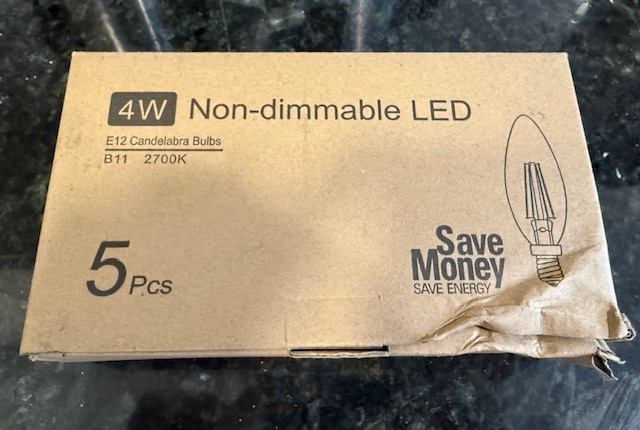
A little weird that the tab is on the bottom instead of the top of the
package, but oh well, whatever, right? I opened it and...
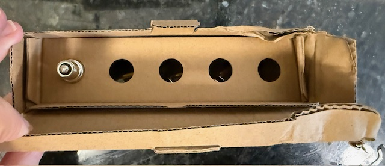
Yep, the lightbulbs are in the box upside down when you open it, so that in
order to get one of the bulbs out, I had to pull up the loose piece of
cardboard with the holes in it and have all the bulbs fall out into the bottom
of the box.
It turns out that the box opens on both sides with identical tab closures,
and the orientation you're supposed to open it in to avoid this happening is
this one:
Not that there is any indication of this whatsoever.
The XY problem is when you aren't sure
how to solve a problem, work on it yourself for a while, get stuck, and ask for
help, but instead of asking for help with your original problem, you ask for
help with one of your attempted solutions. This often turns out to be
a confusing waste of time, because the fact that you haven't managed to solve
the problem yet suggests there is something about it that you still don't fully
understand, and your attempted solution might be a complete dead end.
One of my favorite examples occurred when I was working at the helpdesk at my
college. Someone came up to the desk and asked if I could teach him how to scan
a document from the campus copiers. Sure, no problem. We went to the nearest
copier and I walked him through putting the document in the feeder, logging in
to the copier, selecting the scan options, and choosing it to email it to
himself. He seemed to understand everything, and five minutes or so later he
had successfully sent the document to his campus email. Then:
Him: “Now, how can I print it?”
Me: “You mean you want to…copy the document? From the copier?”
Needless to say, copying a document from the copier is a one-button-press
affair!
What percentage of people have ever been on an airplane?
This is apparently a very hard question to answer. (I guess this makes sense –
the proportion will be totally different for every country because of both
geography and wealth, and surveying the whole world accurately is rather
difficult. Also, there's not a whole lot of reason to know except curiosity.)
The closest thing to a consensus I could find was about 20% of the world
population, but on further investigation, this appears to trace back to a
random out-of-context quotation by the CEO of Boeing in 2017, and he actually
said “less than 20%” (he was discussing how Boeing still has a large potential
market). Claude quoted both “5–11%” and “20%” in the same response in pure LLM
mode, and 20% when it searched the web.
The person who got me thinking about this claimed it was under 10%, and while
I didn't think this sounded all that far off, I was suspicious it might be out
of date, because of this hockey stick:
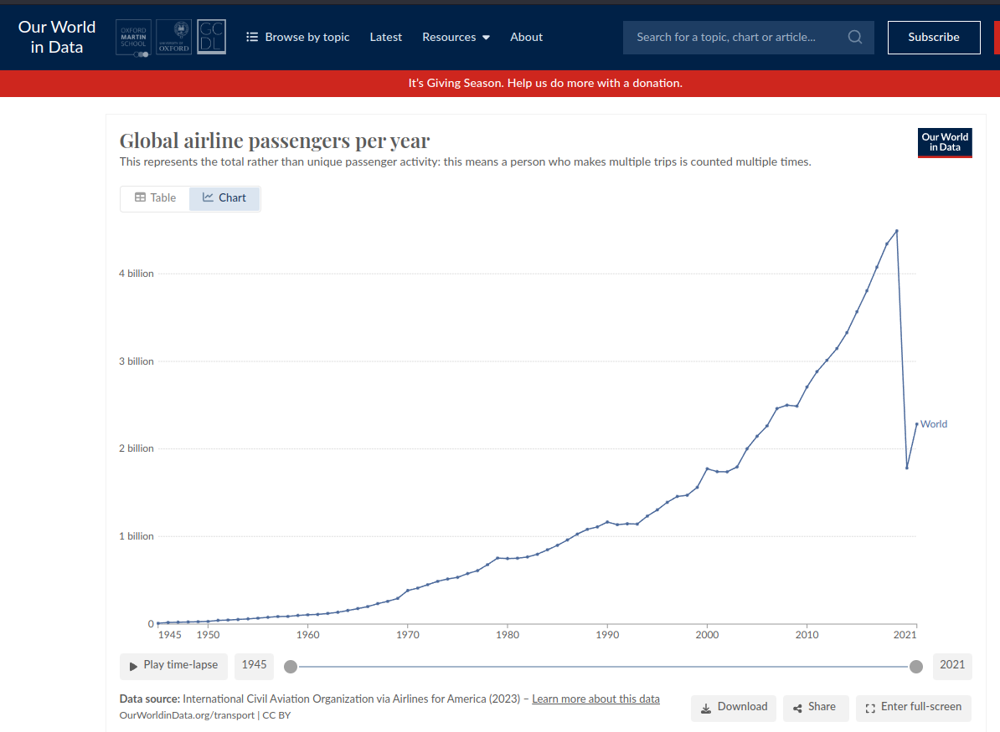
Off topic: Can we all take a moment to appreciate how reliably the
graph of global passenger-flights momentarily plateaus every time there's a
recession in the USA? (Plus of course the literally world-stopping drop in
2020.)
Gut check: if it's ~20%, that's an average of 2.8 flights per person who has
ever flown per year. But that's more like one round trip per year because this
is passenger-segments – if you take a round trip with one connection both ways,
that's 4 “flights”. Most routes need connections, but probably a
disproportionate volume of frequent flights are between hubs and can go direct,
so 1.4 flights in each direction on average seems maybe reasonable? Claude
thinks that's optimistic and says 60–70% of routes will need at least one
connection though, and that's not saying anything about international flights
or flights between remote places that need two or more connections. (I've never
needed more than two, but apparently you can find
airport pairs that require up to seven changes if you work at it hard enough!) So
I'll guesstimate a number of 3.2 flights needed per round-trip on average. <1
flight per person per year seems like it might be too low, in which case a
smaller number of people must ever fly? But maybe averages are deceiving, let's
try some more detailed numbers – “ever flown” can mean you fly many times a
year, or you fly once in a decade or once in a lifetime, and there are probably
a lot of people in the lower groups.
Here's an attempt to make the numbers work in a spreadsheet:
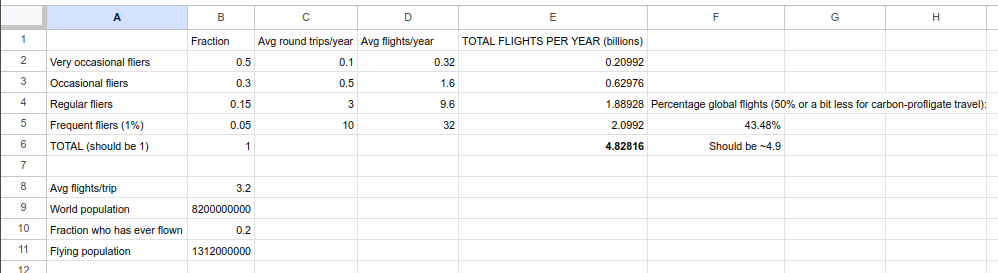
Here I suppose that 50% of the people who have ever flown are “very occasional
fliers,” taking a trip by air only a handful of times in their lifetime (about
once a decade). Another 30% fly once every two years on a vacation. Another 15%
live far away from their family or occasionally fly on business, three times
per year on average. And the last 5% (this is actually the 1% quoted above,
divided by the fraction of people we're claiming have ever flown, so it's
elastic and if you change that fraction it will change this and move the
“regular fliers” notch to make 100%) take 10 trips a year on average. (Of
course, some take a lot more, but quite a few people up in this range will take
just a few.)
That only gets us to 43% of global flights taken by 1% of the population, but
some chunk of these people will often fly first-class or even private, which is
far more carbon-intensive, so I'd bet this ends up being somewhere in the
neighborhood of 50% of emissions. And presumably 50% isn't the exact
number!
That gets us to around 4.8 billion; 2024 flights are projected to be about 4.9
billion. Interestingly, if we try decreasing the fraction of people in the
world who have ever flown, the number of total flights per year actually has to
go up, because this implies that the fraction of frequent fliers who
are in the top 1% of the whole world's population must increase, which makes me
think 20% is significantly more plausible than 10%; if anything, my estimate of
the number of flights taken by frequent fliers every year seems low, and
raising it would further exacerbate this effect.
So all this seems maybe about plausible for 20%?
But I made a lot of assumptions, and mostly don't expect them to be super accurate.
Here's the spreadsheet
if you want to try your own.
Let me know if you learn something interesting!
The liberal side of American politics has recently shied away from displays of patriotism,
or sometimes even claims that America has any redeeming qualities.
I know people who don't like celebrating Independence Day.
And look – it's reasonable to be disillusioned.
There's a lot to dislike, both in our past and in our present.
But I think Americans who have become cynical about their country
are spending too much time looking at an absolute scale of how good they can possibly imagine a country being,
instead of a comparison with other actual options.
Yes, this country's history includes, among other things,
racism, slavery, genocide, war crimes, broken promises to entire peoples, hypocrisy, kleptocracy,
pissing contests between leaders that ruin millions of ordinary people's lives, propaganda, and toxic ideologies.
For that matter, many of these are still alive and well today, and all of them are still rooted.
But have you ever tried finding a country that has avoided all, or even most, of those?
Not so easy.
Certainly, that others also do the wrong thing does not mean you have no responsibility for doing it.
But I think it does illuminate the obvious fact that humans are human and countries are made up of humans,
and so always doing the right thing is impossible.
Giving up on someone because they haven't always done the right thing
is as unreasonable as giving up on them because they haven't learned how to fly yet.
Criticize, sure.
Educate yourself on the failures to inform where you go next, absolutely.
Give up and hate where you live because of events you had no part in? Nah, I'll pass.
Indeed, accepting imperfection is part of the mythos of America.
We are the land of believing anything can be improved and pursuing ridiculous, impossible dreams –
and always falling short of the dreams.
Yet the better parts of America's history are nothing if not proof that that's a useful exercise;
it still drives change even when you don't make it all the way.
When you inevitably come up short, it's easy to stare ahead at how far short you are and grimace,
but once in a while you ought to also twist your head around and look at how far you've come.
Sometimes it's truly awe-inspiring when you finally do.
Of course we should keep striving to improve; the status quo is not good enough.
But it's much easier to improve something from a place of love,
when you aren't trying to find someone to blame,
when you don't feel guilty about things that aren't your fault,
when you hope to take something you care deeply for and leave it even better than you found it.
When you start from a place of disillusionment and hate,
you're more inclined to focus on how bad the world is than on how you can make it better,
improvements seem utterly out of step with the magnitude of the problem,
and you'll probably give up and leave or spend your time petitioning the Adults In Charge to fix everything.
Spoiler alert: there are no Adults In Charge. It's up to you.
Allie Brosh:
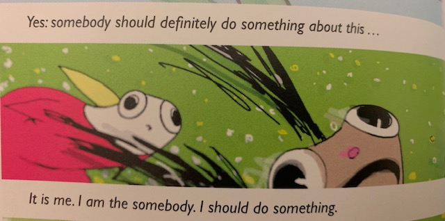
If you dislike America enough that you're looking for a new home,
then I'll let you harbor that dislike.
But if you, like most of us, think your country is your worst option except for all the other ones out there,
I'd like to suggest you might be better off making peace with it.
As we come closer to political instability and autocracy than we have since the Civil War
and the country faces stagnation and some very serious structural problems,
I think this is more important than ever.
Believe there's something worth preserving and we're on a hero's journey towards something a little bit better every step of the way,
and the snags don't seem so unmanageable.
Maybe it's irrational, but that's OK. It gets results.
Talking to LLMs is a rare instance where speech-to-text is better
This is about how fast I type on a typical day:
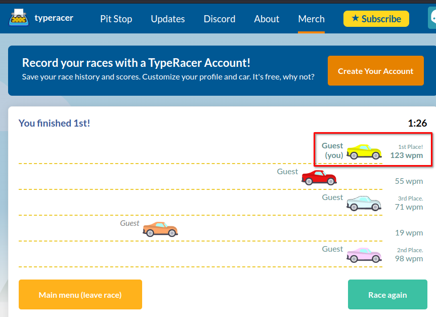
(It was chilly in my office and my fingers were stiff when I did this run; I'd
probably do 5 to 10 words per minute better otherwise.)
I can certainly still talk faster than I can type, but a natural
conversational pace is probably only about a third faster. Even more
importantly, it's a great deal harder to edit when you're talking, and when I
write I seldom write the entire thing and then go back and edit; I try parts of
each sentence a few times as I work to figure out what I want to say. That
means I find speech-to-text virtually useless for writing – it makes it much
harder to think and doesn't even speed me up much if everything goes perfectly.
And extended writing is the best case for speech-to-text when using a
computer; when the chunks of text you're entering are smaller, the comparative
speed difference is less meaningful and the amount of fiddly editing you can
expect to have to do is even greater.
When I want to ask Claude or ChatGPT a question, though, the situation is
usually reversed. For one-off interactive use, its performance is no worse if
my input text has typos, corrections, and suboptimal phrasings in it. Typing
out my question feels like quite a lot of work, especially compared to a web
search where I can get away with just a few words. Worse, typing puts me in a
mode of thinking where I try to find the best possible way to phrase what I'm
saying, which is a complete waste of time – in the unlikely event Claude
misunderstands what I meant because I chose my words poorly, I can just clarify
and ask it to try again. And nobody is ever going to see my query after the
conversation is done.
If you haven't started speaking many of your LLM queries yet, give it a try!
I keep running out of space on my /home partition on my Linux desktop and
having to carefully move files onto my file server, clear caches, and so on (of
course, the used space usually reaches 100% at the most inconvenient possible
time). I realized at some point that I'd left about 180 GB of unallocated space
at the end of the disk, so I figured I'd extend the /home partition into part
of that space.
Having grown up in an era when it was impossible to even change the size of a
partition with OS tools, and you'd have to delete it and recreate it (backing
up and restoring your data in the process), I'd been putting this off for
months, thinking I'd have to remind myself how to boot into the rescue
environment to resize the partition, and that sounded pretty annoying.
But I was absolutely astounded to discover today that nowadays (at least on
disks with a GPT partition table on a recent Linux) you can resize a
partition that's currently mounted and in use, while the OS is running,
without even interrupting disk access requests. I was able to just open
gparted, turn off swap since a swap partition was in the way,
delete the swap partition, extend the /home partition, and recreate the swap
partition (this time at the far end of the disk so I wouldn't even have to do
that again). It took about 90 seconds.
Nobody's ever going to win much recognition for improving partition table
management, but this goes well with Adam Mastroianni's recent essay “Underrated
ways to change the world” – this silly little innovation will save people
hundreds of thousands of hours of annoying tasks over the course of the coming
decades.
I skipped out of work Friday afternoon to take my
rowboat out on the Mississippi in possibly our last nice boating weather of
the year. I launched from Boom Island Park on the east bank of the river near
downtown and headed upstream. Given the amount of damming on the upper
Mississippi, in the fall the current is slow enough that rowing upstream is
easy; indeed today, with the wind blowing pretty hard from downstream, it was
slightly harder to go back downstream than get upstream.
I had always assumed that Flittie Redi-Mix was long gone
and these were picturesque ruins left for show,
like the giant Gold Medal Flour sign
downtown, but I looked it up today and it turns out that they're still mixing concrete on that site!
It's just called Marshall Concrete now,
though.
This picturesque water treatment plant,
in front of an island that in midsummer is full of hundreds of herons,
is usually my turnaround point,
though if you find it on Street View you'll see that the street-facing side is unbelievably ugly!
Route (upstream first, to the northwest, then back):
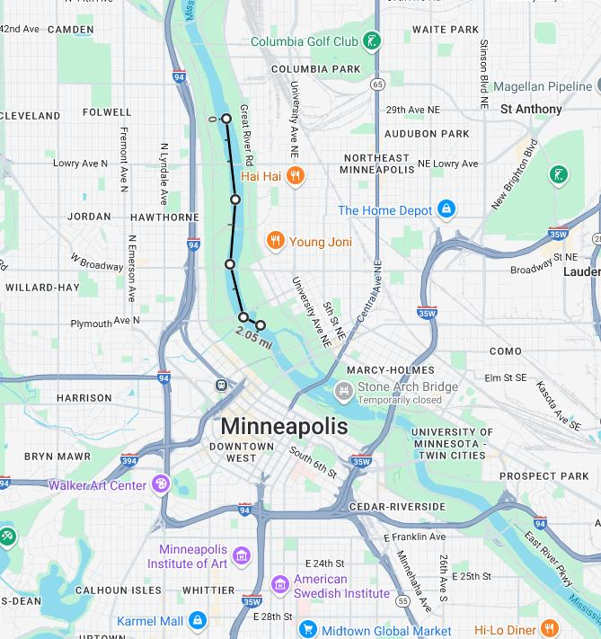
The second edition of my online textbook,
Grok TiddlyWiki,
went live this evening.
I've spent the last two months working on updating it
to cover a number of new features released in the last year or so
that make TiddlyWiki easier to use and more reliable,
but also require reconsidering the way you learn and teach it.
I appreciate the attempt to remind people that they should be careful not to
accidentally take multiple drugs containing acetaminophen at once, given how
easy it is to overdose, but I do feel like the fact that this
particular drug contains acetaminophen was a wee bit obvious...
#202 reminded me that the phrase
“Invisible Fence”
is a huge pet peeve of mine.
It's very close to two words, two lies:
there's not a fence that's invisible, there's no fence at all!
And if there's no fence, it can't be invisible either:
you can only meaningfully call something “invisible”
if it's actually there but just can't be seen.
(I think Dominus would reject it, because he says a necessary element of a lie
is that it's intended to deceive, and it's ordinarily understood that people
are allowed to sing songs that don't describe themselves, but it made me
laugh!)
Sometimes people ask me why it's better to have links and metadata in your
notes than to “just search” for what you're looking for. I came on a great
example tonight: I wanted to review some thoughts I had written down on a
conference session I attended this summer, but I couldn't remember the name of
the session, the person who had presented it, when it happened, or anything
about what I had written in the notes beyond that I was pretty sure the word
“sacred” was in there somewhere.
This was still easy! I did know the title of the notes for the festival this
had happened at, so I searched for that. Right in that tiddler, I'd made a list
of the couple of people who had stood out to me, and the presenter was one of
them, I immediately recognized her name. I clicked into her tiddler, then the
Sources tab showing all the articles, books, lectures, etc., associated with
that person, and there was the session.
Of course, I've now spent longer telling you about this than it would have
taken for me to find it by painstakingly combing through all of the hits for
the word “sacred” in my million words of notes, but that tendency is
between the keyboard and the chair!
I finally came into the 2020s last week by ordering the new iPhone 16 Pro to
replace my iPhone XS (the last straw was when I was on the phone with a friend
and my voice kept cutting in and out so that they could barely hear me because
the Lightning port with my headphone adapter plugged in had a really lousy
intermittent connection...if I can't even, you know, reliably make phone
calls on my phone, it's probably time for a new one).
I went camping over the weekend and spent a while playing with the new cameras
– complete with a physical shutter button: when was the last time Apple added a
button to anything? It still can't beat a nice dedicated camera at everything,
but they're doing little short of magic with three tiny little lenses...and as
always, the best camera is the one you have with you. It's also really cool to
be able to switch from a 13mm wide-angle lens to a 105mm telephoto (and
everything in between) by sliding your finger; that opens up possibilities that
would be annoying or impractical with a normal camera.
Much of the park at Beaver Creek Valley is, as the name suggests, in a deep
valley, and at this time of year there's some great lighting to play with in the
mid-morning and mid-afternoon, when the sun is still well above the natural
horizon but partially blocked by the hills.
Like many people, I often fail to refill my soap dispensers as soon as they
run out, such that for a couple of days I have to repeatedly press the trigger
to get a tiny amount of soap, until I eventually get annoyed enough to fix it.
I recently realized that almost all of the difficulty lies in actually getting
the soap refill out and starting the task of refilling the soap dispenser. So
why not just go refill all the soap dispensers in your home at that
point? Sure, it takes a tiny bit longer in the end, since you're refilling
only-partly-empty dispensers, but you'll end up in the annoying
out-of-soap-and-not-bothering-to-refill-it state far less often.
Capitalizing on people's confusion about what a megabit is, folks have
recently started suggesting that you need very large amounts of bandwidth to do
normal things like “stream videos.” E.g., here's an AirBNB listing:
But the truth is that virtually any internet connection available in an urban
area is sufficient for most households. In Minneapolis I have had to get plans
that had much more bandwidth than I would conceivably need, because
there was no option to buy less for cheaper. And while public wifi speeds vary
noticeably, we are in an age of bandwidth abundance. Issues with the wifi being
actually too slow to use have virtually evaporated; I've worked from a
variety of places all over the country in the last 3 years, and I have yet to
encounter wifi that was too slow for anything I was trying to do. (With the
exception of vehicle wifi. Train or bus wifi is in most cases literally the
same kind of mobile hotspot your phone has, but with its bandwidth split over
everyone in the car. Just get mobile hotspot if you need to work on trains.)
Streaming 8K-quality video
actually
consumes somewhere around 50 Mbps. On the 500 Mbps connection this
AirBNB listing is advertising, in theory 10 people could be successfully
streaming different movies at cutting-edge resolutions to wall-sized TVs at the
same time! And keep in mind that 8K video is still quite rare, and 4K, at more
like 20 Mbps, is perfectly fine for almost every situation. On many
smaller devices you'll get a perfect sharp image at 1080p, which requires only
5 Mbps (and I have yet to see a YouTube video even available at a higher
resolution).
As recently as a couple of years ago, I had a 12 Mbps connection – almost
50 times slower than the one advertised here – and I was able to
browse the web, take video calls, and stream movies just fine. That connection
was actually slower than I wanted, and it would have been too slow to reliably
stream 4K video to a large TV, but I didn't have such a TV at the time, and it
was perfectly serviceable.
The only real benefit of a faster internet connection for most people is that
you don't have to wait as long to download software updates and large files.
But I don't think having my Windows updates download in 30 seconds instead of 3
minutes is worth spending any meaningful amount of money on. Buy accordingly.
One caveat: many internet providers reliably give you worse speeds than they
advertise. This is especially true of cable-based services, where it's
virtually impossible for them to guarantee a particular speed because the
bandwidth is shared among all customers along the trunk line, so you'll get
much less than advertised at peak times (i.e., exactly the moment your
household will be using lots of bandwidth and you'll most want good speeds). So
it may be wise to halve the advertised number or so when deciding if it's
enough.
I had a pile of books and other items that I've wanted to create flashcards
from. As part of a project of cleaning up my life, I decided to just declare
them all finished.
Yeah, it would be nicer to have actually created flashcards from them. Now I
won't have any until and unless I read them again or go back to look something
up. But…that was the de facto result anyway. Now at least the same
thing won't happen to the next books I read, because I won't be
overwhelmed with the backlogged ones.
I think people should give up on their backlogs much more often.
For the Unixers out there: I often find myself encountering some program on my
system (in my package manager or just as a file lying around) and have no idea
what it is. I then spend the next 30 seconds typing a bunch of different
commands trying to figure out what it is in various ways. In the event I can't
figure it out without looking in my package manager's metadata, I tend to even
have to go look up the appropriate command to find the details, or google it!
I was removing a bunch of software that I don't use anymore that's accumulated
on my main desktop machine over the last couple of years, and found myself
doing this so frequently I got really sick of it. I thus wrote the following
shell function called wtfis that runs all of the things I
typically try in sequence, here presented in the expectation it'll be useful to
someone else some day:
wtfis() {
pkgnamed_binary=$(which "$1" 2>/dev/null)
if [ $? -ne 0 ]; then
pkgnamed_binary=""
echo "wtfis: No '$1' binary on \$PATH"
echo "wtfis: Instead finding all installed binaries"
for exfile in $(yay -Qql "$1"); do
if [ ! -d "$exfile" ] && [ -x "$exfile" ]; then
echo "$exfile"
fi
done
else
echo "Binary named for package found in \$PATH: $pkgnamed_binary"
fi
echo -e "\n\$ yay -Q --info $1"
yay -Q --info "$1"
echo "\$ man $1 | head"
man "$1" | head
if [ -n "$pkgnamed_binary" ]; then
echo -e "\n\$ $1 --help | head"
"$1" --help | head
fi
}
Example (note the $'s are printed by the function to echo the commands it's
running, they're not additional user commands):
Janika.soren #59066 @0840 [~](!)$ wtfis slop
Binary named for package found in $PATH: /usr/bin/slop
$ yay -Q --info slop
Name : slop
Version : 7.6-5
Description : Utility to query the user for a selection and print the region to stdout
Architecture : x86_64
URL : https://github.com/naelstrof/slop
Licenses : GPL3
Groups : None
Provides : None
Depends On : libxext libx11 mesa glew libxrender
Optional Deps : None
Required By : None
Optional For : screenkey
Conflicts With : None
Replaces : None
Installed Size : 341.40 KiB
Packager : Antonio Rojas
Build Date : Fri 10 May 2024 03:02:22 PM CDT
Install Date : Fri 31 May 2024 08:18:47 AM CDT
Install Reason : Explicitly installed
Install Script : No
Validated By : Signature
$ man slop | head
SLOP(1) slop man page SLOP(1)
NAME
slop - select operation
SYNOPSIS
slop [-klqn] [OPTIONS]
DESCRIPTION
slop is an application that queries for a selection from the user and prints the region to std‚Äê
$ slop --help | head
slop v7.6
Copyright (C) 2017 Dalton Nell, Slop Contributors
(https://github.com/naelstrof/slop/graphs/contributors)
Usage: slop [options]
slop (Select Operation) is an application that queries for a selection from the
user and prints the region to stdout.
-h, --help Print help and exit
The fraudulent scheme of exchanging money for goods
I burned myself pretty badly on Friday night carelessly taking some hot oil
out of the microwave and was given a prescription for topical antibiotics to
keep the burns from getting infected. At my local CVS, at which I had filled a
prescription successfully once before, I was told CVS didn't take my insurance.
Obvious response: OK, I won't try to fill a prescription here again, but in
this case I need a simple antibiotic that costs $15 for the dose at hand, and
it's not worth driving to a different pharmacy to have the $15 count against my
$5,000 yearly deductible, so can I just pay cash for it please?
No, according to the woman behind the desk: if they ran the transaction as
cash pay, that would be insurance fraud.
Now I may not be a fraud expert, but I did work in insurance for four years,
and, uh, all forms of insurance fraud I'm aware of involve making a claim
against an insurance policy of some kind, which would be what we are
conspicuously not doing. Fortunately I didn't have to argue, because
another pharmacist came up and suggested several ways they could try to handle
the transaction, and after a few minutes we sorted it out and I paid my $15 for
my tube of antibiotic cream and went home. Still, it definitely says something
about the American healthcare system that anybody could reasonably think that
me giving the pharmacy cash in exchange for medicine could be fraud!
In 1956, as a publicity stunt,
Robert Timm and John Cook
flew a Cessna 172 nonstop for 64 days and 22 hours.
They refueled and received supplies
by flying slowly over a special pickup truck moving at a steady clip in a field
and dropping a hose.
The plane had been specially modified so the engine could be oiled in-flight,
since it would otherwise seize up after that much continuous operation.
Nevertheless, by the end, the plane was barely operational –
the failures included the autopilot (ouch, on this trip),
the automatic fuel pump,
the landing lights,
the fuel gauge,
and the heater.
Their record has not been broken almost 70 years later, and no wonder;
who would want to succeed?
After spending 64 days in a four-seater airplane
they couldn't even fully stand up in,
Timm and Cook had to be carried out of the plane when they landed.
Cook:
Next time I feel in the mood to fly endurance,
I’m going to lock myself in a garbage can with the vacuum cleaner running,
and have Bob serve me T-bone steaks chopped up in a Thermos bottle.
That is, until my psychiatrist opens for business in the morning.
Lazy consensus is a powerful arrangement for decision-making in small groups.
In a lazy-consensus system, anyone can
take action,
make a decision,
or bring forward a suggestion
(we'll call this decision, action, suggestion, etc.,
a proposal).
Every proposal is accepted by default.
If you don't like someone else's proposal, you must step up and object;
once there's an objection,
all parties are committed to discussion until a consensus is reached.
Why is this usually a better arrangement for smaller groups
than the more structured ones
(e.g., voting)
that people often extrapolate down from large-scale groups?
I was in North Carolina at the Wild Goose Festival last
weekend. I'll post some more about that once I get my notes sorted out, but in
the meantime, here's what happened on the way back. Nothing scary or
uncomfortable – just hilarious because so many minor things went wrong.
We left midday Sunday for the airport. Shortly before the airport, we stopped
at a Bojangles for lunch (none of us had ever been to one). Here's how that
went: I walk in, almost completely empty store, just one customer and two
employees. I look over the menu while the cashier stares at his phone, then
order an egg and sausage biscuit. “Oh, we're out of eggs,” he says. Unusual for
a restaurant to be out of eggs, but I get it, it happens, I'll have a ham one,
and fries and a drink. He rings me up, I pay, he gives me a cup. I get to the
soda fountain: there is absolutely zero carbonation, my root beer is sweet
water. I point this out to the guy. “Oh yeah, there's no soda, only punch and
tea.” Would have been nice to know that before I bought a soda, but OK. I get
Hawaiian punch from the fountain, and it's like half strength, if that. As I'm
making a face about that, the guy calls over from the counter: “There's no ham
in the house.” I pause for a second and ask, not trying to hide my irritation,
“What do you have?” He doesn't react or apologize, just deadpan lists
a few things. OK, let's do the chicken. Order arrives: I have a chicken
sandwich instead of the chicken biscuit I ordered. Oh well, it's a darn good
chicken sandwich at least.
Certainly not a great impression of the chain, though I assume it was this
location and this time!
Bojangles was only about a three-minute drive from the rental-car line at the
airport. The security line was really long, but we were there a little more
than two hours ahead of our flight, so no big deal, and we boarded uneventfully
too.
First minor delay because it took longer than usual for the baggage folks to
load the hold given the 97-degree heat on the tarmac. Then the plane was stuck
at the gate for half an hour because the jet bridge wouldn't retract. By the
time they managed to get it retracted, the tug had gone somewhere else and
there was nobody to help us push back. Some tugs came by, but they didn't have
headsets the folks in the cockpit could use to communicate with them, so they
had to send a message to Delta dispatch, who had to call the airport
commission, who had to try to find someone to send. The captain was getting as
annoyed as we were at this point, and the plane was getting pretty hot sitting
on the ground in 97-degree weather without gate power. Finally we got a push,
set out, sat in a fairly long line of planes, and took off.
At the other end the captain was optimistically like yeah, I think we'll have
you there within ten minutes of the scheduled time! But when we landed there
was (not surprisingly) no gate C9 for us anymore, and we had to wait for quite
a while to be assigned a new one and get over there. Then we had to let the
folks with short connections get off first since we were 30 minutes behind,
which was extremely disorderly. Then, just as I was standing up, an
announcement: there's no power on the jet bridge, please have a flashlight
ready, as it is quite dark! I commented wryly to the captain as I got off,
“Well, there was nothing wrong with the plane, just everything
else...”
This was not the end of the comedy of delays! We had a little trouble finding
our car, but only a normal amount, and none of us had checked a bag, so we
walked right out. We arrived back at H's place (where we'd carpooled from) and
I was just about to drive off when G came running over – am I in a hurry? Well
kind of, what's up? Her car won't start, the battery died over the weekend. So
I get out my jumper pack and put it on for a few minutes, and the light still
won't even turn on. The battery must be defective or something, or just really
dead? Dunno, but I have real jumper cables we can try a direct start from. But
the car is in the garage and there's no space to pull my car up. Fine, we can
push it a little ways down the driveway. But her transmission won't shift to
neutral. A call to G's brother and a YouTube video later, we manage to figure
out there's a little trim panel you have to pop off and then push a screwdriver
into to release the gearshift when the car has no power. Finally manage to get
it into neutral, G steers while H and I push back a little bit (not hard once
we get it moving because we're going downhill; I had to prompt G to brake a
couple times so it wouldn't run away from us). Stopped car in driveway, pulled
my car up, successful jump – except that there was a huge spark when I made the
final connection. H congratulated me on actually connecting it properly to the
chassis instead of the battery terminal and told me she can't count how many
men she's argued with as they do it wrong. I'm sure she would have called me
out if I had disconnected in the wrong order or something, too!
I finally left...and promptly got on the freeway in a place where you can't
interchange to the one I need, and had to drive a mile out of my way and pull
up Google Maps to figure out how to get back on the correct one.
Remarkably, I was home only about an hour and a half later than I originally
expected.
My favorite jet bridge story, though, is from choir tour. The plane arrived
early, the baggage handlers hadn't come out yet, and all the baggage had been
loaded at the front of the plane. (I think this was partly because our group
filled more than half the plane and we were only gone for a weekend, so there
was probably less baggage than usual.) As passengers started disembarking, an
announcement: “There's a weight and balance problem. The plane is tipping
forward. Please go back to your seats.” Apparently with all the weight on the
front half of the plane, the plane tilted forward far enough that you couldn't
step from the door to the jet bridge anymore!
I often mention that people don't know what
they want. But it's more complicated than not knowing; to some
extent, what you want is fundamentally unknowable until you reach it, because
you change during the search and the reaching. What does that mean for how we
live?
You can now follow my microblog by email! I'll send a digest of everything
published in the last week every Tuesday. You can sign up here, or anytime
using the subscribe box in the information box at the top of the page. This is
mostly untested, so let me know
if you run into any issues.
Can flying be more environmentally friendly than driving?
Short answer: Usually, no. But if you're traveling alone, your car is
moderately inefficient, and the flight is non-stop and fairly efficient,
possibly. This set of circumstances is quite specific but also not uncommon.
My heuristic has always been that flying is by far the environmentally worst
option whenever there are multiple. After all, you're going very fast and you
have to use energy to keep the plane in the air, including all of the enormous
amount of fuel that you haven't burned yet. Most of the figures I've seen have
agreed. I don't particularly like flying anyway, so all things considered, I'll
typically take the train or drive unless I'm going thousands of miles.
I was faced with this question yesterday: I'm going from Minneapolis to Kansas
City for a weekend. There is no train (for the non-Americans, yes, it's a
400-mile straight-line route between two 2M+-person metro areas, and there is
literally no train there, at any speed, on any schedule). Nobody else is coming
with me. The options I would realistically choose are flying or driving the 7+
hours alone in my Subaru Forester. What makes the most sense?
I don't love the idea of driving that far in one day without anyone to share
the work with (I solo road-trip all the time, but I plan my trips so I don't
exceed 4 hours or so per day), so I wondered how much worse it would be to fly.
To my surprise, I found that, to my best guess, it was almost within the margin
of error, both on cost and environmental impact!
I calculated the drive downtown to downtown for simplicity. There will be some
further in-town maneuvering on both ends, and the details might differ slightly
(e.g., if I fly I'll do some of it by public transit that I would otherwise
drive, but also I'll have to get from the airport to the city), but presumably
that will be rounding error compared to the 800-mile intercity trip.
Driving: 872 miles round trip. I expect my Forester to get
about 30 mpg; it's rated a little higher on the freeway, but I'd probably
cruise at 73–75 mph most of the way on such a long, flat route, and I-35
often has nasty winds that reduce fuel economy. I'll need about 29 gallons
of gas, maybe a little more. Burning gasoline emits roughly 9 kg
CO2e per gallon, so that's a total emissions of 258 kg.
Flying: Google Flights has this nifty emissions calculator that lets you
compare estimated emissions of different flights. It takes things like the
type of plane and the expected load factor into account.
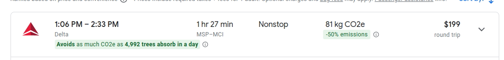
Unfortunately, the otherwise pretty decent model controversially
eliminated all non-carbon greenhouse effects a couple of years ago,
which means it wildly underestimates the impact of most flights.
Airplanes flying at high altitude create contrails and other forms of
clouding which cause a temporary but dramatic warming effect – enough
that this effect can in some cases be responsible for more warming than
the actual carbon emissions.
Fortunately, we can get an estimate of what the actual impact would be
by multiplying the figure Google Flights gives us by some estimate of
how large this effect is compared to carbon emissions. The IPCC uses a
factor of 1.9; some people believe it should be higher in many cases,
but a relatively short flight like this also spends a lower proportion
of its time at high altitudes and thus has a lower impact, so this
seems like a reasonable number.
If I pick one of the most carbon-friendly flights in both directions,
that comes to \( 81 \times 1.9 = 153.9\; \text{kg CO}_\text{2}\text{e}
\) in each direction, or 308 total. That's roughly a 20% premium for
flying. So flying isn't better in my case, but it's a whole
lot closer than I would have expected. If I were driving a less
efficient car, flying might well come out ahead. (Of course, my car is
average; if I owned a Fiat or a Chevy Volt, driving would look a good
deal better.)
We need to be careful though: we've only considered the impact of the fuel. A
rule of thumb is that the gas you burn is responsible for only about half of
the total environmental impact of an ICE car, when you consider the materials
that went into building the car, the fluids and parts that get changed out
during maintenance, the infrastructure required to drive your car, the
emissions produced by getting the gas to your fuel tank, and so on. However,
while I haven't seen any specific numbers for airplanes, it intuitively seems
unlikely to be vastly different. Compared to planning your own road trip,
airlines are huge organizations that have a substantial carbon footprint, but
flying also requires a whole lot less infrastructure than driving does; there
are only a few thousand airports worldwide that host regularly scheduled
commercial flights, and in between the plane needs only empty air, while cars
need millions of miles of roads, parking, gas stations, etc. Similarly,
airplanes are much more expensive and complex than cars, but there are way
fewer of them and they carry way more passengers.
That felt like hand-waving, but then I checked my copy of How Bad Are
Bananas?, in which Mike Berners-Lee does a bunch of lifecycle analyses for
the carbon impact of everyday things. He found a total figure of about 500 kg
for a flight of a touch less than this length, which is very close to what I'd
expect if the non-fuel components are indeed roughly the same as the fuel ones,
so I actually feel fairly confident now. (I wish he would have given some of
the components that went into this number here – he does for some calculations,
but not all of them.)
It's worth pointing out that this whole thing maths out only because I would
be driving alone. If you have even two people, driving immediately becomes much
better than flying, even if you drive a less efficient car, because the car
loses only a tiny amount of fuel economy by having a second seat filled, while
the amount of the plane's total fuel burn apportioned to you doubles when you
buy two seats. If you fill a four- or five-person car, driving probably even
works out better than taking the train. Similarly, if you have to make a
connection, the overhead of landing and taking off again (plus the additional
distance created by taking an indirect route) is very likely enough to make
flying clearly worse.
One more consideration: one of the worst impacts of flying is not that it
burns more carbon than alternatives, but that its speed enables additional
travel that wouldn't otherwise have happened at all. If you had to take an
ocean liner from New York to London, which is a 5–7 day trip one-way, it's
unlikely you'd book a five-day vacation there. So before you say “flying's not
so bad!” it's worth considering whether you would have made the trip at all had
you not been able to fly. Here I would have – I didn't even consider flying
until I had already decided to go – but this definitely isn't the case in all
situations.
This wasn't part of the question, but I would feel remiss not to mention that
driving alone is two orders of magnitude more dangerous per mile than taking
the train or flying. For all the apparent scariness of flying, only 1 in 17 million passenger-trips on a commercial airline
ends without safely returning to the ground. To put that into perspective, if
you took ten average-length flights every single day on airlines with an
average safety record, it would take you 4,654 years to reach a cumulative 50%
chance of dying in an airplane accident. It's more dangerous to be at home than
sitting in an airliner, and driving to and from the airport is the most
dangerous part of all but the longest trips by air. (And US airlines are even
safer! An incident on a US passenger flight hasn't killed more than 10 people
since
2009, and US airlines take somewhere around 75
million passenger-trips per month, not counting the COVID
dropoff.)
In contrast, driving is dangerous enough that it might change the best mode
choice in some cases. In the analysis of traveling 400 miles that I quoted
above, Berners-Lee estimates that, when considering what mode is fastest, you
should add 2–3 hours of travel time to the driving option to account
for the chance that you lose the rest of your life in a fatal accident. (If you
want to be pedantic and apply this in the other column, too, add 1–2 minutes to
your flight time.) That doesn't even include the chance that you get injured or
kill someone else.
For fun, this is what the wiki looked like on January 21, 2020, when I added
it to source control for the first time:
It's hilarious to me that you can see all the way down the list of all tiddlers to the
letter “I” on one screen without scrolling down! Now if you start on “A”, you
only get as far as “Ag”.
For some time, I've been dissatisfied with the name Zettelkasten for
my primary note-keeping and writing system. While I don't think it's
particularly inaccurate to call the notes “a Zettelkasten,” “Zettelkasten” is a
poor proper name. It doesn't distinguish my system from anyone else's; it's
difficult to spell and pronounce for anyone who doesn't know German; its
literal translation (“slip-of-paper box”) is dull and unevocative, likely
subconsciously worsening the tools
for thinking don't wow problem; and, most importantly, it's a woefully
incomplete description of the mission of the tool, which has shifted and grown
a great deal since I started it in 2020. I started out intending it to be a
place to take notes on things I read, perhaps with some personal-encyclopedia
sort of entries added. It's steadily growing into something that almost feels
like a physical place when I sit in front of it, encompassing all the
information I need to understand both my life and that crazy world out there.
And I hope that it continues to produce novel ways of thinking and relating to
my life. Having a name that was created by another person for another purpose
is a cognitive obstacle to this mission.
The primary public link going forward will be https://mosmu.se, which is
mnemonic but short enough to also serve as a shortened version. As someone with
a long name who often uses long names, all of my URLs are way too long and hard
to type, and I want to improve on that!
https://zettelkasten.sorenbjornstad.com
will continue to operate. The shortlink alias http://562.nz will
stay around for now, but I may eventually nonrenew it, so in the event that anyone is
currently linking there, updating would be a good idea.
The Darktable image editor when I opened it after an update today:
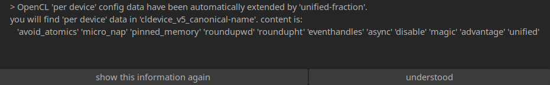
I understand zero of the content words in this message. I don't know what
OpenCL is, I've never heard of 'unified-fraction', and I certainly do not know
what any of the quoted items are. Somehow something has been reconfigured, but
I don't know what it is, why, or whether I should care.
My options are, apparently, to say I understand (and hope this doesn't somehow
require action later) or to show this complete nonsense again next time I start
the app.
We should go back to having schoolkids move historic houses
I was flipping through my copy of Oldest Twin Cities
the other day looking for somewhere to visit on the weekend, and stumbled
across the story of the John J. Stevens House, which was one of the first
private homes in Minneapolis but also the seat of government for the city's
first years.
In May 1896, it was rotting and the site was slated for redevelopment, but the
house had so much history nobody wanted to see it demolished. Solution? The
newspaper asked children to skip class and come pull the house six miles across
the city to Minnehaha Falls Park, where they served everyone popcorn and
lemonade. Over 10,000 turned out, organized into relay teams, and got the job
done (with assistance from a few horses).
I'm sure you can pose a million objections to this approach. That seems
dangerous! Child labor! We can't encourage kids to skip school! But all I can
say is, if I ever have children, I want them to live in a world where one of
their childhood memories is cutting class and participating in a city-wide
event to preserve an old, rotting house, not one where the most interesting
thing they ever do is watch some videos on TikTok. How many people die
regretting that they skipped a few days of school or sprained an ankle? Not to
mention that I'm sure every kid in this event learned a lot more about life
from it than from one day of sitting in a classroom. We take ourselves
way too seriously nowadays, and stories of creative accomplishments
are becoming extinct.
I didn't include this in my list of St. Paul–Chicago train
stories because it didn't happen on the train and Amtrak wasn't involved at
all, but there was the time I got the cops called on me at two in the morning
over a dispute about the taxi fare, after arriving on that train.
I was visiting family and the train was so late that nobody could come pick me
up at the commuter rail station when I arrived, so I had someone book me a
taxi. At the station, I got into the taxi and then another woman came up and
asked if she could save some money by sharing the taxi with me, because she was
going somewhere only a few blocks away from where I was headed. I agreed, the
driver agreed, she got in, and we drove the twenty minutes or so down the
highway and arrived at her stop – and the driver asked her for the full fare
showing on the meter.
The driver told us that it was their policy that, specifically when taking
passengers from a train station, they charged the full fare to each passenger,
unless they were related. Given that we'd told the driver what we intended
ahead of time and he hadn't mentioned this “policy,” we were pretty sure we
were getting scammed and refused. When he threatened to call the police, I thus
told him to go ahead, figuring he wouldn't actually want the police there if he
was trying to scam us. But apparently he wasn't, and this was the actual policy
of the company, so that's how I ended up outside of the cab with the police
telling us if we didn't pay they would arrest us for theft of services.
I doubt they would have actually arrested anyone over a $20 cab fare, but at
two o'clock in the morning I didn't have much patience, so I just paid figuring
I could dispute the charge with my credit card later. Calling this theft of
services seems ridiculous, too – I wasn't saying I wasn't going to pay the cab
fare, we just disagreed on what the correct amount was. If the driver said the
fare was $20,000, would they arrest me if I didn't pay up? I think they were
just bored.
Also, the driver was texting and driving on the way. He nearly ran off the
road multiple times during the trip, and did not apologize or apparently think
this was concerning.
I have not ridden with Krazy Kab since, and would consider walking before
giving them any more of my business. (Perhaps the name should have been a tipoff.)
Borealis train service between Chicago and Minneapolis–St. Paul starts Tuesday
As someone who has taken 43 one-way train trips between southeast Minnesota
and Chicago in the last 10 years (yes, I counted), I am very excited to report
that Amtrak is adding a
second daily train
between them! The existing service
is fine, but it's nice not to be hamstrung into always leaving Minneapolis at
8:50am and Chicago at 3:05pm. Arriving home at 11:45pm once you disembark,
walk to the parking lot, and drive home is a bit of a downer when you have work
the next day, in particular.
Both directions will leave at midday, with the St. Paul departure at about
11:30 and the Chicago one about 11:00 (edit: corrected Chicago time).
As a bonus, the eastbound Borealis ought to be on time much more often. The
current service is provided by the Empire Builder long-distance route, which
comes all the way from Seattle, so the timetable often can't recover from
delays up in the Rockies and elsewhere out West. The on-time performance has
been tolerable in the last few years (it used to be absolutely dreadful, with
3-hour delays being average and 8-hour ones not altogether unusual), but
sometimes you really want to be confident you can arrive at a specific time.
One of my favorite singer-songwriters is doing a concert in Milwaukee
Wednesday after next, and I had some Amtrak points burning a hole in my virtual
wallet, so I'm taking a free trip down there to try it out. We'll see how it
goes!
Best story from those 43 trips? I'll let you decide:
I had dinner with a self-described “Marxist nihilistic anarchist” who
believed that vacuum-tube amps allowed you to communicate with the dead.
(Transistorized ones apparently aren't up to the task.)
I sat in a nearly empty car with three blonde mid-twenties hairdressers,
perfectly matching every stereotype you can think of, on their way to
a cosmetology conference in Chicago. They got on in Milwaukee already
with some alcohol behind them, and by the time we got into the Chicago
suburbs they had gotten kicked out of the observation car for being too
loud and disruptive. I wasn't thrilled to have them back with me,
though it was at least entertaining.
A guy in a bad mood said to the snack bar attendant, “I need a hot
tea.” She refused to give him a tea until he said he “would like a hot
tea, please.”
I asked someone I had a really nice dinner conversation with in the
dining car on a date (we both lived in the Twin Cities). She said
no, but that this can happen is quite reflective of the social
atmosphere on the train I think.
The train was so late that they cracked out instant rice and canned
beef stew from some secret cabinet and gave everyone a free meal.
Should you ever be unlucky enough to be on a train this late, it is
actually surprisingly good beef stew. (It might be a point of
Amtrak-rider pride to have ridden enough to encounter the fabled
late-train beef stew, I'm not sure.)
I talked with a woman sitting next to me, named Casandra, for almost
the entire trip (probably about 6 hours), about how her life was
falling apart, and about everything else that led to – possibly the
best conversation I've ever had with a stranger. We had enough
chemistry by the end that a girl across the aisle asked us if we were
dating. I still think about her sometimes and hope she's doing well; I
wish I'd gotten her number.
We went over a section of tracks that were on fire. The conductor came by and
explained that they sometimes intentionally light kerosene fires over switches
when it gets really cold in order to prevent them from seizing up.
Oh, and not my story, but when I was talking about this train with someone I
know, she claimed she once made out with the sleeping-car attendant in her
compartment.
The efficacy of just culture and the blameless postmortem is hardly in doubt.
The United States has achieved the safest airline industry in the world through
rigorous root cause analysis made possible only by a commitment to
transparency, justice, and truth....In 1972, by most measurements the nadir of
global aviation safety, approximately one in 200,000 airline passengers
worldwide did not reach their destination alive. Half a century later in 2022,
this number was one in 17 million.
I've never been able to grab a picture of it, but looking out the window today
on the way from Minneapolis to Chicago, I was reminded that there's a commuter
rail station in Chicago called “The Glen of North Glenview.”
Trying to learn about your friends is already genuine
I maintain a series of documents about many people I know in my RemNote knowledge base containing flashcards
about things like the names of their family members, some of their best
stories, unusual preferences they have, and so on. These cards are both useful
and enjoyable to practice.
Some people avoid doing this because they're afraid it is fake or weird.
Michael Nielsen
describes this concern:
It seems too much like faking interest in my friends. There's a pretty
strong social norm that if you remember your friends' taste in music or
their kids' names, it's because you're interested in that friend. Using a
memory aid feels somehow ungenuine, at least to me.
I think this worry involves an unexamined misapprehension of the flow of
causality involved in this practice. It's indeed true that it's expected that
if you remember your friend's taste in music, that's because you're interested
in them. But that you're using flashcards to remember it doesn't exclude that
possibility at all. The implied claim that connects this to ungenuineness seems
to be that if you're using a memory aid (viz., spaced-repetition flashcards),
you're using it as a substitute for actually caring about them: knowing
facts → appearance of caring. Certainly, one could do this (e.g., as
a confidence artist or slimy salesperson). Instead, for me, and I would presume
for most people who actually do this in practice, caring about the person is
upstream of creating flashcards about them: actual caring → knowing
facts → appearance of caring. I'm trying to learn more about the
person because I already care about them.
Why would I spend the time creating and reviewing flashcards about someone I
didn't actually care about? These aren't people I'm trying to sell things to or
hook up with, we're talking about people I want to build long-term personal
relationships with for no other reason than that I like them. Sure, it's not
like studying the flashcards takes a huge amount of time, but it's not a
trivial time investment either!
It does seem to me that most people on the receiving end understand this as well.
Nielsen notes later:
Most [friends I've talked to about this] have told me the same thing: they
appreciate me going to so much trouble in the first place.
A scholar was preparing a new edition of the Catechism and, at long last, it
was ready to publish. She sent the manuscript on to the printer with a sigh of
relief. A few days later she got the proofs in the mail for a quick check – but
when she opened up the envelope, she found that, while the layout was beautiful
overall, the alignment of nearly every paragraph was messed up, with random
ragged edges on both margins all the way down the page. Irritated, she called
the printer and asked how they thought they could skip doing half the job.
“Ah!” the printer said. “Well, we talked about it, and we thought in this case
you would prefer to have the text justified not by work, but
by faith alone.”
In thinking about #171, I was reminded there is also
the idiom “to ring off the hook,” meaning to get so many calls the phone is
ringing constantly. (Confusingly, if your phone is ringing off the hook, you
might have to take it off the hook so you can relax!) But I couldn't explain
exactly what this kind of ringing had to do with being off the hook – after
all, the intended result of the phone ringing is that it ends up off the hook
because somebody answers it, right? Why is that any different when you get a
lot of calls compared to just one?
It seems nobody else knows for sure either, but I found at least two
plausible theories:
The phone is ringing so much that the vibration literally causes the
handset to work itself loose and fall off the hook.
Because so many people are calling, the phone feels like it's ringing
again before you even replace it on the hook, even though this is not
actually happening (perhaps it starts ringing after you replace the handset
but before you've let go of it).
I was playing a
cover
of Billy Joel's song “Vienna” for a friend the other day, and we
came to this line:
Slow down, you crazy child,
Take the phone off the hook and disappear for a while.
I remarked that if you didn't grow up with landlines, this line now makes
absolutely no sense, only a few decades later. We still say “pick up” and “hang
up,” which often don't correspond to anything you're physically doing with the
phone anymore, but at least there the metaphor is transparent; even if you've
never “hung up” a phone, you can imagine how that would work and figure out
what it meant.
“Take the phone off the hook” is a different kind of datedness. First of all,
in its physical interpretation, it would seem to mean the opposite of what it
actually means: surely you would take the phone off the hook if you were
getting ready to make a call. You need a lot more context to figure
out what the phrase means, and I don't think the song is enough. You can
understand from the lyrics that it somehow means you're going to be taking time
for yourself, but I don't think you'd be able to explain why if you'd never
used a landline.
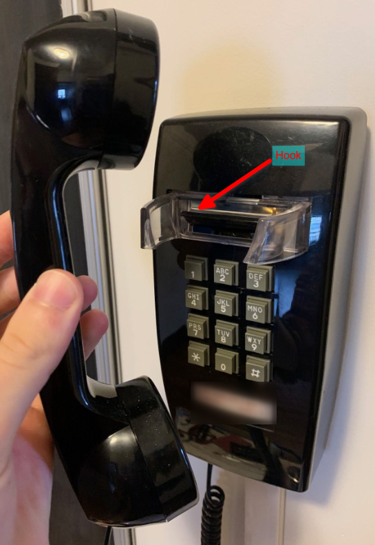
For those reading this who in fact fall into this category (now I feel
old): when you're not using a landline, the handset rests on a little
spring-loaded tongue called the “hook”. When you pick up the phone to dial a number or
answer, the hook pops up and opens the line so you can listen and
talk. While the hook is raised, your phone won't ring and anyone calling
you will hear the busy signal, because normally when the hook is raised,
you're talking to someone already.
Consequently, if you, intentionally or unintentionally, leave the phone off
the hook when you're not actually making a call, the phone will never ring.
Because it's a dumb mechanical switch, this is true even if, say, the last
person you were talking to hung up an hour ago and you got distracted and
left the phone sitting on the coffee table.
Beyond that, though, the original phrase is basically untranslatable into
modern terms. Imagine: “Put your phone on Do Not Disturb mode and disappear for
a while”? It's much harder to make software menu choices sound poetic than
physical objects. Even more importantly, there's a way in which taking the
phone off the hook felt a little subversive, because it wasn't something you
were supposed to do. Both by design (the phone exchange would scream at you
with that obnoxious
tone through the earpiece) and by social convention (in the late 20th
century, if a phone was ringing, someone was expected to answer it, and
intentionally making the phone impossible to answer doesn't really meet that
obligation!). Now that we have a purpose-designed do-not-disturb mode, you
can't really evoke this feeling anymore – turning it on, or just deciding not
to answer the phone, is completely normal.
Interestingly, that comes at the same time as our boundaries around
disconnecting have gotten even worse than
they were at the time this song was written. I'm not sure what to make of that.
Maybe it's that our enemy in staying calm and relaxed used to be other people
bothering us, and now it's us searching for novelty.
Websites that rebind Ctrl+T to something else so that you can't open a new tab
while you have their tab focused are the absolute worst. No, your site
is not so important that I never want to go to some other website while I have
yours open.
I recently came to the realization that things that are unnecessarily made out
of cheap plastic don't just feel cheap themselves, but can also make a whole
space feel less pleasant when there are too many of them (at least to me). I'm
currently working on making my workspace a bit more sparse, as I think it helps
me focus, and have been trying to pay attention to this rule, too.
Some things, of course, can't reasonably be made out of other materials:
plastic makes great keycaps, for example, and it's hard to think of another
material that would do well. But you have a choice with a lot of the things
that you handle. Wooden pencils or metal drafting pencils, not semi-disposable
plastic mechanical pencils. Plexiglass Post-it note dispenser, not smelly black
plastic. Wooden trays. Ceramic plant pots and pencil cups. Brass page markers.
Glass and porcelain drinking glasses and mugs. Metallic braided cables. Leather phone case.
Please go see a total solar eclipse sometime in your life
I made a crazy trip to go see the total solar eclipse in the US last week. I
intended to watch from the lower Midwest / South, but after I'd settled in at
Little Rock and started killing time for a couple days (having come from seeing
family at Easter nearby), the cloud forecast looked so bad that I hopped on a
flight to Albany and drove to cloudless skies in Quebec instead, not wanting to
take the chance of having to wait another 20 years for the next one in the US.
(Why Quebec? It was the only place in the Northeast in the good-weather zone
where I could still find a hotel room at the point that I re-booked. Good thing
I happened to bring my passport on a trip to Arkansas.)
But I digress. Guys, you have to go see one of these if you ever have a
chance. It was totally worth even this action-packed itinerary. I don't think
it's an exaggeration to say it was both the most beautiful and the most
awe-inspiring thing I've ever seen. People don't seem to talk about this much
for some reason, but about half of people cry; personally, I was laughing
uncontrollably and crying at the same time.
(And just to be clear: people often mistakenly think a partial solar eclipse
is very similar to a total solar eclipse and they've already basically seen
one. Even a 99% partial solar eclipse is nothing at all like a total one; it's
an entirely different set of
phenomena. Annie Dillard famously wrote
that it's like the difference between kissing a man and marrying him: one
precedes the other, but in no way prepares you for it. A partial solar eclipse
is worth going outside and looking up at the sky to see, but ultimately a
curiosity; a total one is among the best spectacles this planet has to offer.)
I don't have any pictures of totality, even bad ones, because it was such a
crazy experience I completely forgot I had intended to quickly take a couple!
But here are a couple from the hilltop where I watched:
Powdered dishwasher detergent is the only reasonable kind
For some reason, people persist in making and buying other kinds, and I don't
get it.
The little packs are supposedly more convenient, because you don't have to
measure them. But how hard is it to measure dishwasher detergent? Step one,
open the cap and pour into the reservoir until the reservoir is full. Step
two...there is no step two, you're done. Do you drink individually bottled
water at home because it's too hard to measure the water when you fill up a
glass? It's the same thing! Meanwhile, if the packs get even slightly damp or
your hands are wet when you pull the packs out, they get messy; they sometimes
don't dissolve and spread out properly; if you have a non-standard dishwasher
size, you get the wrong amount of detergent; and if your dishwasher has a
pre-rinse function and you can't fit the pack inside the flip-shut door, the
detergent gets used up before the proper cycle starts. Also, they're more
expensive. All that because it's too hard to pick up the box of dishwasher
detergent, open the spout, and pour detergent into the dishwasher?
Meanwhile, gel makes even less sense. If you spill powdered detergent, you can
just sweep it up; if you spill gel, it's incredibly messy. Gel is also heavier,
less compact, and more expensive because you're paying to transport water,
which, in case you didn't notice, is going to fill the dishwasher in just a
moment anyway. And you don't even get to skip thinking about how much to pour.
I spent a few hours putting together a map of everywhere I've ever been.
The resolution varies somewhat, but it at least includes a pin for every city,
town, or major natural feature I've visited, and sometimes some more detailed
points. This was a really fun project to put together! I intend to keep it
updated going forward.
In which Amazon.com incorrectly calculates unit prices
I was buying some Kleenex on Amazon and was about to select a pack of 8
because that was about how many I needed, when I looked at the quoted unit
price and was slightly surprised, because the unit price was less than half
that of the 3-pack:
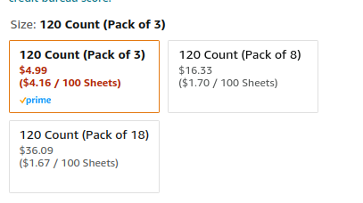
A quick multiplication by 3 in my head in an attempt to resolve the dissonance
set off alarm bells. The unit price on the left is more than double the unit
price on the right, but when you multiply it out, if you buy 3 of the 3-packs
you get 9 boxes of tissues for a couple cents less than $15, which is less than
the price for 8 boxes shown on the right!
Closer inspection yields the unavoidable conclusion that the first unit price
is just plain wrong:
For the 8-pack, there are \( 120 \times 8 = 960 \) sheets, and \( \$16.33 / 960 \times 100 = \$1.70 \) per 100 sheets (as listed).
For the 3-pack, there are \( 120 \times 3 = 360 \) sheets, and \( \$4.99 / 360 \times 100 = \$1.38 \) per 100 sheets (not even close to $4.16!).
It appears that somehow the “pack of 3” part didn't get included in the first
calculation, but did in the second (if there were 120 sheets total in the pack
of 3 it would be correct).
This is the listing for Kleenex on Amazon – hardly an unpopular product – so
it's kind of shocking this could be left wrong for any significant amount of
time. I reported an issue, so we'll see if they fix it:
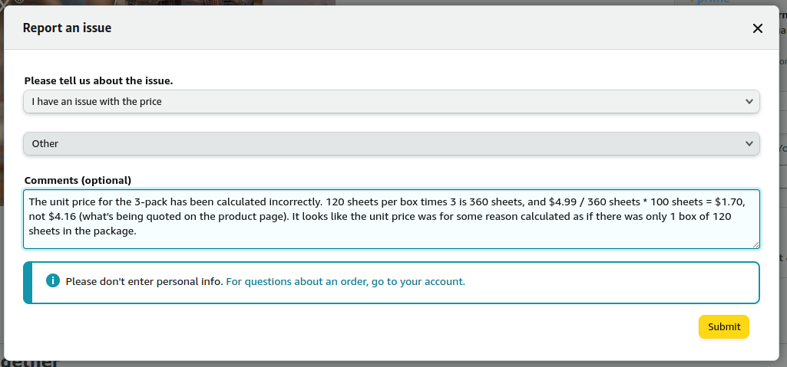
Never thought I'd be telling one of the world's largest retailers that they
can't do math.
What problem is the thing you're explaining trying to solve?
Yesterday I ran across David MacIver's “How
to Explain Anything to Anyone,” which makes the interesting point that it's
often more helpful to explain new ideas beginning with the problem they're
solving, rather than the solution.
This helped me come up with a much better elevator speech for RemNote; I've always been dissatisfied with my
explanation, and I get a lot of time to be dissatisfied with it because people
ask me what I do for work all the time! I tell people that it combines notes
and flashcards, uses learning science to help you remember more efficiently,
etc., but I can't help but think it sounds incredibly boring and not really
novel in any way.
We're solving two important cascading problems at RemNote, so we can explain it
better like this:
One reason learning and being creative is hard is because we constantly forget
earlier things we've learned and have to relearn them. There's already a highly
effective way to solve this problem called spaced repetition, which
presents flashcards to you at optimal moments and lets you remember anything
for your whole life with only a couple minutes' effort.
However, right now making flashcards that work well is too hard. RemNote aims
to address this problem and make better learning accessible to everyone:
We allow you to efficiently write flashcards right within your notes,
so you can create them as you're reading a book or listening to a lecture
without any extra steps.
We use AI to help you automatically create flashcards, then understand
why flashcards you're struggling with are hard and fix them.
We'll eventually provide well-designed flashcards – maybe with
associated learning materials – off the shelf for common topics or courses
of study.
About a year ago, in #70, I noted that I'd been stumped
on explaining what TiddlyWiki was to someone I had just met – and I had just
written a book on TiddlyWiki! I think part of the issue here is that TiddlyWiki
doesn't solve a unified problem; it's a general enabling environment that
solves different problems for different people. For me, I think it solves some
problem like this:
A key way I think is by
writing. But traditional ways of organizing writing-as-thinking, like
journals, have a major problem in that you lose track of everything you've
written on a previous topic; writing helps you get material out of your brain,
but in some sense your record is write-only. TiddlyWiki offers a highly
customizable wiki-like work environment, so I can link my thoughts together in
a way that prevents them from getting lost, and make the workspace and
organization work exactly the same way as my brain.
This still feels underwhelming, though. It may be that the tools
for thinking don't wow problem is stronger with TiddlyWiki. And we have
lost a great deal of generality. Oh well, it was a nice try.
In other words, in the signature of an email to someone I don't know, I might
write, e.g., “Soren Bjornstad (he/him)”, and I think this is a good idea.
To be clear, this is not, like, something I decided yesterday, it's been my
opinion for a while, but today I realized that I didn't currently have mine on
my landing page and added them, and I
noted that a couple of years ago I definitely wouldn't have seen that as worth
doing, so here I am saying this.
I used to suppose that the only reason to list your pronouns as a cis person
was that it was nice, because it made people who needed to list them
to not get misgendered all the time stand out less. Then I reasoned it was
just too much to ask (at least among general audiences) for everyone to take up
a bunch of extra space when introducing themselves to slightly improve the
lives of a small minority of people.
Is that true? Maybe, maybe not? It's going to depend on your values, and
probably on who you know. (I'm happy to admit that I care a lot more now than I
used to because I've gotten to know a lot more people for whom this is a big
issue – the phenomenon of caring more about problems you're closer to is just
part of human nature I'm afraid.) But I kind of don't care, because there's a
much better argument: this is actually a classic universal design
situation, where a change benefits everyone, not just the minority. Online and
in writing, pretty frequently, even if someone has a completely normative
gender presentation in real life, you still can't tell their gender or
pronouns! You're relying on having a name that's gendered, and all of your
readers being familiar enough with the name to know that. (Soren is
never a female name as far as I'm aware, but it's unusual enough where I am
that once in a while I get someone who thinks I'm a woman.) And in writing,
your eyes will just skip right over the pronouns if they're what you expected,
once you have some basic familiarity with the idea.
I remember once reading an entire novel and then flipping to the back page and
seeing a picture of the author, and realizing that I had thought the author was
a man for all 250 pages and she was actually a woman. That feeling is shocking!
This might be the most impressive thing I've ever heard of someone stealing: an
operational AM radio tower. Should someone try to sell you a radio tower,
please get in touch with the station.
Do lots of mid-to-high-income households really have no savings?
There's a common narrative that you can be living paycheck-to-paycheck at any
income level, and that this is shockingly common – some ridiculous percentage
of people with $100,000 household incomes still can't pay for a modest
unexpected expense out of savings!
But when I went to look up this
statistic recently, something gave me pause. The Bankrate article linked
shows this chart:
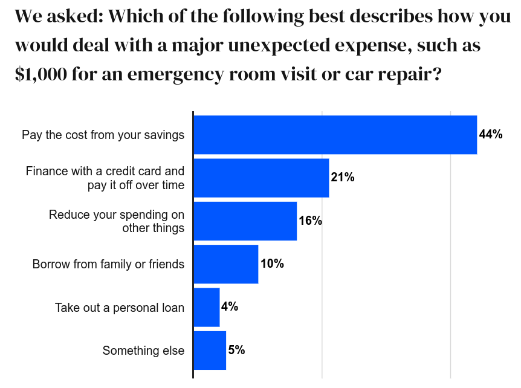
It struck me that, though I have perfectly adequate emergency savings, if
presented with this survey, I might well choose “reduce your spending on other
things,” which means Bankrate would count me as part of the (implicitly
financially unprepared) “majority of U.S. adults [who] wouldn't pay for an
emergency expense...from their savings account,” and which often gets rounded
in discussions surrounding this issue to “people who couldn't pay for
an unexpected $1,000 expense from their savings.” But while borrowing money to
pay for an unexpected expense is a last resort that you want to avoid, reducing
your spending on other things is an even better response than paying from your
savings, if you can do it without major discomfort. After all, if you want to
bring your emergency savings back to whatever comfortable level you had set it
at before, you're going to have to divert some money into there eventually
anyway; why not just do it right away, if you can?
I usually handle unexpected expenses by charging them to my credit card and
moving some money from other categories in my YNAB budget to cover it. If I have to, I might take
some of that money from a savings category, even the “emergency savings” one,
but I'll be aggressively filling it back in starting with my next paycheck. If
I stop channeling new savings into whatever I'm currently saving for and point
it to refilling the loss here instead, chances are I'll cover it by the time
the credit card bill actually hits my bank account, which will take upwards of
a month from the expense. (Getting ~45 days to pay by using a credit card is a
free service as long as you pay your bill in full every month!) So in some
sense, even if I took money out of the “emergency savings” category – which I
might not do at all; maybe I'd just delay another major purchase for a month or
two – I only “used my emergency savings” on paper.
This got me curious, and I dug into the rest of their data. They say that 70%
of households with a yearly income of at least $100,000 or more would pay with
savings, which does seem fairly bad for that level of income, but then lower
down they find that 75% of such households had enough savings to cover
three months of household expenses. I'm quite sure that three months
of household expenses for a $100,000-per-year household is sufficient to cover
a $1,000 expense! Clearly these households just wouldn't want or need to pay
the expense from their savings, perhaps for reasons like mine. Unfortunately,
the exact details of the survey don't appear to be publicly available, so we
don't know much about what they say they'd do instead.
It is true that this still means 25% of $100K+ households don't have three months of
expenses saved, and the survey finds that 5% of them have no emergency
savings, which is bad, sure. I'm not saying that I now believe it's impossible
to be paycheck-to-paycheck on a high income; obviously it is. But a
single-to-low-double-digit number of $100K+ households being financially
irresponsible doesn't really seem shocking.
Minor Gripe: In the survey question, they count
“car repair” as an unexpected expense. If you own a car, I can all but
guarantee it's going to need $1,000 of repairs at some point (if not, can I buy
your car?), so this hardly seems unexpected. Car owners should be saving
separately to fix their car; when you need repairs, you pay out of your “car
repair” money and barely even notice.
In which I make flashcards to remember where I put my glasses
This is probably the most creative use I've ever made of my SRS. I'm going
to try to see the April
solar eclipse in the US, so I bought some eclipse glasses ahead of
time, as they tend to become difficult to find if you wait to buy them.
However, I couldn't figure out where to put them in the meantime so I don't
have to tear the house apart looking for them come April; I don't own anything
else much like them, and I don't have a specific place for items I want to take
on future trips.
My solution: Put them in the box with my clothes iron in my bedroom (purely
because it was distinctive and there was plenty of space), then create a
flashcard asking where I put my eclipse glasses. Even in the event that I don't
remember the actual answer, I'll for sure remember that I made a flashcard
about it and can go search my knowledge base for it.
I was at Home Depot today picking up a few things, and an employee came up to
me in the trim aisle trying to pitch their spring sale, 25% off all HVAC
equipment and installation. He asked me if I needed anything replaced in this
area. I told him no, and he persisted, “Well, how old is your heating and air
conditioning?”
I told him my co-op's steam boiler was 102 years old. He mumbled something
about how old equipment lasts, then still insisted on clarifying that
I'm not solely responsible for deciding to replace it before he wandered off.
But that got me thinking: that boiler is original to the building (which is
how I know its age to the year). It was originally coal-fired; at some point it
was retrofitted to run on natural gas, and it's still working great today,
needing only occasional regular maintenance (one of my neighbors learned and
became a licensed boiler technician to take care of it on the cheap). All the
radiators are original, too. One of mine kind of needs a new coat of paint,
that's about it.
Of course, nowadays you're lucky if your new furnace lasts 15 years, maybe 10,
so this seems remarkable. But isn't it actually more remarkable that we think
it's reasonable that an expensive climate-control unit only lasts for ten
years? This is wild. The original heating systems in early 1900s
buildings usually outlived the building, and that shouldn't even be that hard,
because most buildings get torn down or changed beyond recognition long before
they reach the end of their usable life. We've just decided that it's normal to
buy things that suck and can't be maintained and repaired.
Do we have better heating nowadays? I'm not even sure about that! Steam heat
is way more pleasant to live with than forced-air heat or electric baseboard
heat, though roughly equivalent to hydronic systems. Most steam systems do lack
per-unit thermostats, but surprisingly this doesn't prove to be much of an
issue; when I first moved into a building without them, I thought it was going
to be terrible, but after the first few weeks, I just shrug on the occasional
days when my apartment is slightly too hot or too cold (we're talking like 5°F
maximum), go “It's a little cold today!” and put on a sweater. Some natural
variation is good for you; it's almost like pleasant changes in indoor weather.
And sure, newer boilers and furnaces are more efficient, but you know what's
inefficient? Buying an entire new furnace every ten years. I'm sure we could
save money on the gas bill if we ripped out the entire steam-heating system and
replaced it with a modern hydronic system, but that would be insanely expensive
and I guarantee you that one wouldn't last another 102 years. If, on optimistic
assumptions, we managed to redo the nineteen-unit-plus-basement building with a
whole new HVAC system for $100,000, and this cut our winter energy bill in half
for a savings of about $2,500 per year, I still don't think we'd ever make it
back – even before discounting, it would take 40 years to break even, and good
luck getting a modern commercial HVAC to last 40 years. Far better to invest
the difference and have it ready when the old one at long last becomes
unrepairable – and who knows when that will be? Maybe it'll last so long the
point will be moot by then (e.g., maybe the building burns down or we sell it
and it's no longer our problem).
Anyway, I want to choose more things that last for my apartment, so please
tell me off if I try to get vinyl flooring or whatever badly-aging material or
appliance is fashionable.
Tangent:
The folks who installed the heat here also made the brilliant design decision not
to put a radiator in the bedroom. Because you can't just go turn the heat up
and down when it's the wrong temperature, the people who laid out heating
systems used to have to think very carefully about things like the wind
direction, where the sun would shine during the winter, the number of windows
in the room, how heat would spill from and to adjacent apartments, and the
ideal air temperature for each activity, so the temperature would end up right.
So here the bedroom is automatically about five degrees cooler, matching most
people's preference for a slightly cooler sleeping area, and you can adjust it
anywhere from about three to seven degrees depending on the weather and your
personal preferences by deciding how far open to leave the door when you go to
bed. Only the most expensive heating systems today have an effective way to set
a different temperature in one room than another, and here with 1920s
technology it happens automatically!
Mark Forster's
Autofocus
productivity system is a method of working through a to-do list where you
identify the task to work on next by scanning through one page of your list
at a time and doing the task that “feels right” at that moment. This is
intended to ensure that you're doing something you feel motivated to do and
capable of doing at all times, and in my (at this time limited) experience, it
works extremely well.
The challenge here is, what do you call this feeling? The closest thing I've
come up with so far is the ridiculous compound anti-ennui. I think
everyone knows the feeling, and as the name suggests, it's somewhat the
opposite of ennui. Rather than a vague feeling of tiredness and boredom (or
even internal resistance), it's a sharp, focused sense of energy, excitement,
and well-fittedness: the task feels important, tractable, and suited for your
current mood, and you actively want to do that task, specifically.
Salience is also not bad, and is a normal, recognizable word, but I
don't think it evokes the complete emotional picture.
Suggestions
I occasionally offer awards to internet strangers who send me recommendations I love.
If I am so moved, your choice of:
$10 USD sent via PayPal
a personal thank-you note via snail mail
grab a drink with me sometime you're in Minneapolis (or I'm near you) and talk about the recommendation or anything else
Gratitude and brownie points awarded in all circumstances!
Apple quietly added a bunch of pleasant new ring/alarm tones to iOS 17. My
favorite is “Departure,” which I selected more or less at random when I
recently had COVID and wanted my medicine alarms to be easily distinguishable
from any other alarms or timers I might set (see also
#151 on differentiating phone alert tones).
I knew this was my new favorite tone when an alarm rang and I found myself
pausing some music I was listening to so I could listen to the alarm
tone. Hear for yourself:
Problems I can't believe nobody has solved, part one
Here's a problem that one would think the internet would straightforwardly
solve, but apparently doesn't. Suppose I feel like taking a short leisure trip
in a couple of weeks. Where should I go? Maybe I have some ideas about when and
where, but I'm flexible, and I don't particularly care how I get there (plane,
train, bus, maybe driving; some itineraries would be a deal-breaker, of course,
like 24 hours on a bus with 3 transfers, but many options would be reasonable).
I want to find something that's cheap and convenient. Maybe it could also watch
fares for places I'm interested in and let me know when it finds something
particularly cheap (there are some sites that do this with flights specifically
on a somewhat limited basis, so this is clearly possible).
Of course, some people claim to have a solution, but every attempt I've seen
utterly fails at one or more obvious requirements, e.g.:
It includes only plane tickets, or only bus and/or train tickets.
It doesn't allow for any flexibility; you already have to know exactly where and when you want to go.
It can't find any cross-mode or cross-company transfers, and/or doesn't consider that you could stay overnight somewhere (which you might enjoy seeing anyway).
It just plain doesn't find connections that I know exist, and aren't exactly secrets
(e.g., I found a site that claimed it didn't know of any way to get from Chicago to Indianapolis).
Even Google Flights, with a somewhat restricted problem to work on, sometimes
does a bad job at this; the pricing calendar lists the absolute cheapest fare
it finds, which sounds like what you want until you realize that, instead of
giving you the price for an obvious direct flight, it gave you the price for a
24-hour flight on Spirit that goes clear across to the other side of the
country and has a 15-hour layover, and all the even slightly sensible flights
are twice that and might not be the cheapest on the same day.
Maybe this is a much harder problem than I realize, but it seems like plenty
of individual companies' booking sites do a good job at most of this, and
solving the full problem seems like merely that plus aggregation (which isn't
trivial by any means, but other places do it fine on its own), so I'm not sure
I believe it.
Sometimes knowing more can make you less efficient at solving a problem. For
instance, I recently tried to replace a lightbulb in my closet and the new
lightbulb didn't work. I then spent half an hour trying to figure out if the
socket had been wired backwards, only to find that in fact the tab at the end
of the socket was physically bent and I could easily move it back. I wouldn't
have gotten stuck on this wrong guess at the problem if I had known less about
electricity!
Making life choices that are slightly off the beaten path forces you to
repeatedly explain what they are (pay the unusual category tax), leading to
substantial annoyance. How does this work?
If you don't have a smartwatch – and maybe even if you do but you don't always
want to look at it whenever you get a notification – it's often useful to be
able to tell what source a notification came from without having to look. If
you're getting a calendar notification and you didn't remember you had anything
scheduled, you'll probably want to look at that right away. If you're driving
and you get a marketing text, you don't need to look at that, but if you get
three texts in a row from someone you're on the way to pick up, you probably
want to stop and see if you need to change plans.
On iOS, you can set custom tones and vibration patterns for many events in
Settings > Sounds & Haptics. In addition, you can set ring tones
and text tones for individual contacts inside the Contacts app. I've attached
custom audio tones to a few of mine, but I differentiate my notifications
almost entirely using the haptic (vibration) pattern options, because that's
usable whether the phone is on silent or not, so you always have the
information and you only have to learn it once. I also find it's much easier to
make mnemonic tones this way; more on that in a moment! (For this to work, you
need to have “Haptics” set to Always Play in Settings > Sounds
& Haptics, so that even if your phone is off silent mode you'll get the
vibration.)
The remaining piece of the puzzle is learning the patterns for all the people
you frequently text and want to be able to distinguish. I've found using Morse
code makes this vastly easier: you might already know a little bit of it, and
it was designed to be easily distinguishable in a noisy environment. Usually I
use the first one or two letters of the person's name (add a second letter if
the first one is so short in Morse code that it might cause you to miss the
notification entirely, or if it conflicts with some other existing tone). I
record these as new custom haptic patterns as I need them and name them with
whatever they spell in Morse code (e.g., “C”). As a bonus, you learn a little
bit of Morse code!
I assume there's a way to do this on Android as well, but I've never tried, so
I don't know where the options are.
I've compiled a list of eight broad ideas I'm fascinated by and trying to
explore this year – some intellectual, some experiential, some creative
(although really, the path to understanding any idea involves all three). The
ideas are as follows, expanded upon in much more detail in the linked
Zettelkasten tiddler:
Understanding the goodness of places
Becoming committed to the best places
Living and working in community
Experiencing romantic relationships
Searching for deep friendships
Turning inversion of control into a life strategy
Making education worth the time
Building and understanding mission through written reflection
Quick, what's the densest metro area in the US? I'll give you a hint: It's
almost certainly not what you think.
The most natural answer would probably be New York, but I bet you didn't pick
that because that would be the obvious answer. Maybe San Francisco? Or Miami?
Answer and discussion
Believe it or not,
the answer is Los Angeles at 7,476 people per square mile,
well ahead of San Francisco at 6,843 and New York at 5,981.
(San Jose is a separate metro area in the statistics and squeezes in between them.
Honolulu, of all places, is fifth –
makes sense once you think about it, but definitely comes as a surprise.)
That's mighty odd because LA is known for its sprawl.
The trick is that we're measuring populations within full metro areas,
not city limits
(LA would certainly not win if we did city limits!).
While the most built-up areas of New York and San Francisco
are much larger and denser than those of LA,
LA has medium-high density throughout almost the entire metro area,
while NY and SF are composed of dense but relatively small cores
surrounded by comparatively low-density areas.
YNAB is a fantastic budgeting tool,
excellently designed...which is why this dialog box really makes me mad. The
purpose of the dialog is to manage the list of payees in your account. A
straightforward thing to want to do here is to select a bunch of payees and
then merge them together (you often end up with duplicates if you accept the
default name that comes in on your credit card) or delete them. You can do this
by selecting the checkboxes to the left.
But witness: if you click even a tiny bit to the left of the checkbox
itself, your entire selection comes undone, selecting only that item and losing
all the work you did so far. And you can't click on the name instead, which
presents a larger target, because that selects only that item.
Also, when you actually do delete or merge the items you've selected, your
scroll position doesn't adjust at all, so you lose track of your place in the
list. This makes the above problem even more aggravating, because if you stop
selecting a bunch of payees somewhere in the middle and merge or delete them
(so that you don't have to start over from the beginning if you click in the
wrong place), you have to memorize what item you stopped at before clicking the
button, then find it again in the list:
Telling someone they don't have to answer makes them want to answer
I was talking on the phone with a friend yesterday and they asked me a
somewhat personal question, preceded by something to the effect of, “This is a
personal question and you don't have to answer if you don't want to!” I said,
no, no problem at all, and proceeded to answer in detail.
I realized after hanging up half an hour later that I don't think I've ever not
wanted to answer a question phrased in this way, and I'm not exactly the world's
most forthcoming person when it comes to sharing the details of my personal
life, so that seems surprising. (Certainly I can recall cases where someone
asked a similar question phrased in a different way and I felt very
uncomfortable.) And it's not that, on any occasion I've gotten such a question,
I didn't want to answer, but felt pressured into doing it; I always actually
wanted to. It's like there's some reverse psychology here: when someone insists
on an answer, you don't want to give one, and when they tell you you totally
don't have to give one, you want to.
This reminds me of something Jason Fried and David Heinemeier Hansson (of
37signals) say in their book It Doesn't Have to Be Crazy At Work. When
you interact with a customer having a problem, there are two tokens on the
table: “it's no problem” and “it's the end of the world.” One side picks one of
the tokens, and then the other almost inevitably takes the other. You want to
take “it's the end of the world” token right away, because then your customer is
forced to take “it's no problem” – if support starts apologizing profusely and
offering all sorts of solutions, you can't stay angry at them! And importantly
to the comparison, it's not that the customer just pretends not to be
angry on the phone, they actually end up becoming less angry.
I think the same thing is going on here. When someone starts by saying you
don't have to answer their question if you're uncomfortable, they're taking the
“it's the end of the world” token, and you naturally follow up with the “it's no
problem” token. When someone doesn't do that and just asks like they're entitled
to the answer, they're taking the “it's no problem” token, and if you feel
sensitive about your answer, you end up taking the “it's the end of the world”
token.
It's worth analyzing this one level deeper. I think the key is that most people
want to be vulnerable and serious with others, but oftentimes we're unsure
whether it's safe to do that. When someone says “it's the end of the world,”
that they understand the question might be difficult and it's OK to end the
conversation, they're also implicitly saying that they care about and are paying
attention to how that question might make us feel – which more or less means
it's safe. This is analogous to the support situation; when the company says
“it's the end of the world,” you see that they are taking the problem seriously
and will figure out how to make it right, so there's no need to display your
frustration anymore to get what you need.
Of course, in either scenario one could fake caring, but this doesn't seem to
happen very often, perhaps because the result if discovered would be very costly
(interlocutor loses trust in you, more or less permanently) and discovery is
likely.
It should be noted that, as an intentional technique, this works in reverse,
too: if you need to start a difficult conversation and you feel
uncomfortable about it, saying that you do will usually make others much more
careful about your feelings, making the conversation less difficult.
Minneapolis exists because of the Saint Anthony
Falls located downtown on the Mississippi River, which were a convenient
source of power before electricity was widely available. First they were used
to process timber coming from the northern parts of the state, and later wheat
from all over the Midwest.
Milling in Minneapolis ended in the mid-1960s due to a variety of factors
preventing the location from being cost-effective relative to other options.
The mills then sat empty, taking up prime riverfront space, for several
decades. In 1991, the General Mills mill at Washington and Park Avenues caught
fire in the early morning and was severely damaged. The city used this as an
opportunity to clean up and revitalize the riverfront – which is now delightful
– and as part of that project, they stabilized the ruins, added a glassed-in
portion, and built a museum. I hadn't been yet, so I stopped over on a recent
weekend.
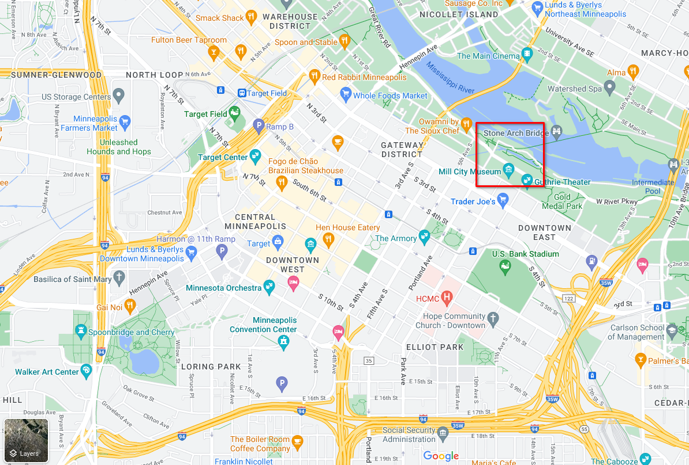
Looking down into the courtyard from the observation platform in the museum:
Looking across the river towards the Stone Arch Bridge from the river side of
the museum. The bridge formerly carried rail traffic into downtown Minneapolis.
Intercity passenger rail now stops exclusively in St. Paul, and there is no more
industry next to the river downtown, so in the nineties the bridge was converted
into a pedestrian and bicycle path with a stunning view of the river and the
skyline. (See also #43.)
Looking back at the museum from under the bridge:
The museum itself was solidly good, if not amazing, and is worth seeing if
you're in town and interested in history.
Found this one in the archives today: I was buying some software licenses at
work, and noticed that there was no validation on the “number of licenses”
field. I typed some zeroes until I got bored and ended up with this:
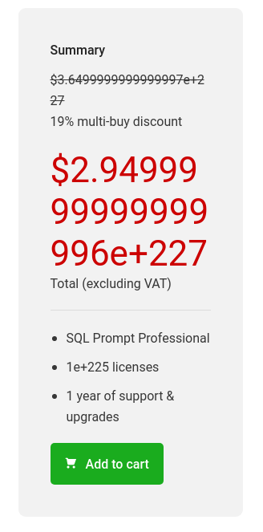
For scale, that's approximately
10,000,000,000,000,000,000,000,000,000,000,000,000,000,000,000,000,000,000,000,000,000,000,000,000,000,000,000,000,000,000,000,000,000,000,000,000,000,000,000,000,000,000,000,000,000,000,000,000,000
licenses for each and every atom in the universe. If you tried to pay
in $100 bills, it would be physically impossible to print enough cash even if
you had unlimited time to do so – there isn't enough matter in the universe.
I notice that despite my clearly being their best customer ever, not only do
they only give me a 19% volume discount, the rotters are still going to charge
me VAT on top of it! I guess I'll just have to pirate my \( 1 \times 10^{225}
\) licenses instead.
Riddle me this: what is a “Viewing Code” and where do I find it? Some kind of
password found in the email where I received this, or in a separate message,
maybe? (I couldn't find one.)
Nope. Here's what you do with this field, as clarified over the course of
several confused emails with the company that sent me this form: type the
number 4049, displayed in the gray box, in the white box to its left.
For several decades, people in southeast Minneapolis near the Mississippi
River have reported hearing loud, explosion-like booms, sometimes strong enough
to shake houses, at night, especially in the summer. Despite investigations by
the police, the City Council, the Health Department, the public utility
company, curious residents, and even the FBI, nobody has been able to figure
out what is causing the noises.
Rough area of the booms:
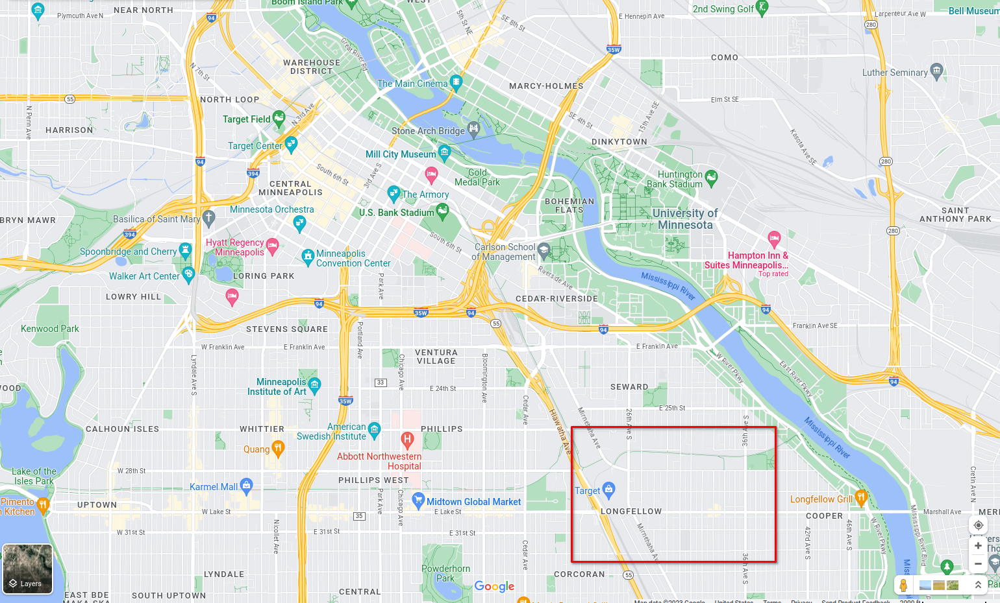
(Update 12 Oct 2024: Apparently you can buy the T-shirt.)
The progression of one's urban planning opinions, according to xkcd, and very accurate:
Not pictured beyond random tire spikes: if you do a good enough job designing
a city for people, driving can paradoxically become more pleasant when
you actually do need to drive, because making other means of transportation
more convenient gets most of the cars off the road. Good design helps everyone!
I hoped that someday soon, the United States of America might have intercity
rail service that rivals countries like the Philippines or North Macedonia.
Bill Lindeke, “Restoring Twin Cities–Duluth train service should be a big success”
[rt][source]
…for me, once the pandemic finished up, was entirely unexpected. As a fairly
introverted person, I have a fixed budget of energy for spending time with
other people, and if I exceed that I get tired and cranky. Getting to spend
most of my work hours at home, or in public places that I choose based on my
mood and where I can come and go as I please, and only do some occasional video
calls and otherwise not have to talk to people at work at all, means I can use
almost all of that budget on hanging out with people I choose, rather than
more-or-less randomly-selected coworkers. This results in far more interesting
social situations and happiness created per unit of that energy budget!
Of course, it also means I have to take on responsibility for
planning meetups and going places, or I'll end up spending all my time at home
alone being sad, because I am not automatically forced to interact with other
people at some point during the week. But that's definitely worth it.
A perfect number is one whose factors, less itself, add up to itself.
For instance, the first perfect number is 6, and its factors are 1, 6, 2, and
3; 1 + 2 + 3 = 6. The second is 28, and its factors are 1, 28, 2, 14, 4, and 7;
1 + 2 + 14 + 4 + 7 = 28.
Both of these numbers, as well as the next few, are even, so one naturally
asks, are all perfect numbers even? The answer turns out to be, unbelievably,
we don't know. Isn't that bonkers? This feels like the kind of basic
question that I – mathematically literate but no theoretical whiz – ought to be
able to sit down for a couple of hours and figure out, maybe with a couple of
hints. But over the entire course of human history, nobody has managed to
answer it. We can completely change the landscape, eradicate diseases, study
the behavior of impossibly small particles, and send people to the moon… but we
can't figure out if all perfect numbers are even.
Relevant xkcd (as always) points out that
there are also questions which sound almost impossible to answer but are
actually pretty easy.
For the last couple of months, I've been commenting to anyone who will listen
that I love Minneapolis and I can't explain why. (I like Minnesota in general,
especially when I'm out in nature, but I think I particularly like
Minneapolis.) Being out in the city reliably makes me feel happy and in my
element. And it feels like home to me in a way that nowhere else I've lived has
– I remember remarking just a few weeks after arriving that it already felt
like home, and it'll be two years next month.
I still want to try to explain what I like about this place as best I can. But
I also had the realization this week that this is what Adam Mastroianni calls
“irreducible
woo”: an experience where trying to use reason to understand is not just
ineffective but actually a category error. Loving a place is just like loving a
person, even if it feels a little less intense: you can sit there and list out
what's so great about it all you want – and sometimes this is a useful exercise
– but you have to realize it doesn't get you any closer to understanding.
Thinking about some people I love, I can make my list and then look at the list
and realize that if every statement on that list magically became false
overnight, I would still love them. Love just isn't about something's
enumerated set of good qualities and fitness for you.
But the Twin Cities feel entirely different. This is a place big enough and
varied enough that I can change and need and want almost entirely different
things, and still find them without moving again. It's a place that can grow
with me. It's a place that doesn't just feel like a nice enough place to be,
but also one that's made for me (however you choose to interpret the agency
there). And Owatonna – like everywhere else in my childhood and young
adulthood – pretty much always felt like a temporary stop on the way to a
permanent home. This feels like it can be the end of the line if I want it to
be.
Granted, there almost certainly exists, somewhere, a “better” place for me,
and it's plausible I could find it if I made that my goal. But it's also
entirely plausible, perhaps more likely, that I could spend my whole life
floating from place to place hoping the next one was slightly better, maybe
even without getting anything better in the end – and meanwhile I'd be missing
out on the chance to make the long-term commitments that make a really good
life good. It's much smarter to say you know what, this is good on an absolute
scale, and it's about as good as I expect to get, and even though there
probably is a better place somewhere else, it's not worth the cost of trying to
find it, because making a serious commitment here and now improves this place,
and investing earlier is worth more in total.
For me, the exploration phase is over and the exploitation
phase is on. While on the micro level people tend to
underexplore, people are so mobile nowadays that I think on the macro level
they tend to overexplore. Personally, I've never had a friendship that lasted
more than five years or so, or gotten to know every restaurant and institution
in even a small neighborhood. Isn't that worth doing? You can get arbitrarily
deep, and many of us have never gotten past the very highest levels. Not
only do you run out of time to get deeper if you leave in the middle, you often
can't even muster the energy to try to do it in the first place if you think
you're going to be leaving soon. When I believe I have two-thirds of a lifetime
ahead of me here, things that are valuable but require serious commitments of
time and energy to realize become obviously worth it.
At this point, I'd leave the Twin Cities if I got an unsolicited, truly
amazingly awesome, job offer somewhere else that I couldn't reasonably refuse
or negotiate to remote, or if I fell in love with someone who had no choice but
to go somewhere else for their own reasons (I'm going to try to avoid getting
attached to someone in such a situation, but sometimes the universe has other
plans!), or of course if the metro somehow became vastly less livable, for me
or for everyone. Otherwise, this is my home now and I don't plan on leaving. I
don't know what 30 years from now will hold – or for that matter really even 5
years from now – so I am not going
to claim to know that I won't, but I am going to confidently say that I
don't foresee anything changing my mind. And I'm going to make it as hard as
practically possible to change my mind, to make it easier to stop
second-guessing myself.
I've never lived in a place I've taken this seriously before; it's always
felt, at best, like I was a guest who might with a small chance decide to stay
for a long while. So this is a little bold and scary, but it's worth it.
Today I took the practically trivial but psychologically significant step of
releasing the cell phone number I've had since 2007 and getting a new one in
the 612 area code. Over the next few months, aside from looking for more social
ties, I'm going to be deeply exploring a number of neighborhoods and looking
for a semi-permanent home, ideally something I can buy and keep until and
unless my life circumstances change enough that what's now appropriate no
longer is. (If you, by some bizarre chance, have any interesting leads on
moderately priced, old-construction, central-core condos or similar
opportunities for a single person, hit me up!) I might also end up continuing
to rent where I am – I did quite a bit of research to place myself here, too,
and it's a perfectly fine option, I'm just not sure yet if it's the best spot
to commit to.
Publishing this is, of course, part of the commitment.
I've been compiling a giant commonplace document called Random Thoughts since
October 9, 2009. As of yesterday, I had collected 13,205 items, or about
2.6 per day on average, and have been doing it for almost half my life (I'm
28 years old and was 14½ when I started, so the true halfway point will be in a
couple of months).
Mathematicians found a way to distinguish between any knot and the unknot by
simply setting an upper bound on the number of Reidemeister moves
needed to connect them. If you check all sequences of Reidemeister moves up to
that number, you can prove if the knot is the unknot or not. There's just one
problem: that upper bound was \( 2^{100,000,000,000n} \) moves.
Veritasium, “How the Most Useless Branch of Math Could Save Your Life"
[rt][source]
Meta-analytic averages are not (meaningfully) capturing what happens at the
center of some platonic distribution of “dishonesty in coin-flip tasks”,
because that distribution does not exist. They are (meaninglessly) capturing
what researchers happened to do. And if they happened to do different things in
coin-flip tasks than in die-roll tasks, well, then you’re likely to find
different results in coin-flip tasks than in die-roll tasks. And that
meta-analyzed difference has no meaning.
Data Colada, “Meaningless Means #3: The Truth About Lies”
[rt][source]
I'm alive! I was traveling for most of September on three separate trips
interspersed with two crazy weeks at home. I'll be making a few catch-up posts
and should be back to a more regular schedule soon.
When you get exposed to rabies, the standard prophylaxis is composed of a
series of four vaccine shots against rabies, plus a shot of antibodies given
directly next to the wound – rabies immunoglobulin.
When I went to a travel medicine clinic today, the nurse pronounced this “human
immunogoblin” (and did not correct herself or, apparently, even notice).
I'm about to head to Bali for two weeks for an off-site with my startup. I'm
flying on Sun Country and then EVA Air, both of which have wildly strict
carry-on baggage policies: Sun Country allows you only a personal item
(although a pretty large one) and no overhead bin space at all unless you pay
an extra $50, while EVA Air caps carry-on bags at 7 kg / 15 lbs (!) and allows
only extremely slim personal items of up to 4 inches tall.
I hate checking luggage when I fly, and this looked like a straight challenge
to me (what could possibly be the point of a 7 kg carry-on limit except to
force people to unnecessarily check bags so you earn more money?), so I went
down a bit of an ultralight packing rabbit hole, and I'm delighted to report
that I succeeded at packing everything I need under these constraints! (At
least, I think so; my bag is just a tiny bit larger than the Sun
Country personal item size, but I'm pretty sure I'll be able to cram it into
the sizer since it's soft-sided. I can probably get away with taking my camera
or water bottle out first and holding or putting it in my pocket, too, in which
case it would definitely fit.)
EVA, incidentally, stands for “Evergreen Airways,” which means they suffer from RAS Syndrome. Everything about them is designed to annoy me, apparently.
I bought a few luggage items and clothes for this, but they were all things
that I wanted for other purposes or future trips anyway, so this was just a
convenient excuse.
The key to beating the significantly different constraints of both airlines
was this handy little bag which is designed to double as a packing cube and
organizer and a shoulder bag. I put a bunch of the heaviest stuff in there and
then put it in the backpack, and when I transfer from Sun Country to EVA Air,
I'll take it out and carry it separately as a personal item.
In here I put my camera (I could just use my phone, but I came out
significantly under the size and weight limits without it, so figured I might
as well bring it), Kindle, mouse, a deck of cards, some KN95 masks (yay
pandemics), elbow straps (yay tendinitis), a pencil and eraser (I didn't even
bring paper except my mini pocket notebook, but figure I might want to use some
somewhere else, and the eraser doubles as an amazingly excellent fidget toy if
my fingers get antsy on a flight or car ride), the cute little puck hairbrush,
and a pouch of hair ties and clips and other miscellaneous teeny items.
My main bag is this Tom Bihn Synapse 25 backpack I recently bought for
multi-purpose use as a daily bag around town and as a small travel bag. It
lists a 25L volume, but I swear it's a Bag of Holding; maybe because all the
compartments were designed so thoughtfully, it comfortably fits more stuff than
I can fit in bags I've owned that were advertised as 30 or 35 liters. I threw
the modular hip straps on for this trip since it's going to be a little heavy
for a day pack.
In the main pocket, I have most of the clothes I packed: a T-shirt, a wool
undershirt, a short-sleeved linen button-down, a pair of khaki shorts, a
swimsuit, and a baseball cap. (I'll wear a light sweater and a pair of jeans,
and one more of everything else, on the way. That keeps the heaviest stuff out
of the bag; plus anytime I fly to a warm place, the plane seems to be fifteen
degrees cooler than anything else I experience on the entire trip, so I
definitely want the sweater!) Also a travel blanket (I love this thing – as a
thin square piece of wool, it can also double as a bathrobe, beach towel, sun
shield, scarf, carrying bag, etc.); a manila folder with my itinerary, visa,
immunization records, and so on; a toiletry bag; a fancy liquids bag to make
airport security happy; and a computer. The MacBook Air is by far the heaviest
item in my bag, tipping the scales at 1.38 kg, fully a fifth of my weight limit
– but you can't go to a startup offsite without a laptop! Plus it means I don't
have to also bring a notebook, tablet, etc. The laptop sleeve, which is sold
with the backpack, is metal-free and slides out, as you can see in the picture,
so in theory you don't have to remove it and put it in a bin at airport
security; we'll see if the TSA drones actually accept that.
In addition to that stuff, in the one-bag configuration the shoulder bag goes
in this pocket on top.
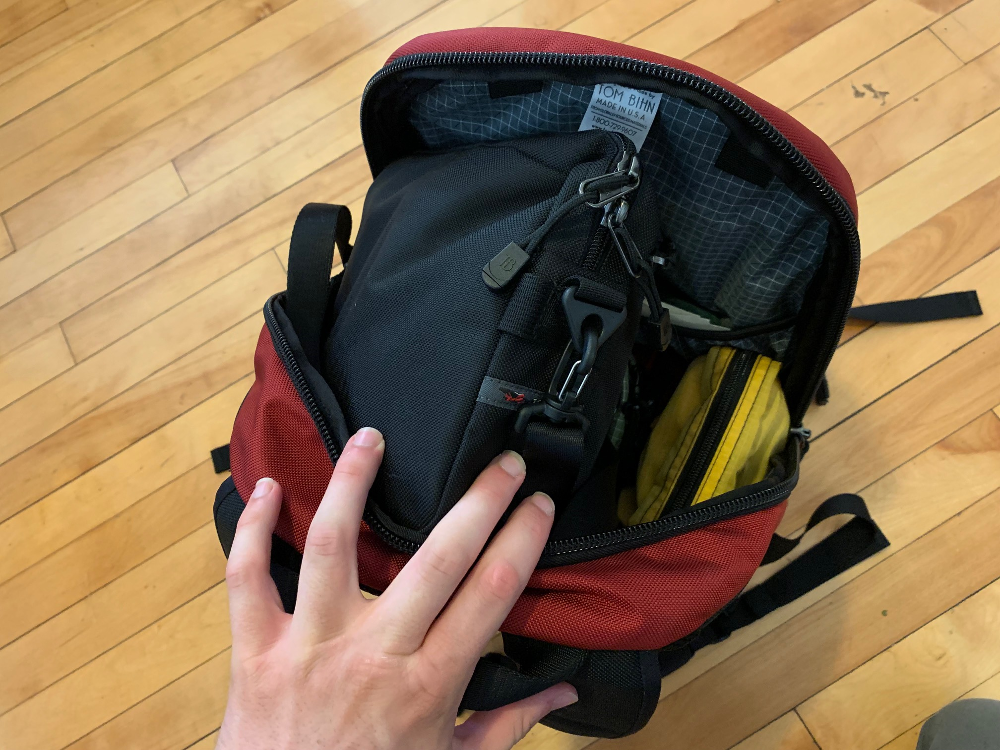
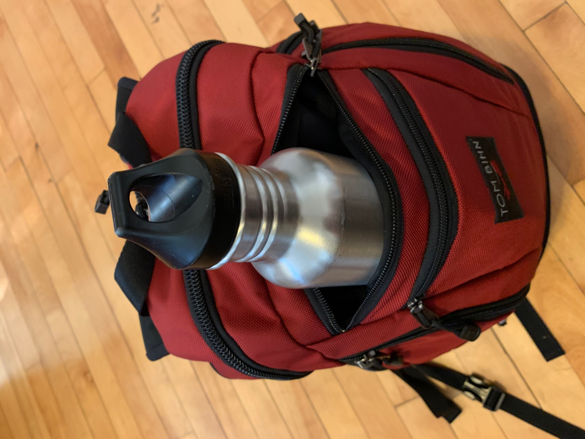
The center water bottle pocket on this bag is brilliant; it allows the side
pockets to be extremely deep and way more useful than on most bags, and means
you don't need those stupid mesh pockets on the side which make the bag go
off-kilter when you put a full bottle in one. Obviously, bottle empty if the
bag is getting weighed!
In the front pocket, passport, money pouch, more masks, safety pin for
wardrobe malfunctions, and AirTag (just in case I somehow manage to lose my
only bag!).
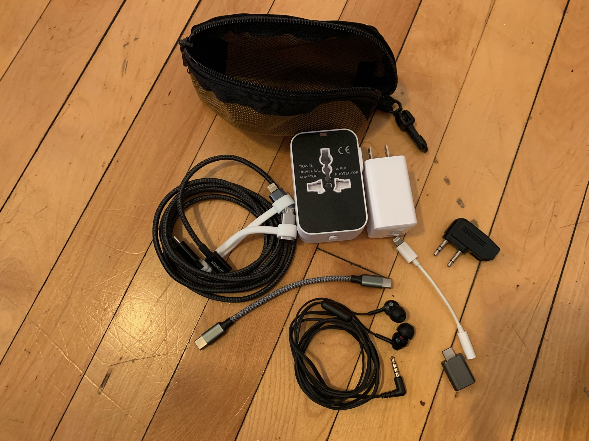
One side pocket has an address tag, 6 feet of paracord, and a cable kit. In
the kit, a plug adapter, USB-C power supply, my universal
charging cable, a 6-inch USB-C cable to crossfeed from my laptop to another
device in case my Kindle or phone dies on a flight while I'm charging the
laptop, earbuds, and the usual adapter suspects (for headphones on planes with
the old entertainment-system audio plugs, headphones to an iPhone, and USB-A
devices to my MacBook; I don't have any USB-A devices or cables with me, but
I've been burned by not having this adapter and needing to plug in someone
else's device so many times that I won't leave home without it in my laptop
bag anymore).
Other side has my boar-bristle hairbrush (a good use of space because it lets
me go an extra day in between washes without my hair getting gross) and
sunglasses.
Bottom pocket has a pair of ultralight hiking sandals / water shoes (still
tipping the scales at 440 grams), three pairs of underwear, two pairs of socks,
and two handkerchiefs (always useful). The underwear and socks are specially
rated for travel, although I've been wearing the Ex Officio underwear at home
since I learned about them; they're great everywhere. The socks are new merino
wool. I wore a pair for three days in a row at home without washing them to
test the claim that they could be worn multiple times – you could barely tell
they had been worn at all after two days, and after three they were noticeably
used but still not unpleasant either on my feet or held up to my nose.
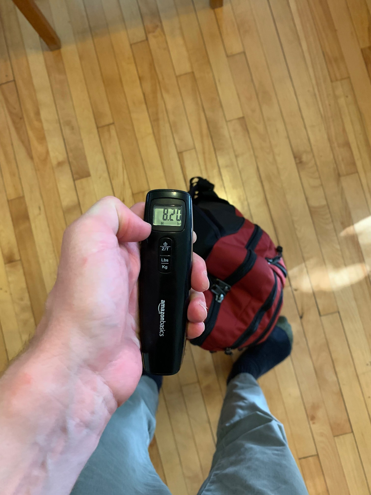
And that's it! 8.2 kg total. With the shoulder bag weighing about 1.5 kg, 7 kg
for the backpack is reached with a little margin for error.
Worst (intentional) score on an SAT practice test: 600 on the three-part test, the minimum possible on the practice exam scoring. (This happens when you're a nerdy teenager and have a very boring Saturday morning. This is harder than it sounds; you get a worse score by answering wrong than by leaving the question blank, so you can't just leave things blank for a minimum score, and the wrong answers are well-selected enough that you still have to read all the passages and do parts of the math problems to be able to definitively select a wrong answer! I think I got two questions right by accident, which wasn't worth any points on the curve.)
Worst (unintentional) score in Yahtzee: 127. (This happens when you play several thousand games of Yahtzee over the years with your mother, and thus have time to get exceedingly unlucky once in a while despite also getting very good at Yahtzee. I feel confident saying we've played several thousand games because we've had to reorder Yahtzee score sheets on at least two occasions, and there are 240 two-player games per pad and usually three to four of those in a box.)
Longest journal entry: August 8, 2015, 27 pages. I average 250 words per page in this type of notebook. (This happens when you go to Chicago with your parents to meet friends you haven't seen in 15 years and you talk about everything and start thinking about everything.)
Longest time spent talking after church: July 9, 2023, 3 hours 10 minutes from when the service finished to when I left, with no scheduled events in between. (This happens when you start talking with your best friend and then you have to move up to an isolated room on the third floor of the church because an old lady in a bad mood yells at you to stop talking in the narthex during the second service, so you don't notice that it's 1 PM and you're the only people left in the church building.)
I recently learned that they make these cute little adapter plugs for charging
cables. Together with the astounding battery life of the newest MacBook Air,
I've been able to cut down the cableage that I carry in my backpack to a single
USB-C cable with strapped-on adapter plugs plus a 65W Anker AC adapter. All of
my electronics can charge from a USB-C, Lightning, or micro-USB connector, so
this single cable can charge everything I ever carry with me.
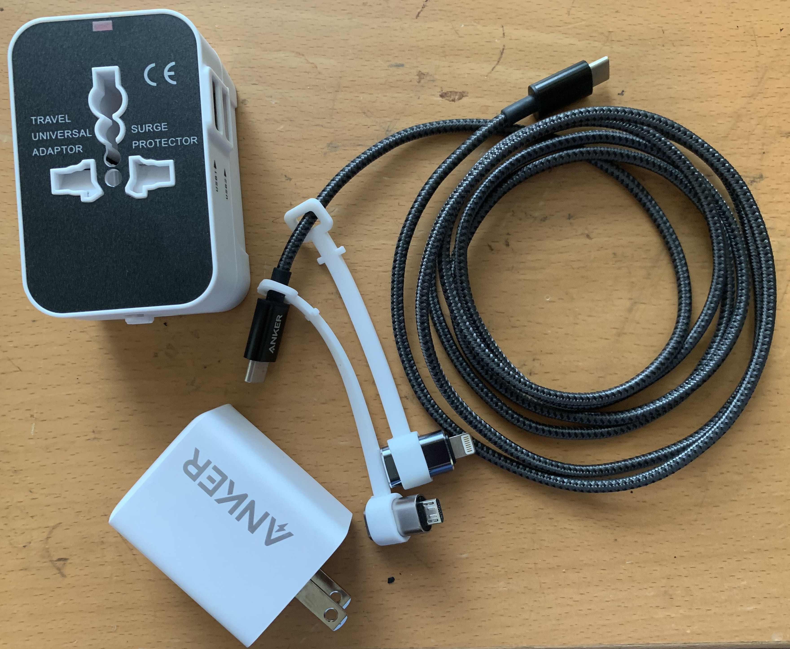
This does save a little space and weight, but not that much; the real benefit
is that my cables never get tangled and I can instantly find the one I need,
because there's only one of them!
The obvious limitation here is that you can only charge one device at a time,
but this isn't really a big deal – if I'm away from home for a while and all my
batteries are flat, I can just charge up the laptop when I'm near an outlet and
then boost the other devices from there.
If I'm traveling internationally, I throw in the universal AC plug adapter too
and I'm all set.
This is the result of ordering a “Little Cajun Fries” with your burger at my
local Five Guys:
That's a 10-inch plate. I guess it's a pretty good value for calories, at $5
for the fries, if that's what you're looking for. I can't imagine what the
standard size looks like at this point!
I visited San Francisco for a month in January and February. This week I
finally got around to finishing up this little travelogue with some photos and
explanation of what I did. It's not terribly detailed, but it's something!
Why should the public transit agency help the public?
I didn't know this, but according to this review posted on the training center
for the Metro Transit light rail services, the proper role of Twin Cities
transit is to intentionally not run extra trains when there is more
demand so that residents will have to get gouged by taxi drivers. Now that's
why I pay my taxes!
I wrote a couple of years ago about
welcome and inclusion in online communities,
focusing on a debacle created by the management of Q&A network Stack Exchange.
Since then, the company has limped along in uneasy relations with the community,
until this June, when a very poorly considered policy on contributions
that use GPT-4 made everyone furious again. This time, there was a
two-month strike by the volunteer moderators, where they refused to help keep
the site running, which ended a few days ago in negotiations between the
moderators and the company and appears to have led to some useful policy changes.
Only time will tell whether the company will keep their word, though.
I love unusual labor situations like this; how often do you see volunteers
striking? It goes to show how important online communities like this are to
people, that they will go on strike rather than just leave.
Webmaster Spam Hall of Shame: How To Keep Mice Out Of Shed
Someone's automated SEO link spam suggester picked up the link to my single-page commonplace
book and suggested that I link to their article if I love it. This sounds
like such a great proposal!
I learned today that the letter Q was banned in Turkey from 1928 to 2013,
along with X and W. People who used these letters in official documents,
signs, their children's names, etc., were actually jailed on multiple
occasions.
Evidently this is because these letters are used in Kurdish and not in
Turkish, and the Turkish government spent decades trying to wipe out that
language and culture.
As companies keep moving more and more of their actual costs into various fees
(including the one for
cabin pressurization)
to make the headline price look lower, and the justification for each being a
separate fee gets thinner and thinner, I've been waiting for the day when
someone adds a “Because We Can Fee” or “Extra Revenue Fee” or something to that
effect.
Well, the diner near my apartment has delivered, with a 5% “Surcharge
Surcharge”:
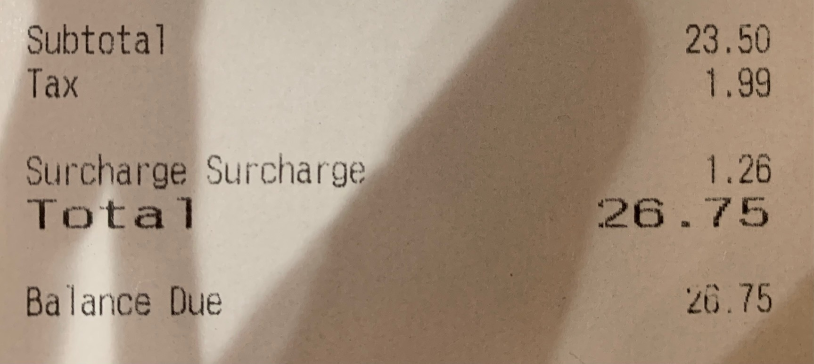
(Their justification is that food has gotten more expensive lately, so they've
had to add a surcharge to pay for it. Whatever happened to your menu
prices accounting for the cost of the food? It's not like for the rest of
history food was free and now you have to pay for it!)
I've been having a lot of text conversations on dating apps recently, and
I think I've figured out a few ways to make them better.
Most people find texting strangers awkward and difficult. Texting is already a
medium that could almost have been purpose-built to amplify miscommunications
and social anxiety; it has all the bad aspects of email (inability to read any
nuances besides the literal words, looks different on one device than another,
asynchronous with long delays in between responses), with the added flaw that
you're encouraged to write as little as possible on a keyboard that's hard to
use. But at least if you're texting someone you know well, you can make
reasonable guesses about the person's motivation and frame of mind when they
wrote. With someone you know nothing about besides a few words on a screen and
maybe a short bio of varying quality, you're starting out with a massive
handicap.
Here's a key result: small talk, far from being important social glue as it is
in person, actively works against good interactions in text. Small talk, in
person, works because it's not about the content at all; it's a pretext to read
the other person's mood and intent and conversational style for a couple
minutes before you say anything risky. But over text, you can't read any of
this – you only get the actual words the person says, plus a few side-channel
cues that are as likely to be wrong as right (e.g., if someone takes a long
time to respond, we often conclude they're disinterested or unsure what they
should say, but really they probably just left their phone on the other side of
the room). The result is that when you engage in small talk over text, you are
literally just talking about the weather or how many siblings you have or
whatever. That's enough to bore anyone to death, so after a few back and
forths, someone almost inevitably wanders away. (In a romantic context, too
much of this can actually make the person seem less interesting and attractive,
to the point that you no longer care about them, even when you know it
was an utterly mechanical problem and you learned no important new information
about them from the small-talk conversation!)
The good thing is that with the indirectness of a screen between two people,
they usually don't need the period of small talk to be comfortable talking
about something more substantive right away. Think about how much more direct
office emails are than meetings: it's common to start off a meeting by chatting
for a couple minutes, perhaps while people are filtering in, but extremely rare
to write this kind of chatter in an email; you'd rather walk over and catch up
if you had news to share. (I think this is one of the reasons remote work can
feel so isolating; even video calls tend to get much more quickly to the point
than in-person interaction.)
So I think it's better to just jump in. In support of this theory, every time
I can remember having a good text conversation with a stranger, it has
almost immediately gotten either (1) detailed and geeky or (2) vulnerable and
meaningful. Try it and see: start at a somewhat higher level of intimacy than
you would in person and escalate faster from there.
Another important consideration is that it's particularly important for
text-only conversations to
have lots of doorknobs. This means making provocative statements, asking
deep questions, and, above all and maybe counterintuitively for the medium,
trying to keep more than one thread of conversation moving at once. Every topic
naturally dies down eventually, and it happens faster than usual over text
where responding is effortful and you tend to think harder about each
statement and put more ideas into it. If you find you have nothing you
particularly want to say in response to a particular message and you have no
other topic to fall back on, it feels awkward and difficult to come up with a
new one when you can't see the other person and “feel the room” – especially
one that's not small talk – to the point that it sometimes feels easier to just
end the conversation even if you were enjoying it. Instead, write a couple
sentences at a time about two to three different things in each message (or in
separate texts that immediately follow each other every time you respond).
Lastly, if your goal in having a text conversation is to get comfortable
enough to suggest meeting in person, do that as soon as you can, maybe just a
little bit before you feel comfortable doing so. The longer you go on in an
impoverished medium, the more likely someone does something that makes the
whole thing seem stale.
The only difference between us [a school for kids with learning disabilities]
and a “regular” school is that when someone was struggling, we tried to figure
out why she was struggling and fix the underlying problem, instead of slapping
her a bad report card and leaving it at that. And I have to wonder: is that
“special education” or is it just education?
Sarah Constantin, “Errors Vs. Bugs and the End of Stupidity”
[rt][source]
How can we consistently build places that have what [Christopher
Alexander] calls the [quality without a name]? Everyone can immediately
recognize places that have it, and most of us are forced to live and
work in places that don't, which has a clear negative impact on our
quality of life. Does Alexander's failure to consistently create these
places despite more or less spending a lifetime studying it mean we're
doomed to throw buildings at the wall and see which ones stick, or is
there some other reason his pattern language didn't solve the problem?
Recently reading Alexander's A Pattern Language, I've come to realize
I've been looking at the problem all wrong, and I'm slightly embarrassed that I
didn't figure it out earlier. I've been fascinated by the impact of places on
our lives and behavior for a long time, and that, I think, is in itself the
answer to the question. The book, and the system of thought behind it, is at
least as much a political and social philosophy as an architectural handbook.
That's because places don't stand alone and have no influence on our lives (if
they didn't, this would be purely an aesthetic problem, while in reality it
goes much deeper). Rather, our bad architecture and design – both private and
public – is both a cause and a result of a series of social problems:
atomization, lack of connection to other humans and the world around us,
unbridled capitalism, disproportionate influence of the wealthy, excessive use
of debt, bad ideologies, and on and on.
Which makes the problem even more important and more challenging to solve, but
it also suggests that improving one's space can provide part of a way out.
While some patterns are much larger-scale than others – some can be
implemented by moving furniture around your room, while others require the
cooperation of an entire society – the whole project can be implemented
in a bottom-up fashion. You can make your own spaces better, convince a few
people who see the effect, join forces with them, work on the next level, and
so on. And if you succeed, even a little bit, you can't help but improve the
world.
In the 2023 adult version of “the dog ate my homework,” rookie Vikings wide
receiver Jordan Addison
was cited for reckless driving last week
after being clocked at 140 in a 55 zone on I-94 through St. Paul. He explained to
the officer that he needed to drive almost three times the posted speed limit
in his Lamborghini because his dog was having an emergency:
What if friends became physically more like each other?
I was out walking around the lake with a friend and ribbing her about being
habitually unsteady on her feet, when suddenly I tripped on a bulge in
the asphalt walkway. She joked, “You're turning into me!”
Which sent me off on this bizarre line of speculation: There's an old saw
about how you're the average of the five people you spend the most time with.
What if this were true not just mentally, but physically? What would
the world be like? Suppose it's a gradual effect; every hour you spend with
someone makes the two of you look very slightly more alike.
Would people have enough connections and spend sufficiently similar amounts of
time with each of them that most people would eventually look alike? Or would
the world diverge into little clusters of similar people? Or maybe most people
would be the same, and then some people would resist and end up in little
cliques of totally different-looking people? (I called this the “Australia
theory,” as in, where one group stays geographically isolated for a really long
time and ends up totally different from everyone else.) People's jobs might
play a big role here; corporate-drone-style jobs would probably become even
more dystopian.
I think this would be a nightmare for discrimination of various kinds. Just to
start with the most obvious example, if you're not very attractive, you could
make yourself more attractive by hanging out with better-looking people; but by
doing so you would make them less attractive, so presumably they
wouldn't be very interested in spending time with you unless they really cared
about you for other reasons. On the other hand, people could essentially
selectively breed themselves by making friends with people who had appropriate
characteristics. If you had, say, too large a nose for your taste and someone
else had too small a nose for theirs, you could join up. Or maybe you have a
desirable body type and someone else has a better-looking face, and you're both
happy to become a little more average on both counts.
Presumably most of the world would become androgynous, except for a few people
who cared so much about preserving their physical gendered characteristics that
they were willing to hide from people of another gender. Although – if
reproductive organs aren't special-cased, maybe everyone would die out
eventually in that case, and people would actually have to spend almost all of
their time in sex-segregated spaces just to keep humanity alive? Though I guess
we didn't say whether your genes are affected; conceivably this could reset
when you have children.
Depending on how fast change happened and whether you actually had to interact
to get the effect or whether you just had to be in proximity, you could have
people sneaking along behind celebrities or athletes trying to leech off of
them.
I suppose the real question is, shouldn't we be thinking about this with our
personalities when we choose who we hang out with? Because most of these
dynamics could be real, just in a different sphere! Hmm…
Avoid setting off explosives with your walkie-talkie
Of course, excessive numbers of warnings about improbable dangers in product
manuals are nothing new. But this one in the manual for a consumer-grade FRS
radio was new to me:
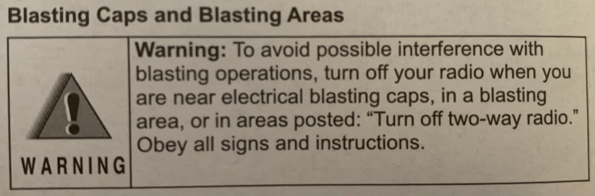
I especially like that they instruct you to turn off your two-way radio in
areas posted “Turn off two-way radio,” as if having this warning in the manual
would help if you otherwise would have refused when you saw that sign.
This is an interesting follow-on to “On Having Enough
Socks”, and a fantastic example of refused
exploration (newly created Zettelkasten tiddler): the author spent two
years in despair trying to find an effective way to muffle the noises their
neighbors were making, but never tried off-the-shelf noise-canceling
headphones. Sure, they had a theory of why such headphones wouldn't be useful
acoustically, but they could also have trivially empirically verified that they
wouldn't by buying a pair from Best Buy for $100, trying them on in the living
room, and returning them if they didn't help. When they finally tried this…they
worked better than anything else they'd tried for two whole years, and more
than well enough to solve the problem. As they write:
So let’s review: I had a problem. The ultimate solution to my problem was to do
the most obvious possible thing. But I convinced myself that wouldn’t work and
spent two years trying everything else.
It's easy to evaluate experiences or our entire lives primarily based on tiny
parts of them that make us feel particularly strongly, especially negatively.
This makes it possible to feel bad about an experience that was, overall, good.
How can we bring the big-picture perspective into our lives sooner and more
consistently?
For kicks, I asked ChatGPT if it could explain what this essay was about, based
only on the title. It did remarkably well, about as well as I'd expect a human
to do:
Response
While I don't have specific information on this exact essay, I can make an
educated guess based on the title. "Don't Measure the Quality of Your Life
Using the Temperature of Your Nachos" likely serves as a metaphorical piece of
advice.
It could mean that one should not judge their life's quality based on
fleeting or trivial matters (the temperature of nachos being an example of
something relatively insignificant). Nachos are a consumable item, and their
temperature is a transitory quality that changes quickly and doesn't
substantially impact the overall experience of having and eating the nachos.
Translating this to life, the essay might be discussing how people often
place too much importance on the temporary, fleeting aspects of their lives
(akin to the temperature of nachos). These might be material possessions,
transient successes, momentary failures, or temporary physical conditions.
Instead, the essay likely argues that we should focus more on enduring and
significant aspects of our lives: our relationships, personal growth,
achievements, and overall happiness and well-being. It could also suggest that
true life satisfaction and success are not determined by ephemeral or
superficial factors but by more profound, more meaningful aspects of life.
These are just educated guesses, and the actual content of the essay might
differ based on the author's thoughts and perspectives.
(The best part, though, was the auto-generated title for the conversation:
“Nachos and Life's Significance.”)
I keep a digital voice recorder on my nightstand to quickly capture stray
thoughts I have while I'm falling asleep or right after I wake up. Every once
in a while, especially when it's in the middle of the night, I capture
something that seems monumentally insightful at the time but is complete
nonsense when read back. Often I don't even remember recording these.
I transcribed probably my favorite ever this week (and I've been doing this
for a good ten years). No context whatsoever:
“It says here the total economic value of your sexual activity is 350 million
dollars per year.”
I gotta admit, I kind of want to know who “you” is now! That's quite the sex
appeal.
Why we don't have highly effective, reversible male contraceptives
Will I ever shut up about contraception? Not sure.
Anyhow, random soapbox today: a little while ago I did a
RemNote workflow video involving an article that advanced an argument
similar to one I've had for quite a few years. I was relieved and encouraged to
find a professional had written about this and I apparently am not crazy! The
issue here is not entirely limited to contraception, that's just a place where
the wrongness of the assumptions involved becomes most clear (and there are a
couple of special factors that make it worse).
Problem under consideration: development of any highly effective, reversible
contraceptives for men has been repeatedly stymied by ethics boards. The
concerns have been over side effects: according to the boards, the side effects
are too bad to make continuing the studies ethical.
First issue: if you actually ask the people involved in the studies, large
majorities of them have said the side effects were tolerable and they liked the
drugs. In the last one I read about, somewhere around 20% of people wanted to
stop. But…that's fine? Nobody is forcing you to use any particular
contraceptive (or, indeed, any at all). If you don't like the side effects of a
drug which serves a function for which there are many other options, you can
simply not take it and try something else; because some people don't get along
well with it is not a valid reason to tell other people who do that they aren't
allowed to have it.
Second issue: the side effects are comparable to those women deal with on
hormonal contraceptives. If we're OK with those (and it seems we are), then why
shouldn't we be OK with sticking men with similar ones? The problem here is
often mistakenly reported as something to the effect of “men are sissies and
can't deal with the side effects.” While this certainly might be a factor for
some potential users, the evidence is inconsistent with this being a cause of
the development problems – as noted above, most men who have taken the trial
drugs have been happy with them and wanted to continue, and the discontinuance
rate is no higher than for women. The problem is instead that review boards
tell people they can't keep taking them. How's that for patriarchy?
The ethical argument for different treatment here goes like this: women can
get pregnant and thus suffer various health harms, so the side effect profile
of a drug designed to prevent that can be much worse than for men and still be
ethically acceptable. But this only sounds like a good argument until you give
it even a superficial look. Yeah, (biological) men can't get pregnant, but
presumably men would not be trying to take contraceptives unless they were at
risk of getting someone else pregnant. Sex is a mutual decision of two people;
why is the person who's able to get physically pregnant solely responsible for
mitigating risks? In fact, the author of the paper I mentioned above makes a
very good argument that men should take on as much of this risk as practical to
make things more even – women get the risks of being pregnant, men get the side
effects of the contraception. And not to belabor the point, but most users of
highly effective reversible contraceptives would be people in long-term
romantic relationships. There's something fundamentally absurd about refusing
to allow people to share risks and responsibilities in a relationship which is
in substantial part defined by the people in it agreeing to share risks and
responsibilities as much as possible!
In general, ethics review boards need to take a chill pill. Writ large,
they seem to be incapable of considering opportunity costs. Can it possibly be
unethical to allow people who, with full understanding and consent, want to
continue taking some experimental drugs and participating in a study the
results of which could improve the lives of millions of people, to do that? I
think it's pretty messed up to not allow that. Yeah, a few people
might be hurt a little bit, but they agreed to take that risk. This is not the
Tuskegee
Syphilis Study and is not at risk of becoming it. If we are only willing to
allow things that are 100% safe, or 99.9999% safe, we're never going to achieve
anything ever again, even walking to the grocery store to buy some milk. At
least knock a couple of those nines off when you have
smart,
well-informed people agreeing to be part of the discovery process.
Winning at Kavka's and Newcomb's Problems by making extra commitments
Previously, I suggested that winning a million dollars
in Kavka's toxin puzzle is impossible because you can never intend to drink
poison when you know you can change your mind penalty-free at a later time, and
suggested this might call my solution to Newcomb's
Problem into question as well. (If you haven't read those posts, do that
now, or this one won't make much sense.) But could you make it rational to
actually drink the poison by voluntarily committing yourself to doing so,
outside of the eccentric billionaire's frame? Then you could rationally intend
to drink it as well.
For instance, after receiving the poison and before midnight, you could bet a
friend $1,000 that you'll actually drink it. (If you want, you can give
yourself bad odds so your friend doesn't owe you a full $1,000 if you do drink
it.) Now you'll lose $1,000 if you don't actually drink it, and it's rational
to drink it the next day, regardless of whether you intended to at midnight.
There's a straightforward objection to this strategy as stated though: is it
rational to drink poison to avoid losing just 1% of your winnings, when you've
just won a million dollars? (Another way to frame it: if you have the choice
between $999,000 with no strings attached, or $1,000,000 but you have to be
horribly sick for a day, would you really choose the second option?) One school
of thought says of course, because you wouldn't win anything if you didn't do
this, but if you're going to make that argument I'm not sure you've gained
anything by applying this betting strategy – it's more or less the same as
arguing that you can intend to drink the poison because that makes you win,
which might be true but is basically circular and doesn't address the problem
of being free to change your mind.
You could try to address this objection by betting enough to bankrupt yourself
if you didn't drink it – say, $200,000 – but you might run into practical
problems getting anyone to take the other side of this bet. If you make the
odds anywhere close to fair, probably nobody would take it. If you make them,
say, 1/100,000, so that you pay $200,000 if you lose and earn $2 if you win,
nobody would take you seriously and the courts might not enforce the contract
if you lost. Maybe another eccentric billionaire with a different take on the
problem would be game for even odds, but good luck finding them in the hours
you have to arrange a bet.
Maybe we'll actually come off better if we don't bet money, because
we tend to think much more objectively about money than, say, social status.
What if you just told everyone you knew that you're really going to do it –
because it's the winning strategy – and you're a loser if you don't? Or you
could try to go viral on Twitter with the story and promise to update everyone
when you won. (This is probably a bad idea for the same reason that you
shouldn't tell anyone you won the lottery, but I bet it would work.) I'm sure
you could come up with similar creative ideas.
In the Newcomb's Problem context: you could agree with a friend now that if
you ever play the game and win excess money by two-boxing, you'll give the
$1,000 to them and they'll donate it to a charity you hate. Now two-boxing has
negative utility compared to one-boxing in all conditions: you'll never end up
with more money, and some money might go to making the world worse (in
your opinion). Of course, you could still renege on the agreement, but assuming
you're a person who normally honors their commitments, I think this would be
enough to make two-boxing unattractive.
The DOJ's report surprised approximately two Twin Cities residents, who are
probably 103 years old and live at the bottom of a lake, but is still
outrageous and painful to read. Choice quote:
“Shooting a man who is hurting himself and has not threatened anyone else is unreasonable,” the report concluded.
The dating app Hinge recently introduced a new subscription tier which
essentially gives you priority over other users when it shows profiles to
potential matches. As always, the details of their algorithm aren't public
knowledge, but essentially if you pay more, your profile gets shown to more
people more often, and your messages even get bumped up higher on other
people's lists.
I genuinely can't figure out what I think of this.
Argument for this being cringey, weird, and unethical:
Why, if Alice has more money to throw around than Bob,
should she have more success meeting people?
People with less money
are already disadvantaged in the success rates of their ongoing relationships;
now we're also making it even harder for them to meet people in the first place?
Then, this feels uncomfortably close to patronizing some sort of escort service:
you're paying extra to get more romantic attention from people.
Also, any mechanic like this on a dating app feels a bit manipulative.
Most app makers have to come up with sneaky ways to make their apps feel addictive,
while dating apps barely have to do anything because they're already working with
one of the most powerful sources of intrinsic motivation most people have.
Just pay us a little more and you, too, can find love!
(On the other hand, this, as a subscription fee,
is still much better on that front than other mechanics where you pay per message,
or per short attention boost;
at least it isn't, essentially, gambling.)
Argument for this being totally sensible and normal: Dating
apps are in the business of selling you the attention of other people who might
be interested in you. Essentially, it's just a highly specialized advertising
platform. If I want to put an advertisement in the newspaper, I can pay less
for a small ad or more for a large ad; that's as expected, because the large ad
takes more space and captures more of readers' attention (a limited resource).
It doesn't really feel unfair that some people can't afford to take out a
larger ad in the newspaper, or seem like (at least without more context) you're
being desperate or taking advantage of other people by taking out a larger ad.
I certainly don't think the newspaper should only be allowed to sell one size
of ad!
To bring this even a little closer to the model under discussion, if I
advertise online, I typically pay per view (or sometimes per click). By
purchasing a more expensive subscription, I'm essentially just saying I want to
pay for more views. Hinge's platform collectively has a certain number of
profile-views per day among people I might want to advertise to in my area (I
dunno, a couple hundred thousand?), and by paying more I get a larger chunk of
those. So unless you think that paying to advertise yourself to others is
already cringey, weird, or unethical, this mechanic doesn't seem like it ought
to be either.
What about match quality?: There is one other, perhaps slightly
darker, thing going on here, though: the highest tier uses a more effective
algorithm to decide who to show you. To understand this, notice that the
entire incentive structure for all dating apps is fundamentally misaligned, at
least if you're looking for something that lasts longer than a hookup.
Subscription-based (and ad-supported) apps only make money while you're using
them, so they have an incentive to give you just as much luck as will
keep you from getting bored and walking away, so you have to spend more time on
the app. It's to their direct disadvantage to quickly create successful
relationships! (This is
the same problem web search has.) So I wouldn't be at all surprised if they
essentially have a “goodness” parameter to their model where if you pay less,
it intentionally hobbles the predictions and shows you more people who aren't a
very good match, so you have to spend more time to get to people you're
actually interested in.
On the other hand, is that so bad? Pretend for a moment the highest tier is
the default, and they offer you a 30% discount (or whatever it winds up being)
if you agree to spend some of your time rejecting bad matches, and thus
probably end up spending more time on the platform. This doesn't seem that much
different from an ad-supported free version, or from clipping coupons, or from
churning credit cards; you're just choosing to pay with time or attention
instead of money from your bank account. You can decide you don't like ads, or
coupons, and buy the more expensive version, and you might have strong feelings
about ads being a bad way to monetize things given their effects on people's
attention and happiness – but you probably don't think it's unethical that
people are simply offering you the opportunity to pay for the product with a
different kind of resource if you so choose.
Maybe the confusion comes from this: If we look at the situation from a
consequentialist viewpoint and consider society-wide equity and the ugliness of
commercializing intimate relationships (or the effects of omnipresent
advertising), the situation looks pretty bad. But nobody is trying to cheat
anyone else here or intentionally offer them a raw deal; if you take the system
as a given, everyone within it is behaving rationally and even fairly.
I wish we had a better system, but I guess I'll begrudgingly participate in
the one we have for the time being!
Does Kavka's toxin puzzle refute my solution to Newcomb's Problem?
In Kavka's
toxin puzzle, an eccentric billionaire gives you a vial of poison. Drinking
the poison will make you violently ill for a day, but won't kill you or cause
any long-term health effects. She offers you $1,000,000 if, tomorrow at
midnight, you intend to drink the poison that afternoon.
Unless you're very rich, you presumably think that a million dollars is worth
being ill for a day, so this seems like a good deal. But the deal is
potentially even better: you don't even have to actually drink the poison to
get the money, you just have to intend to at midnight. You're always free to
change your mind.
The problem is, is this game winnable at all? Kavka argues that it's
unwinnable for any rational actor, because you can never legitimately intend to
drink the poison. After midnight, there is no way that drinking the poison can
benefit you, so unless you start behaving irrationally after midnight, you will
never drink it. So unless you don't think about it very hard in advance (which
seems ridiculous given that you're being offered a million dollars if you set
your intention correctly), you know you'll change your mind, so you
can't be said to intend to drink the poison.
But this suggests my solution to Newcomb's Problem might
have an issue: it seems that “after midnight” is logically equivalent to “after
the Predictor has made their prediction.” Switching your strategy to two-boxing
after the prediction has occurred can only benefit you, so can you actually
intend to one-box, as I say you should?
I can only say that one-boxing feels rational to me in a way that
drinking the poison doesn't, although I can't quite explain why. And this
actually seems relevant; the Predictor's choice doesn't depend on logic, it
depends on what I will in fact do. If I fully believe I can get myself to
one-box, I win (and, in fact, I win regardless of whether I stick with it or
stop believing my strategy and defect at the last minute).
Here's a fascinating, infuriating, and unsolved philosophy problem. Suppose you
are called into a room that has two boxes on the table, which we'll call Box A
and Box B. Box A is clear and you can see that it contains $1,000. Box B is
opaque, but you know that it contains either $1,000,000 or nothing. You have a
choice: you can (1) take only box B, or (2) take both boxes. Whatever boxes you
take, you walk away with any contents, no strings attached.
Here's the catch. The contents of box B were determined yesterday as follows:
an extremely accurate, although not necessarily infallible, Predictor (this
could be God, a computer, or whatever you like) made a prediction about which
option you would choose. You have high confidence in the Predictor's ability to
predict your behavior; you've seen them do this many times before, and they have
never been wrong. If the Predictor thought you would choose option (1), taking
only box B, box B contains $1,000,000. If the Predictor thought you would choose
option (2), taking both boxes, box B contains nothing.
What should you choose? Most people are sure they know the right answer when
they first encounter the problem. The only thing is, people are split about
50/50, and both arguments seem right!
Note that we make the Predictor extremely accurate, rather than infallible, to
prevent any questions of whether you have free will from affecting the correct
choice; that isn't the point of the problem.
The argument for two-boxing: Whether the Predictor put
$1,000,000 or nothing in the box, you end up $1,000 richer if you take both
boxes than if you take only box B – so how could it possibly make sense to
choose only box B? The contents of box B are already fixed by the time you play,
so which option you select cannot change the outcome. Imagine the back of box B
is clear and your partner is sitting on the other side; do they really want you
to leave $1,000 on the table? If you're tempted to one-box because you might be
missing something and $1,000 doesn't matter to you but $1,000,000 would be
life-changing, what if we change the problem so there's $500,000 in box A and
$1,000,000 in box B? This doesn't affect the logic or causality, but surely you
have to take both boxes now?
The argument for one-boxing: Consider the four possible
conditions and their payoffs when you play this game:
You one-box and the Predictor predicted you would one-box: $1,000,000
You two-box and the Predictor predicted you would two-box: $1,000
You one-box and the Predictor predicted you would two-box: $0
You two-box and the Predictor predicted you would one-box: $1,001,000
Now you know the Predictor is almost certainly correct, by definition. This
means cases (3) and (4) are extremely unlikely to happen; unless you lower your
confidence in the Predictor's judgment quite a lot, they won't come
significantly into the calculation. This leaves you with cases (1) and (2) to
worry about. You exclusively control whether (1) or (2) comes about by deciding
how many boxes to take, and (1) has a vastly higher value than (2), so
obviously you should choose option (1) and take only box B. Even if you change
the payout for box A so that it's, say, $500,000, as suggested above, this
logic continues to hold for most values of “almost certainly correct.” (If you
have low enough confidence in the Predictor, or you have an insurance-esque
mindset where you'd rather have a certain $500,000 than a nearly-certain
$1,000,000, the appropriate strategy might change. If you feel like wasting
more time on this problem, you could calculate the break-even point!)
My contention: The correct strategy depends on whether you've
seen the problem before. If you've never heard of the problem and you're invited
to play the game with the Predictor having already chosen, you should two-box:
it's too late for one-boxing to buy you anything. But if you've thought about
the problem, the winning strategy is to be the type of person who
one-boxes, and to legitimately and wholeheartedly plan to take only box B,
because at this point you can influence the Predictor's prediction by changing
your intended strategy. If you can pull that off, you're nearly guaranteed to
become a millionaire should you ever have the opportunity to play this silly
game. (Simon Burgess also makes
this argument.)
Our lives are often made more annoying, less fun, and less resilient by
underexploration, or failure to notice simple and low-cost tasks or
experiments we should be doing to improve our lives; how can we change this so
that we always have enough socks?
This is one of my favorite essays. Once you start thinking about
underexploration, you'll see it everywhere, and you might even be able to
counteract it and do some more low-cost exploration once in a while.
Save 80% on your Upper Midwest AC costs with one fan and an easy routine
I finally got my window air-conditioning unit installed yesterday, naturally
right near the end of the unseasonable heat wave. (Last year I put it in by
myself and came uncomfortably close to dropping it out the second-story window,
so I wanted someone over to help.)
I was also thinking, though – it seems like a lot of folks around here have no
idea how to make the house comfortable without air conditioning. In a moderate
summer climate like Minnesota's that usually has large day/night temperature
swings, you can be totally comfortable without turning on the AC on 80–90% of
days, which will save a ton of money and energy.
To be clear, I'm no climate-control cheapskate. If it gets unpleasant with no
AC, I cheerfully turn it on! But you really don't need it most of the time, and
this is coming from someone who hates warm weather. So here's the five-minute
version…because that's all there is to it.
Note: This works reliably in older buildings that were designed before AC
was common. It still works in a lot of newer buildings, but once in a while you
get one that was designed so poorly it's very hard to keep cool otherwise. Smart
architecture has disappeared over the last couple of decades.
The trick here, if you can call it that, is simple: get a window fan, and when
it gets cooler outside than inside in the evening, open the windows and turn on
your window fan to draw the cool air inside. Keep them open with the air
circulating until the temperature starts to rise again in the morning. (I
usually have enough residual heat in my apartment that the indoor temperature
doesn't completely equalize overnight, so I instead close up when it gets warmer
outside than inside, even if the temperature has started rising somewhat before
that.)
Don't stop circulating air earlier than you have to just because the temperature
seems equalized. Keeping cool air moving around will ensure that not just the
air, but also all the stuff in your home, gets as cool as possible.
When heavy materials like wood and tile get thoroughly cooled, they essentially
store cool for the day ahead – the heat that later moves into the space during
the warm day will warm it up and get trapped in it.
Around here, on a typical
day, it usually gets cooler outside at around 8 PM, and warmer again at around 9
AM the next morning. If you have to leave before the outdoor temperature has
equalized, close up just before you leave.
That's all you really need to know, but here are some more tips if you're not
sure how to accomplish that best:
If you have lots of windows that form a great cross-breeze, you might be able
to get away with circulating air by just opening the windows. You'll still get
better results with a good window fan, though, and you'll need one for sure in
buildings that don't have windows on multiple sides. If you don't have one you
like already, shoot for a high-volume “whole-house” one like
this;
these babies cost a couple hundred bucks but will last a lifetime, and one is
enough for all but the largest houses. Make sure it's reversible
(intake/exhaust). Mount the fan in, ideally, a central location with good
airflow to the rest of your house/apartment but that you don't need to be at
maximum coolness. I put mine in the dining room.
Set your fan(s) to exhaust mode (pushing air out the window) unless there are
special circumstances. The fan then creates a vacuum indoors and your airflow
will come from all windows you have open, so you can for instance open a larger
proportion of windows in a space that more urgently needs cooling, and you get a
nice breeze near any open window. If you set the fan to intake mode, then the
cool air only comes in at that specific point in the house, and you have much
less control.
To make it easy to know when to open or close the windows, find a couple of
indoor thermometers, plus an indoor/outdoor one or just a good weather app. You
can do perfectly OK just using your own senses, but it's faster and easier when
you can compare numbers. I've toyed with getting some internet-connected
sensors so I can get a push notification when it's time to open the windows, but
it looks too complicated to be fun.
When you first open the windows and turn on the fan in the evening, the
crossbreeze makes it instantly feel five degrees cooler, so you get an extra
boost. If you're uncomfortable in the early evening, you can sacrifice a little
bit of efficiency and open up before the temperature has quite equalized; there
will still be plenty of time for things to cool off overnight.
If I find it's still a touch too hot to sleep as I get ready for bed, I shut the
door and turn on the window AC unit in my bedroom 15–30 minutes before bedtime,
while leaving the rest of the apartment to cool naturally. The compressor barely
has to run at all to cool a 150-square-foot space by the amount that's still
needed, especially with the outside temperature dropping precipitously at that
point, so I'll set the thermostat to something luxurious like 70 degrees. I'll
be perfectly comfortable all night, and everything else will be a nice
temperature in the morning, too.
When the sun starts shining directly through any window, close the blinds to
prevent it from radiantly heating you and your furniture. Then open any that the
sun has moved away from. You could technically save more cool by keeping
all the blinds closed during the day, but then you wouldn't have any
natural light! I'm not so cheap I'll sacrifice my quality of life for two
dollars in AC use. (That said, if you're not home, it's worth
keeping everything shut unless your pets or houseplants want the light.)
Using this protocol, on days with highs in the eighties here, it usually
doesn't get uncomfortably warm inside until four or five in the afternoon even
with still air, and then switching on a fan pointed at my desk or couch will
keep me comfortable until evening. I rarely start to need the AC until it hits
the nineties, or if the nighttime temperature doesn't fall below 70 for a couple
nights in a row, making it hard to store enough cool for the afternoon.
David Cain
points out
that this word is properly pronounced with a long I, /la…™vd/, to rhyme with
dived. This has been corrupted because lived with a short I is
a common word – the past tense of the verb to live. But if you stop to
think about it, this makes no sense semantically. The word short-lived
doesn't mean that something “lived shortly”, but that it had a life which was
short. It's not formed from the verb to live at all, but from the noun
life (plural lives, adjectival form lived with a long
I).
By comparison, if a cutlery set has eight knives, you could say it's
eight-knived; that doesn't mean that it has stabbed someone with a
knife eight times (past tense of to knife, which, anytime I've ever
heard it, would actually be rendered knifed). Or consider a playground
with a lot of slides. This is a many-slided playground – surely not a
*many-slid playground!
That said, I've never heard a single person say it this way; it's a losing
battle.
(Just to make things more confusing, well-lived is properly pronounced
with a short I, because here well is an adverb describing how the act of
living was done, rather than an adjective describing the life, as in
short-lived; you're not talking about a life that is “well”.)
Living in Uptown Minneapolis, I've often been puzzled by this:
Pretend Franklin Avenue is labeled “20th St,” as you learn to do if you live
here for any length of time, and you'll see that the streets are equally spaced
(an eighth of a mile apart), but 21st and 23rd are missing from the series.
Why isn't it Franklin Street, since Avenues normally go north-south
and Streets go east-west in Minneapolis? I haven't been able to figure this one
out. Usually when one appears to be named incorrectly, it's because it goes
through a ninety-degree turn at some point, like Washington Avenue, which runs
parallel to the streets downtown but goes north-south in North Minneapolis, or
Hennepin Avenue, which runs east-west in Northeast but goes north-south in
downtown and South Minneapolis. But Franklin doesn't make any turns anywhere
until it merges with University Ave in St. Paul, unless you count a tiny little dip
it does at the very west end to avoid the tip of the “finger” of Lake of the Isles.
This is part of the act described below, but they don't explain why:
A really irritating fact is that in most of St. Paul, Avenues run east-west
and Streets run north-south, exactly the opposite of Minneapolis. I don't
think this has anything to do with it, but you never know.
I was able to find
this MinnPost article,
which explains a good chunk of the puzzle. The streets were not numbered at all
until 1873, when an act was passed that attempted to normalize all the names – a
tricky undertaking, since the area around Minneapolis had grown pretty
haphazardly and there were adjacent communities that used the same street names.
The key is this:
“I don’t know where I live now,” complained a man named “Pushit” to the
Minneapolis Tribune before the new nomenclature took effect, “but a friend of
mine knows where he lives. He formerly lived on Grape Street, but now he lives
on Ninth Street west, and the next street to him is Twenty-First Street west.”
This particular friend’s confusing new address came into being because when
Grape became Franklin, Franklin also took the place of a 20th Street 10 blocks
north of Lake Street, or 30th, and the streets on either side were forced to
follow that system, however imperfectly. These were called “adjusters.” The
greatest evidence of these “adjusters” today is that, except for a few odd
stretches in Phillips, there are no 21st or 23rd Streets in South Minneapolis.
Those two were dropped because there were only eight blocks between Franklin
and Lake, where ten were required to make the system work.
The need for this “adjuster” is most obvious today when you look on the map at
how downtown, where the streets are twisted about 35 degrees from the cardinal
directions to align with the riverfront, transitions into South Minneapolis,
where the streets are a strict, evenly spaced north-south-east-west grid. It's a
little harder to see how this works nowadays since the construction of I-35W
left breaks in many of the streets there, but it's still visible:
Since these streets have to make a turn to align with the new shape of the grid
as they proceed south, geometry forces the realigned streets further east to
have lower numbers at the same latitude if the same number is maintained for the
entire length of the street.
You might conclude from this that Minneapolis is unusually poorly suited to
numbered streets, but actually this weirdness is remarkably invisible unless you
live in one of the neighborhoods right next to a discontinuity (like Pushit's
friend above, or Cedar-Riverside today; even Cedar-Riverside is probably less
confusing than you might think since it's penned in by highways and the area
across a highway feels discontinuous anyway). They did a surprisingly good job,
and I think the “south of Franklin Street, restart at 21st Street” (er, “skip
21st Street and restart at 22nd Street”) maneuver is a big part of the reason it
succeeds.
What's still not entirely clear to me is exactly why Lake Street was indexed to
30th Street, rather than 28th Street, which is what results in the missing
blocks; once you're south of Franklin Street there are no more angled streets to
screw up the numbering, and there are the same number of streets all the way
across. The article claims that Franklin Street took the place of a 20th Street
“10 blocks north of Lake Street,” but as they momentarily point out, there just
aren't 10 blocks in between old 20th Street/new Franklin Street and Lake Street,
there are 8! Maybe the streets were already numbered (incorrectly for the new
sequence) in that section? Or they wanted Lake Street to be a round number? Or
there were additional streets somewhere that figured into the calculation in
1873 that no longer exist today? Lake Street isn't mentioned at all in the
source material; I think it was outside of city limits at the time.
In Ventura Village, 21st Street and 23rd Street get a little cameo, cutting
through the middle of the eighth-mile-block pattern:
I don't know if these existed at the time. They're oddballs since they show up
at halfway intervals – maybe they're upgraded alleys? If they did, it's possible
they had keeping these in the sequence in mind.
I forgot to post this here when it actually came out. This is another
unscripted workflow video in which I take notes in RemNote (see also #4), this time focusing on an abstract bioethics and philosophy
of science paper. I focus on doing a bunch of Concept/Descriptor cards and
using portals to split the concepts over multiple sections.
“Grades are for separating the good students from the bad students”: I’m not
actually interested in doing this. What am I going to do, send the good
students to heaven and send the bad students to hell?
Adam Mastroianni, “I wanted to be a teacher but they made me a cop”
[rt][source]
Some of the better modern keyboard firmware comes with options to give each
key two separate actions: one when it's tapped, and one when it's held for
longer than a certain threshold value. Kinesis's firmware actually has a pretty
cruddy implementation of this that only lets you use it for certain functions
(no macros allowed, and doesn't work on letter keys) and adds latency, but I've
still found it remarkably handy. I have three of these mappings:
The left spacebar: This being a split keyboard, there are two spacebar keys which can be mapped separately. I've remapped my left spacebar to act as Backspace when tapped and Delete when held. The left thumb is one of your strongest fingers and is almost entirely unused on a standard layout (at least for most right-handed typists), and it's really nice not to have to move your whole hand to make a correction (especially if you're as sloppy a typist as I am). I did find after enabling this that I actually hit the spacebar with my left hand much more often than I thought I did, usually when I have my hand on the mouse (for example, to scroll down on a web page, or to add a missing word space after moving the cursor with the mouse), so I remapped Fn+Spacebar to activate the actual space; now I can still get the effect of a space with one hand by dropping my thumb and pinky into position. There is also the minor annoyance that you can't hold down Backspace to backspace a bunch of letters, but in most cases I use Ctrl+Backspace (or some vim magic if available) if I need to delete a lot of text, so I haven't found this as annoying as I expected. (You could also use the standard Backspace key for this. I wound up remapping mine to toggle between virtual desktops instead because I didn't use this feature enough.)
The Enter key: Tapping sends Enter, holding sends Ctrl+Enter. Ctrl+Enter is like a “stronger Enter” in a lot of applications (for instance, it often sends the message in chat or comment fields that accept Enter to create a new line), and I use it a ton, so it's convenient to be able to type it with one finger.
The Tab key: Tapping sends Tab, holding sends Escape. Since I use vim or vim mode all over the place, having a way to press Escape without moving my hand significantly is delightful.
If you've never used this feature before, know that you need to spend a while
tuning the threshold for how many milliseconds you have to hold down the key
before it switches to the “hold” action; the right value will depend on how
fast you type and the exact finger motions you use for each key. If you set it
too high, activating the hold action will slow you down (and if you have crappy
firmware like me, your keystrokes will all be visibly delayed). If you set it
too low, you'll accidentally activate the hold action when you mean to activate
the tap action, which is irritating at best and dangerous at worst (e.g.,
sending an unfinished message instead of adding a new line can be disastrous!).
A lesser-known issue with the clickiness of Cherry Blue MX keyswitches
I'm a huge fan of the Cherry MX
Blue mechanical keyboard switches for general typing; they have a low
enough activation force to feel very easy to type on but high enough that you
can rest your hands on the keyboard without pushing them accidentally, and they
make a delightful clicky noise that makes it easy to tell whether you've
activated the key or not, as well as making you sound like you're working.
They are pretty noisy, though. I only use this keyboard in my apartment, so
there's nobody to bother…but I've recently noticed that they regularly trigger
the mute warning in video call software when I start typing in the middle of a
call, sometimes with a passive-aggressive message like “Are you talking?” This
is actually really annoying because it often steals the focus from the window
where I'm typing and I have to go manually click in the appropriate field
again!
My evaporative humidifier hadn't been working very well: normally it's able to
put a whole tank of water into the air in about a day, and it had been three
days and the tank still wasn't empty. I was wondering if the wick had become
too hardened with minerals to suck up the water well.
So I reached behind to pull it out and take a look, and instead I found...
I did an informal study on my 13 years of Anki spaced-repetition history to
settle a team question at RemNote: is our “Anki SM-2” algorithm (and Anki’s
SM-2 algorithm itself) too aggressive when scheduling overdue cards? Somewhat
to my surprise, and also to my embarrassment because I’ve been defending the
current behavior without data for many years, the answer appears to be yes;
more specifically, the more overdue a card is, the more it overestimates how
much of a bonus that should give the card's interval.
I had a discussion with a colleague who's not a native English speaker some
months ago about the perfect tense and realized that I had actually had the
wrong impression of the distinction. The line I took exception to in what he
had asked me to read for style was something to the effect of, “We worked hard
for the last two months to bring you this update.” I pointed out that it should
be “we have worked” (or maybe continuous, “we have been working”), and I said
this was because “it's complete.”
He asked, “But wouldn't that mean we aren't going to work hard anymore?”
The answer to that, of course, is no, that's just not the impression a native
speaker gets from that sentence, but I couldn't square that fact with my
explanation, so I spent my next two showers thinking about this, and I realized
that my explanation was completely wrong. The distinction isn't about whether
the action is “complete” per se, but whether it continues uninterrupted
through the present moment. (If anything, I was backwards – the simple past
is arguably more complete than the present perfect since its action does not
continue through the present.) I came up with two interesting examples
demonstrating this.
(A) Life and death: correct tense is mutually exclusive.
I have lived for 27 years.
Correct:
So far 27 years of living have elapsed for me,
and I am still living at the present moment.
*I lived for 27 years.
Wrong: This statement is semantically invalid
in any plausible world except the afterlife,
because it implies the action does not continue through the present,
and thus that I'm now dead.
(It would be semantically valid to say instead,
“I lived in the United States for 27 years”;
this is different because one can cease to live in a place and still make statements.
But this would be factually incorrect for me
because I have always lived in the United States and still do.
I could also say “I have lived in the United States for 27 years”; see (B).)
Mozart lived for 35 years (viz., from 1756–91).
Correct: This is a true statement and grammatically correct.
Mozart has lived for 35 years.
Wrong: This statement, while grammatically and semantically acceptable,
is factually incorrect,
because it implies that Mozart is still living
and the 35 years under discussion are an uninterrupted range ending in 2023,
while in fact Mozart died about 230 years ago.
Mozart has been dead for 232 years.
Correct: This is a true statement and grammatically correct.
*Mozart was dead for 232 years.
Wrong:
Semantically invalid because this implies that he came back to life at some subsequent point;
either he's still alive now, or he was briefly resurrected and then he died again.
(Because death is permanent, it always continues until the present time
and thus requires the perfect tense.)
(B) Relationships: both simple past and present perfect are correct, but have completely different meanings.
Alice and I have been together for two years.
This means we're still dating:
that is, the statement also applies today
and has not stopped applying since the beginning of the two years.
(I could probably still say this if we had broken up and gotten back together,
but only if it was a relatively short period of time.)
Alice and I were together for two years.
This means we broke up (or she died).
That might have happened yesterday or 40 years ago,
but it was necessarily prior to today,
and some period in which we weren't together has intervened.
Because both (1) and (2) are acceptable, just with different meanings,
you can even combine them if the situation warrants:
Alice and I were together for two years.
Then we broke up over a disagreement about cheesecake.
After a couple of months, we realized what a stupid mistake that was.
Now we've been together for another year, and we're getting married next month.
(Hey, we need a happy ending after all these deaths.)
Because I can't leave well enough alone, and because I'm the kind of person who
researches some random weird topic and writes about it on the internet when
he's home sick, here's everything nobody ever told you about not just Plan B
(#83) but all the other standard emergency contraception
options as well. (Supplemental to previous: #2.)
Since this feed seems to have become a purveyor of contraception information
for no apparent reason (previously: #27, #12, #2), two mildly outrageous
things you probably didn't know about Plan B, the most popular version of the
“morning-after pill” in the US:
A dose typically costs $40–50…for a single pill containing 1.5 mg of
levonorgestrel (the amount in a few standard birth-control pills) in a box
with some instructions. The raw materials can't possibly cost more than $5,
but as with everything in healthcare, the market is screwy and
manufacturers can charge people stupid amounts of money for being unlucky
enough to need basic healthcare. (The article points out that people are
understandably unwilling to buy generics here; emergency contraception
doesn't seem like something to take a risk on! But the generics aren't much
cheaper anyway.)
For years, the packaging has contained a line indicating that Plan B
may prevent implantation of a fertilized egg...but there's never actually
been any evidence this was the case. Instead, the manufacturer added it in
a short-sighted political move to appease people who either didn't want it
on the market for moral reasons or argued that if there was even an
impossibly small chance it could happen, then it was causing abortions and
should be prohibited (since then, further research has improved the case
that it does not). Now many of even the most sex-positive and
pro-contraceptive people believe it actually does this. Sigh. (Dense but very interesting
paper on the history and ethics of this whole thing.)
Incidentally, in case you ever need to know for yourself or anyone else, as of
2013 anybody can walk into a US pharmacy and buy Plan B over-the-counter
without ID or consultation or any other hoops, regardless of gender or age.
I was recently reminded that I was in college when I realized that when you
stand next to someone and hold hands, there are two distinct orientations and
one person has to go “under” and the other has to go “over.” Somehow, every
previous time I had held hands in my life – which I don't think was something I
did unusually uncommonly – I had gone “under” and the person I was holding
hands with had either naturally started “over,” or adjusted without saying
anything or making enough of a deal about it that I noticed.
It's fascinating to me how there are just so many random things to know in
life, which you don't learn automatically and which are so specific and
everyday that nobody writes them down or tries to teach them to you, and
because of that you can just completely miss one for years and years.
Zettelkasten musings on a rare and specific kind of personal relationship and
conversation in which everything you say is meaningful, relevant, enjoyable,
and, in the words of my source, “helps you become.” What characterizes these
relationships and how do you find them?
I think we tend to assume that a task being easy means it is neither urgent
nor important. Of course, this might be true, but in reality the difficulty of
the task says nothing about its urgency or importance. We may need to pay
special attention to easy items to ensure they are handled appropriately.
Commodification of attention is a system of organizational,
psychological, and financial innovations that enables one to make money and/or
curry favor by simply convincing people to spend time looking at things,
usually virtual ones. In this post, I explore a variety of modern problems,
especially social ones, I think COA is partially responsible for, including the
degradation of quality in web searches, many of the negative effects of social
media, smartphone addiction, and a decline in spontaneity and general freedom
of socialization, as well as how COVID plays into all of this.
This afternoon I was trying to watch TV with a friend, and whenever she tried
to select something on Netflix to watch, the Roku app crashed and we had to
start over again. After several repetitions, she handed the remote to me,
suggesting that the TV “didn't like her” and maybe I would have better luck. I
didn't, but I realized later that at the time, I think I actually legitimately
thought this sounded like a reasonable troubleshooting step!
As dumb as that sounds, we ended up “solving” the problem by going to
Target
(which we wanted to do anyway) and coming back, then trying again. This time it
worked on the first try. It seems to me that this approach has an only
marginally larger space of reasonable causal explanations, and yet this one
worked.
I'm not sure what the lesson here is, except that software is terrible and I
have no idea how anything ever works at all.
In which the MPD does their job and I clean up blueberries left by a heroin addict
Last Saturday, I was busy at home all day, and when I stepped out to take out
my trash and go for a walk at around 4:00 in the afternoon, I noticed that my
car wasn't in its spot. That's pretty strange, I thought, where would I have
left it? It wasn't until I thought for a few more moments that I realized it
couldn't possibly have been me being an idiot and forgetting where I parked, as
it normally is; I'd gotten home after midnight and gone right into my apartment
and not left it since, and there was no conceivable reason I would have parked
anywhere other than in my assigned spot. I hadn't been drinking or anything,
and I knew I'd driven home.
My upstairs neighbor still had a key from when I was in San Francisco earlier
this year (so she could move my car out of the way of the plows as needed), so
I texted her to ask if she'd moved it for some reason, but she definitely
hadn't. And there was no reason I would have been towed, and no tracks in the
fresh snow from a tow truck. Which seemingly left only the possibility it had
been stolen. This was all but confirmed when I noticed that two of my car's
floor mats had been left on the ground; obviously a tow driver wouldn't have
broken into my car and thrown out the floor mats before taking it!
After a frustrating 20 minutes of trying to find a non-emergency number that
was open over the weekend, I went ahead and called 911 and reported it stolen.
They took the details over the phone and someone from the police department
came out basically promptly (they were a few minutes later than expected, but
who isn't?) and was very nice and helpful.
Not only that, but they actually found my car Monday morning and brought it
into the impound lot. Granted, they didn't have a very hard time; whoever stole
it had abandoned it in the middle of the lane during rush hour at 50th and
Xerxes (a major intersection in SW Minneapolis).
On Thursday I spent a couple of hours cleaning out all the junk they left in
the car, which included, along with a bunch of trash and random items,
somewhere around eight used needles (they helpfully provided a portable sharps
container in the back seat, although it would have been rather more helpful had
they actually put the sharps in the sharps container; I guess that
would have made too much sense). There were also a bunch of spilled blueberries
on the floor, which doesn't exactly strike me as common junkie food! The car is
still at the body shop getting an inspection, a new bumper, and a thorough
cleaning, but it got away without much damage for a stolen car and I'll
hopefully have it back in a few days.
Surprisingly, they didn't actually steal anything that was inside the car
except for my dashcam (unsurprisingly; you'd have to be pretty dumb to leave a
live dashcam in a stolen car), the spare key I'd left inside the car by mistake
(obviously how they stole it; I must have inadvertently left the door unlocked
as well, on the day that this person decided to wander to the back of my
apartment building and try the doors on the parked cars, setting up a perfect
storm), and, bizarrely, my car's proof of registration and insurance. They
didn't even take the cash I'd left inside.
Anyway, my faith that the Minneapolis Police Department isn't completely
useless was slightly restored! Of course, it probablydefinitely helps that I'm white…
In #47, in discussing Lowry Hill Park, I mentioned in
passing that Minneapolis used to have an extensive streetcar system that was
paved over in the mid-20th century.
This winter has turned our roads into a mess of potholes, probably due to an
unusual number of freeze-thaw cycles (to give you an idea of how bad it is, a
friend told me they saw a driver in front of them run over a pothole on the
I-94 onramp at Hennepin Avenue that gave such a big jolt that the airbags
deployed). In a discussion about the roads on the Minneapolis subreddit,
someone noted that damage at the intersection of Lake Street and Hennepin
Avenue had actually exposed the old tracks and brick roadbed that had been
paved over, so I took a little detour over there when I walked down to the bank
today, and sure enough:
Closeup taken from the other side while crossing (the brick is remarkably
well-preserved; I guess being sealed in by asphalt will do that):
In which ChatGPT does chord analysis not even wrong
A bluesy song I'm learning includes the following progression in the key of D
major:
D – F#7 – G – D – A – D
(Actually, I added the seventh because it sounded better with the mandolin's
sometimes-awkward voicing; it was a bare F# major in my source.)
I wasn't, and am still not, sure how to describe the function of the F#
dominant seventh. When you play it, you can hear that it plainly leads into the
G, which makes some sense to me given that it's built on the seventh scale
degree of G and thus acts sort of like a V7/V (D7) would, but I can't quite put
a name on it. (I initially suspected tritone
substitution, but the relationship is off by a whole step.) In a major key,
it doesn't make sense to talk about the seventh scale degree being major, so it
must be getting borrowed from some other scale or have some funky name or
principle all its own. Please enlighten me if you know!
Anyhow, as part of my search, I decided to see how ChatGPT would do at chord
analysis. Here's what I got:
This actually wasn't a horribly bad first attempt; my initial prediction
before looking at the notes was also that the chord was a V/V or something
similar. But when I pointed out that this couldn't be correct because the V in
D major is A, and F# is separated from A by a major sixth, it produced this
delightfully confident nonsense:
10/10 on matching the form of a harmonic analysis, 0/10 on forming a logical argument.
For my whole life, I have strongly disliked iced tea.
This wouldn't be particularly weird, except that I love hot tea
and drink probably 4–6 cups on a typical day.
Iced tea, even high-quality brewed iced tea,
tastes gross and bitter and sometimes even makes me gag.
I think there might be something funny going on here
where most people's perception of tea strength
scales differently based on temperature than mine.
Ordinarily people brew iced tea around twice as strong as hot tea
because tastes are perceived more weakly when food is cold.
Maybe I should try some iced-tea brewing experiments
at different intermediate strengths
and see if it ever starts tasting good?
Possibly related: I dislike hot drinks that contain alcohol
even though I like most cold or room-temperature alcoholic beverages,
including strong spirits –
the alcohol taste feels quite overpowering in hot drinks.
I'm not sure how this fits into that picture, though,
since the iced tea/hot tea divide would suggest
that I notice temperature-based strength differences
less than the average person,
while this would seemingly suggest more.
Ever wonder why hand dryers take such a long time to warm up? Turns
out…they don't, as xkcd pointed
out this week. Hand dryers work by encouraging the water to evaporate from
your hands. When water evaporates off something, it cools rapidly – think about
what happens when you climb out of a bath or pool. (This is also how both
sweating and swamp
coolers dissipate heat.) In the case of hand dryers, this cooling effect is
strong enough to make the jet feel cold even though it's actually quite hot –
until your hands are nearly dry, just in time to make you grumble about how it
only managed to get nice and hot when you were already done drying your hands.
I still didn't quite believe this, but you can try this one at home! Grab a
hair dryer, set it down sideways on a flat surface with something behind it to
prevent it from jet-propelling itself across the table (or, better yet, enlist
a fellow householder to hold it, then switch places and enlighten them with
this demo), and get just one of your hands wet. Then switch it on at the
highest and hottest setting. Sure enough, mine reaches full power – hot enough
to be painful on a closely placed dry hand – within 5 seconds after a cold
start, yet still feels cold on the wet hand.
Come to think of it, I've been low-grade puzzled for years about why my hair
dryer only sometimes seems to take forever to heat up. Once you know
all this, of course, the answer is as blatantly obvious as it was mysterious
before: sometimes my hair is wetter when I start drying it, which makes it feel
colder for longer.
I'm sure some of y'all think this is obvious and are laughing at the rest of
us now, to which I can only say, this xkcd appears to be autobiographical, and
if Randall Monroe, a former NASA engineer and author of bestselling silly
physics books, only recently figured this out, it can't be that
obvious, can it?
Metaphor is an experimental new kind of
search engine based on an LLM. Rather than typing in keywords describing what
you're looking for, you pretend you already have the link you want and are
sending it to a friend, and write a brief introduction explaining what it is.
Then it supplies a list of predictions for what link you might be talking about.
This works surprisingly well. I find it especially useful if I am thinking of an
article I know exists somewhere on the web, but can't remember what it was
called; it's challenging to find effective keywords for a traditional search
engine in this case, but usually easy to describe the article in enough detail
that Metaphor can find it.
The other day I was on a first date
and we were talking about our experiences of the early COVID-19 pandemic,
and I mentioned that I had used much of my excessive free time to write
a textbook called Grok TiddlyWiki.
Naturally, she asked what TiddlyWiki was,
and I realized, somewhat to my alarm, that I had no effective way to explain it.
If anyone in the entire world
should be able to give a good elevator pitch for TiddlyWiki,
surely it ought to be me,
seeing as I recently spent a year and a half writing a book to teach people how to use it!
My first reach was “Notion, but more customizable,”
but she hadn't heard of Notion,
so that didn't help at all,
and this seems like a cop-out anyway;
it just moves the question to, what the heck is Notion, actually?
Once you get over the immediate absurdity of the fact that
I just wrote a book about this tool and I still can't concisely explain what it is,
that this is challenging isn't actually all that surprising:
a general problem with researching, developing, and promoting
tools for thought like TiddlyWiki
is that they
don't wow.
That is, because the really revolutionary ones allow you to think in new ways,
the problem of understanding why the tool is useful
and the problem of learning the tool
are necessarily intertwined;
without the habits of thought developed by learning and using the tool,
the tool in some way can't make sense.
(Paul Graham popularized this line of thought back in 2001
when he wrote about Blub programmers.)
This said, surely I can at least do better than “Notion, but more customizable.”
A good start is the front page of Grok itself:
TiddlyWiki is a human-shaped tool for organizing information and taking notes. It stores and relates information in a non-linear but structured way, just like your brain, and it doesn't forget things.
It's helpful to add some use cases, like I do a bit lower down:
People use TiddlyWiki for keeping notes at their jobs, collecting their ideas, keeping track of what they read, drafting books, building static websites, storing recipes, managing genealogical databases, planning tabletop role-playing campaigns, and much more.
The big problem here is that, reading this description,
you still don't know anything
about how one uses TiddlyWiki to do this.
This is not really a problem for Grok TiddlyWiki,
since the entire rest of the book is about this,
but it's a big problem if you're trying to educate and/or hook
people who aren't already interested.
It's like we've explained what a car is
but not talked about how one uses the steering wheel
and pedals to make it move around.
If you've never heard of a car or seen someone drive one,
it's going to be tough to imagine someone using one without those details,
and I find it's difficult to understand the value or purpose of software
if you can't imagine the experience of using it.
Here's my best shot at a version that incorporates most of the ideas above.
It starts by comparing to a tool almost everyone will know,
but doesn't rely on that comparison;
it incorporates the “human-shaped” idea
and the example use cases,
and it tries to give a picture of the actions one takes
when working with a TiddlyWiki.
Its biggest weakness is that it tends on the formal and dense side.
I feel like I should be spending many more days on this problem;
it's hard to imagine how the field of tools for thought in general
is going to succeed unless we find a way to explain why it's important!
TiddlyWiki is a tool that helps you think in new ways
by extending the fundamental ideas of the spreadsheet
so that they work effectively with long-form prose.
Information in TiddlyWiki has a flexible structure,
so you can match the shape of your content within the wiki
to the way you think about it.
Things can be organized strictly,
in tables like a spreadsheet
or in hierarchies like an outline,
or loosely, in webs of related components with nebulous relationships,
and you can show the same data in different formats at different times.
You split your facts and ideas into little pieces called tiddlers
(much like rows of a spreadsheet)
and the tiddlers into fields (much like columns),
then add links and tags to describe the relationships between tiddlers.
Then you can use custom formulas and formatting options
to search, filter, sort,
answer questions about the relationships between things,
and change the appearance of your wiki to look like almost anything at all.
The amount of flexibility TiddlyWiki affords makes it challenging to learn or even explain
– you have to develop a few new ways of thinking to make effective use of the tool –
so that's what my book is designed to help with.
I use my primary TiddlyWiki as a sort of topically organized journal,
keeping track of things I've learned about myself, my life, and the world
in a form where I can easily build on previous insights.
I love this diagram of a ferry speeding away while the person holds out their
watch with a balled fist. It looks like they're trying to dive onto the distant
ferry or something (Angel Island):
As we all know, once you turn 18, you immediately become totally responsible
and would never do anything illegal with spray paint or Sharpies (Muni M line):
And when children gather, it's “congregating”. When adults gather, it's “loitering” and illegal (Nob Hill):
Non-binary people, just come right in (Mendocino Botanical Gardens):
Wouldn't want to offend the trash (Nob Hill):
Above the toilet at a group house in Berkeley. Dreadful spelling and grammar
aside, I'm so confused by “whenever possib”. Did the person who wrote this
forget to finish the word, or figure everyone would get it even though it
didn't fit? When would it not be possible to avoid flushing kitchen paper
towels down the toilet? When would it be considered possible in
America to avoid flushing toilet paper down the toilet?
I tried to go for a walk on the beach today. I did not think to check the wind
speed, which turned out to be 30mph gusting to 55mph. The Pacific was looking
pretty majestic, but I basically got low-pressure sandblasted as I walked
along. I also planned to take a shortcut through what looked on Google Maps
like a public park but turned out to be a heavily fenced private golf course,
and ended up having to walk along the median of a four-lane highway and then
vault over a jersey barrier to get to the beach (there wasn't too much traffic
and it felt pretty safe, but it wasn't exactly pleasant!).
You know it's windy when your windsockponytail sits at the side of your
head pointing forward:
(This is my “trying not to lose my balance in the wind or have dust blown in
my eyes” face.)
I didn't realize I needed this until I found the option and tried it out of
curiosity. Frequently, what you want to know when you check the time and date
is really how long you have until the next thing you need to do. This option
inconspicuously shows the name and time of the next item on your calendar (or
the current item, if it's in progress, as you can see here) next to the date.
You can configure this by long-pressing in the middle of the lock screen,
tapping “Customize”, then the lock screen thumbnail, then the date, and
selecting the “Next Event” widget.
Now in San Francisco for the month, this weekend I rented a car and did a road
trip north on Highway 1 to Fort Bragg, a beautiful drive. I brought with me and
listened to (multiple times) all the albums of Gillian Welch, who I recently
rediscovered. As funny as it sounds to say this since this was only five years
ago, I think I wasn't old enough to appreciate it when I heard it for the first
time, just after graduating college.
(Although most of the music they make together is under the name “Gillian
Welch”, Welch's partner David Rawlings is as essential a part of it as she is;
they write the songs together and he plays lead guitar and sings harmony on
everything.)
What I love about Welch and Rawlings – and the reason I think I wasn't
old enough to get it before – is that they tell the story of life just
like it is. They neither sugarcoat things nor tell unmitigated tragedies; their
songs are almost universally about suffering and loss and struggle, often
severe, and yet somewhere there's always a tinge of solace and redemption,
often so subtle and implied that you can't figure out where it comes from, but
you feel it, a testament to the fact that despite all this, people manage to
make life not just tolerable but very worth living. There are certainly no
promises, but there is hope.
In recent years their arrangements have been sparse, usually just their voices
and two guitars, occasionally a little mandolin or banjo or percussion; it
sounds like two people sitting on their porch picking, except they're insanely
good. Musicians will know these simple arrangements are not the easiest but the
hardest to get right, because there's nowhere to hide the mistakes. But the two
of them are so perfectly in sync that there aren't any mistakes to hide. Their
voices even blend so well that sometimes I don't immediately notice Rawlings
has come in, even though he's singing different notes!
I think their finest work so far is The
Harrow and the Harvest, published in 2011. The epitome of everything
I've said above is the track “Hard
Times”, which borrows the title from Stephen Foster but takes the sentiment
in a totally different direction. Instead of being comfortable and sparing a
thought for those worse off than them, the characters are in the thick of it,
dealing with the hard times, and they don't presume to ask for hard times to
“come again no more,” but simply promise themselves that the hard times “won't rule
their minds no more.” Yet the ploughman, very relatably, fails to take his own
advice, falling victim to modernization and ceasing his refrain, even as the
audience is exhorted to celebrate in the midst of it one more time.
In #11, I was searching for terminology related to:
...a pattern I've started noticing, in which someone wants to achieve a
particular goal A, or likes a particular process or activity in total, but is
incapable of, scared of, or strongly dislikes a necessary component or step of
that goal/process/activity A′, creating an infuriating tension and an
obstacle to progress.
While I still don't have a clean word I like for it (but thanks to those who
have sent suggestions and interesting notes!), I noticed that David Cain has
the following enlightening diagram describing more or less this phenomenon in
his “How
Mindfulness Creates Freedom”:
The greener an area, the more desirable it is. Sometimes, to get to the green A
territory, you have to pass through some less-green A' territory.
Topic: A way to describe being happy to do something only if others want to do it
Situation (based on a true story): Three friends, Alice, Bob, and
Charlie, are planning on meeting up, but there is heavy snow. Alice writes to
say she can't make it because her street hasn't been plowed yet and her car
doesn't have enough clearance to drive through the snow. Bob and Charlie thus
learn the roads are probably going to be a real pain to venture out on, and
Alice can't make it, so they start to consider canceling, but aren't sure. Bob
thinks he would enjoy going if Charlie still actively wants to meet up, but
doesn't want to bother if they both feel this way.
Is there a concise way to describe Bob's attitude?
Near misses:
Abilene paradox:
In this one, everyone actively believes they would prefer not to go,
and agrees only because they (wrongly) believe others want to.
In my example, Bob believes he would legitimately enjoy going
as long as Charlie really wants to be there.
Responsive desire (mildly NSFW):
Too specific and doesn't quite capture
the dependence on another person's attitude.
Suggestions
I occasionally offer awards to internet strangers who send me recommendations I love.
If I am so moved, your choice of:
$10 USD sent via PayPal
a personal thank-you note via snail mail
grab a drink with me sometime you're in Minneapolis (or I'm near you) and talk about the recommendation or anything else
Gratitude and brownie points awarded in all circumstances!
The remarkable compounding of small amounts of time
The average city dweller spends around four months of their life waiting at
red lights.
If this sounds impossible, here's the math: suppose you average about five
minutes a day waiting at various red lights. (That's probably eight average
lights' worth of waiting? I definitely wait at more some days, but then there
are days I don't go much of anywhere since I work from home, so this seems
about right. I'd expect it to be more for people who have significant commutes.
If you take the subway or grade-separated light rail most of the time, you get
to skip most of the red lights, but then you wait for your train to arrive
instead.) That makes 1,825 minutes per year. Then we'll say you spend 60 years
of your life in the city and traveling around regularly (this is probably an
underestimate), for 109,500 total minutes spent at red lights. Divide by 60
again for hours, and by 16 for waking hours per day, and you get 114 waking
days spent waiting, or just under four months.
Five minutes a day doesn't seem like much of a commitment. But actually it's a
huge one. You can get a lot done in five minutes a day if you're
consistent.
You can also waste an enormous amount of time in five minutes a day if you're not
doing something worthwhile with it. (Exercise for the reader: can you do
something interesting while waiting at red lights?)
Rule of thumb: 15 minutes a day is 1/60 of your time. If you spend
15 minutes daily for a year, you will have spent 6 days (or 12 full-time
work days) total; for 60 years, 1 year total.
Even in a rather feminist-ideology-saturated 2022, it's quite rare for
straight women to ask out straight men. People of all genders seem to agree
this is silly, then shrug and keep doing exactly the same thing.
It struck me recently that there is at least one reason that
expecting one clearly defined person in any potential pairing to be in charge
of expressing interest could be functionally useful. Consider that it's quite
common for two people to actually be quite interested in becoming friends, but
for nobody to ever make a move because they're kind of shy and figure the other
person, presumably with better social skills, would do so if they were
interested. But when one person has reason to expect that the other will
not make the first move even if they're interested, there's much
stronger motivation for them to act. My suspicion is that significantly more
low-level-interest situations turn into dates under the current expectations
than would without them.
I'm not sure if that's worth it (especially because sometimes people don't
realize they're interested until another person expresses interest), but it's
certainly interesting. This is part of a constellation of struggles playing out
in today's world, between having social rules that are unnecessarily limiting
and/or don't work for some people, and having so few rules that people don't
know what to do. I expect to write more about this later.
I had to reboot my printer the other day, and it decided not to come back on
after I turned it off. Pressing the power button did nothing, unplugging it and
plugging it back in did nothing, and so on.
After trying unsuccessfully to start it several times over a few days, I was
on the point of deciding it had crapped out on me and buying a new printer, but
was stubborn enough to try wading through some terrible troubleshooting advice
on the internet first. After several useless attempts, I found someone who
recommended unplugging the printer, removing the paper tray, and plugging it
back in. Astoundingly, this somehow worked – the printer came on normally again
and works as well as always (which is “not that well,” since it's a
consumer-grade printer, but I'll take what I can get).
This reminds me of the time my monitor stopped working and I took it apart to
see if anything was obviously wrong. I couldn't find anything, so I put it back
together and on a whim plugged it in again. It worked again, and continued
working for another 5 years. There was one extra screw that I couldn't find a
place for, so I dubbed that the “screw of malfunctioning” and threw it away.
I seem to have accidentally created a tradition of recording a song or two for
the internet at the end of every year. Two love songs on the mandolin this
year: “Pretty Saro” and “Tell Me True.”
I'll be in/around San Francisco from January 22 to February 20 (working days,
exploring evenings and weekends). I have never been to the West Coast before.
If you're nearby and want to meet up, or you have something to recommend to me,
shoot me an email or reply below! I have very few plans at the moment.
Suggestions
I occasionally offer awards to internet strangers who send me recommendations I love.
If I am so moved, your choice of:
$10 USD sent via PayPal
a personal thank-you note via snail mail
grab a drink with me sometime you're in Minneapolis (or I'm near you) and talk about the recommendation or anything else
Gratitude and brownie points awarded in all circumstances!
Traffic Control Hall of Shame: sign overload and combined YIELD and STOP signs
Among the most confusing intersections I've ever seen:
These train tracks in Southwest Minneapolis (Linden Hills, next to Lake
Harriet) are used only for a low-speed
tourist attraction, so there are no crossing arms, and they put a YIELD
sign in front of them. So far so good. But then there's an intersection
immediately after it, with not even enough space to stop your car past
the tracks…and cross traffic has a STOP sign. But only on the right, not on the
left, because that street is one-way. Plus there's the post on the corner with
4 extra signs that draw away your attention and can block your view of the STOP
sign if you look over there while you're in your car.
Of course, this isn't technically wrong – the YIELD sign is only
meant to apply to the train tracks, and then there is no sign controlling the
actual intersection, so you can go through and cross traffic has to stop for
you. But it's confusing as heck and they definitely should have picked a
different approach.
What happened to me, coming up to the intersection from the direction the
camera is looking: I yielded to (nonexistent) rail traffic, then started across
the tracks and was about to go through the intersection when I saw someone
coming from the right and went “Whoa, I had a YIELD sign!” and slammed on the
brakes, only to see they had a STOP sign. I had to walk back and look at the
intersection again after I parked to figure out what happened.
I stopped updating on new stuff because I got busy, including a new and very
important thing covering several weeks that I don't want to share with the
internet. Hoping to get back to regular updates here shortly!
Someone needs to invent a hand gesture for driving that means “I know you
thought that was polite, but it was actually rude, cut it out.” There are times
when you can't really flip someone off or act affronted because they weren't
trying to be rude (so they would just conclude you're rude instead of
realizing they did something wrong), but if you wave or even do nothing,
they'll continue to think they're being nice.
The number-one use case would be when people yield even though they aren't
supposed to, creating unnecessary confusion, but now that I've had this idea, I
keep finding other moments I'd like to use it!
This 30-minute video provides a fantastic and accessible overview of the
limitations of provability and decidability, including self-referential
paradoxes, Gödel's Incompleteness Theorem, and the halting problem. Highly
recommended, even if you're familiar with some or all of these ideas.
Today I helped supervise a bunch of high-schoolers at an overnight youth event
at my church, which I have not done before. This was equal parts chaos and fun
and consisted mostly of (1) staying up until 2 AM and (2) telling the kids not
to touch things that weren't theirs, break things, or disappear on us.
I felt about 15 years younger (in a good way) when I found myself and the
youth director (the only adults there) lying on the floor in sleeping bags in
the dark at 1:30 AM talking. The only difference was that we were talking about
getting older instead of high-school gossip!
Gratuitous pedantic note on the newness of this experience: I was
technically a chaperone once before, at an event where anyone over 18 had
to be registered as one and I was 18 years and 2 months. But this feels
like claiming you've been to a country because you connected through an
international airport there; technically you were on the ground
within the country's borders, but realistically, for any reason you might
care about whether you had been there, it makes no sense to count it. Very
different experience this time.
Today I went to the state park and historic site at Fort Snelling, located
next to the airport just southeast of Minneapolis, at the confluence of the
Mississippi and Minnesota Rivers.
First I hiked a couple of miles. The trails were nice, many running next to
one of the rivers, and I'll definitely come back here; the only major drawback
is that it's pretty noisy, as it's right next to both the airport and several
major highways. Indeed, the historic area was almost demolished for Highway 5 –
after public outcry, they ended up routing the highway through a tunnel
underneath it instead. (A substantial part of Fort Snelling was demolished for
the airport as well, but it was an area with very little historic value, made
up mostly of barracks for temporary residents who were going through training
or processing, some of them made of little more than tar paper on frames.)
Because it's midwinter, a lot of the historic site was closed, including the
main fort building, but the side museum was open, with a number of volunteers
doing little presentations. Normally I find people talking to me in museums
really annoying, because the exhibits are designed to be self-paced and then
you're forced to context-switch all the time between a carefully designed
exhibit and some random person who's telling you stuff. But these folks were
good and the exhibits were actually pretty boring without them, so I ended up
appreciating it (special shout-out to the woman who had just started yesterday
but was already able to talk in great detail for 20 minutes to me and two other
people about the complete chronology and function of the buildings on an
unlabeled birds-eye diorama of the fort).
I'll have to stop back up next summer to see the rest; they just redid the
whole place a couple of years ago and all of it is supposed to be really good.
The other night I dreamed that I was at a public restroom which required me to
create an account in order to use the toilet. This seems like the epitome of
technological bureaucracy in 2022, and is entirely believable!
I missed yesterday because I was busy working and writing a bunch of stuff in
my Zettelkasten, but today I got back on the bandwagon with a visit to a little
tiny tea store which I've passed by a few times and never gone into. You just
stand in front of the counter and tell the lady what you're interested in, and
she finds something to recommend and sells it to you.
I haven't actually tried the tea yet (I would do it now, but I don't need more
caffeine at 10:30 pm), so I'll come back and update this when I have a report
on whether it's any good! (I'm guessing loose tea from a store that sells only
tea and that's about $0.50 per cup is going to be pretty good, but you never
know.)
While I was writing examples for the on-line help of a new feature of Dreamdir, Copilot (quite
remarkably) recognized what I was trying to do with the rather hackish awk
pattern patsplit($4, arr, /,/) == 1 { print $0 } (split a string
on commas, and use this operation's return value, informing us how many splits
were made and thus how many commas were in the line, to decide whether to show
the line or not – completely ignoring the actual split values). It even drily
noted that “this is a contrived example,” which it certainly is!
Only, it's not quite right! The return value of patsplit
here is 1 not if there is exactly one person in the column, but if there are
exactly two people in the column, because there would be no comma at all, and
hence zero splits, if there was only a single comma-separated value. It's
interesting that it made exactly the sort of mistake that a human programmer
would make here – I didn't even notice the error until I actually ran the
command and looked at the output to be sure I hadn't made any syntax errors.
Indeed, there's no particular reason awk would have to return 0 if
there are no splits; it could easily have chosen to define the return value as
the number of elements in the resulting array, in which case Copilot's
explanation would be right; it just doesn't. (0 does have the benefit that the
return value becomes falsy if the delimiter wasn't found, though, which could
be convenient on occasion.)
Incidentally, the { print $0 } isn't actually necessary: if an
awk program consists of only one pattern with no body, the body is assumed
to be { print $0 }. I left it in here in case people reading
the examples don't know this!)
Today I went for a walk in the Lowry Hill neighborhood, as prompted by a nifty
iPhone app called Randonautica which I use occasionally. This lets you select a
radius around your current location, then randomly picks a spot you're supposed
to go explore somewhere within it (using some amusingly woo-woo method).
Inevitably, you find something interesting in the area it instructs you to
visit, not of course because its “method” actually knows where interesting
things are, but because interesting things are all around us, and we usually
aren't paying attention.
There was a surprisingly nice view of the skyline right at the spot it pointed
me to, although my phone camera didn't do the best job of capturing it:
On the way back, I went through Thomas Lowry Park, named after the streetcar
magnate who made huge contributions to Minneapolis's transportation system (the
streetcar tracks have been long since paved over, to the eternal regret of
Minneapolis urbanists). I had not been there before, and had read the other day
that it has a fountain made up of a series of cascading pools. Presumably these
are them, though it was a wee bit cold for any fountain action today:
And a little further on, in the middle of some really cool historic apartment
blocks, was this nifty carved lamppost in front of a random house:
Today there's a winter storm warning, so I'm not going anywhere. Instead I
made a really intense mushroom barley soup from an amazing soup cookbook called
Dairy Hollow House Soup and Bread, written by a woman named (I kid you
not) Crescent Dragonwagon. It's
undoubtedly the richest vegan soup I've ever had – mixed dried forest
mushrooms, button mushrooms, white wine, the typical soup vegetables (including
parsnip for that little bit of bitter zest!) and a homemade roasted vegetable
stock with extra mushroom stems.
Every recipe from the book I've tried is good, but many of them are quite a
production – being recipes they make at Dragonwagon's inn's restaurant, it's
rare to find one with fewer than fifteen ingredients, and there are usually lots
of steps. This one had 19, and one of them was the stock, which itself had 10.
But if you don't think vegetable broth is good, this one will change your mind!
I would have happily sipped a cup of it if I hadn't needed all of it for the
soup. Totally worth it.
I'm a mushroom lover, so this recipe couldn't really be bad. It came out a
little sweeter than I would have preferred though – next time I'm going to try
a very dry wine instead of the medium-dry the recipe called for. (It could be
partly the fault of the vegetable stock I chose, which is a touch sweet because
the veggies are caramelized.) Met expectations overall, though it only scores
that low because I have high expectations of the cookbook.
When I started working from home (permanently, post-pandemic-restrictions), I
had originally planned to go work somewhere else for part of the day
most days. As of yesterday, I had somehow managed to do that exactly
zero days on which I was otherwise based in my home office. While I'm
introverted enough that I don't get lonely from being at home all day as long
as I go hang out with other people a couple of times a week, it's definitely
still better for me to get out of my apartment most days, so I'm planning to
try out a bunch of nearby spots I could work and hopefully find a couple that I
can become a regular at.
One problem with working away from home is that there are some tasks I can do
way more effectively at my desk, with two 24-inch monitors, access to four
different computers running different operating systems, and a whole office
setup. I know what tasks I can do well with just my laptop, but I've often done
a bad job of block-scheduling them. So in some sense, this will be a
task-management experiment as much as a place experiment. (I do have a handy
portable 15-inch monitor that folds up to the size of a laptop and can be used
as a second screen, but I think it's a bit too nerdy to set up at a table in a
coffee shop! You also kind of have to set up an external keyboard and mouse too
if you want to run dual monitors without wrecking your ergonomics, which makes
it even more impractical.)
In the interest of not allowing a bunch of internet strangers to trivially
triangulate my exact home address, I won't say too much about exactly what
these places are or where they are in relation to me, but I'll drop in a
little. The coffee shop I tried today (I had been once, but not to work, and
before I actually lived in Minneapolis) somehow felt simultaneously really nice
and not quite the right vibe for me. I could imagine getting used to it, but
I'm not sure about it at this point either.
When I joined Costco last December, the guy at the customer service desk read
my address and told me I had to try Bogart's Doughnut Co., which isn't actually
that close to my apartment but was apparently his main association with Uptown.
It's right on the way from my apartment to church, but I've never stopped, so
today I did on my way home and got their brown-butter-glazed doughnut, which I
was told was the classic. It wasn't, in my opinion, astoundingly good,
as I had been made to believe from the way he and another woman there talked
about it, but it was solidly excellent and I'll definitely go back if I'm
craving a doughnut.
In the afternoon I went to the Foshay Tower downtown and went up to the museum
and observation deck. I only saw four other people, on a holiday weekend, so
the observation deck must be unusually unpopular for one situated in a major
city; it's certainly odd that the way to go up is to walk into the hotel and
ask at the front desk to pay $9 for an elevator key card (they even make you
sign on the screen, on a line that says “I agree to pay all room charges and
incidentals”).
The story of the tower, and Foshay himself, is fascinating, but I was a little
underwhelmed by the museum as a museum. It lacks any kind of clearly presented
story, and has only a couple of small slips of paper written by the curator, so
that you have to read all the newspaper articles and artifacts yourself and try
to draw your own conclusions, something which is difficult to do reliably given
that some of the articles are nearly a century old and you don't know what
motivations the writers might have had. I'm still unclear, for example, on
exactly to what extent Foshay's company was a Ponzi scheme; he clearly lied
about where the dividends he was giving out were coming from, but it seems like
he also had a real business that would have been profitable sooner or later?
The observation deck was fun, but you do have to temper your expectations a
bit since you're on the thirty-second story smack in the middle of a downtown
that has quite a few taller buildings. You get a great close-up view of the
buildings around you that you couldn't easily get from any nearby public space,
and there are some gaps where you can see quite a long way, including a decent
look at the skyline of St. Paul, but if there's a specific area of the city
you're hoping to glimpse, or you want a panoramic overview, you're likely to be
disappointed. I couldn't see into my own neighborhood at all; the AT&T Tower
prevents you from seeing anything to the east of Lake of the Isles and west of
Nicollet or so. Also, the telescopes at the corners were a nice touch, but a
couple of them were so dirty they were basically useless.
For an hour and $9, it was totally worth it, and I'd definitely recommend it
to guests.
On Saturday, the weather was gorgeous and I rode the bus downtown and tried to
visit Water Power Park and maybe read for a while. This is (apparently; as you
will soon see I have not yet been there) a projection into the Mississippi
River in downtown Minneapolis near the Upper St. Anthony Locks where you can
relax and look out on the water. The park was, however, closed for unspecified
maintenance activities, despite showing as open on Google Maps. Fortunately, I
had had the idea of combining it with starting on the opposite side of the
river and walking across the Stone Arch Bridge, which is a historic rail bridge
connecting the former mills on the west side of the river to the mainline on
the east side, so the trip wasn't wasted.
The whole area is beautiful and I can't believe I haven't been yet. I grabbed
this picture of the skyline and the (being renovated) Central Avenue bridge
from the point where I tried unsuccessfully to enter Water Power Park. The Stone
Arch Bridge is not visible, but is off a few hundred yards to the left.
On the way back, I stopped at a used bookstore that's less than three blocks
from my apartment but which I've never been in, partly because it's only open
on Saturdays and Sundays, and bought a big stack of books. I'm not sure how
fast the inventory rotates, so I'll have to check back in a couple of months to
see how often it's worth going.
In my reflections on living in Minneapolis for a year (see post immediately
below), I noted that I want to try doing more different things, and generally
drawing more samples across all areas of my life. In the last year, I've done
about as many things around me and gotten to know about as many places as I
would have in any of the smaller towns I've lived, which makes it seem like I'm
not taking full advantage of the opportunities I have here. The new things I've
gotten have been mostly minor, like being able to attend concerts fifteen
minutes' drive from my home instead of an hour; I'm not sure I've even gone to
a whole lot more of them than I otherwise would have.
The world is a really interesting place with a lot of people, places, and
activities in it, and living in a city means you get a bunch of those things
packed together closely enough that you have more of them available than you'll
ever be able to explore within thirty minutes' travel. I'm not saying that I
need to aggressively try to do everything I possibly can, constantly for the
rest of my life, but especially being only around a third of the way through my
expected lifespan, it seems like I should be exploring more than I am.
In an attempt to adjust for this, I'm going to try to do something new every
day until the end of the year. At that point, I'll evaluate and see if I want
to continue this, maybe in some altered form. I'm not only going to count
events or places in the city, though I expect many of the items to fit in
there; I'll also count things like cooking a new recipe or meeting someone new
online. I won't, however, count reading books, visiting websites, or anything
that I would likely already have done without this project.
To keep myself honest, I'm going to write something here every day about what
I did under the “New Stuff Experiment” tag.
The McCollough
effect is the creepiest perceptual phenomenon I know of. By staring at
gratings made up of horizontal and vertical lines interspersed with red and
green bars, you start to see images of the same gratings separated by pure
white as having pinkish and reddish tints.
So far, this seems like a pretty normal afterimage demonstration, except that
the colors are the same instead of inverted. Here's the weird part: if you do
this some day, and then you put it away and come back in several
months, you still see the same illusion without doing the
induction again! (I just did a several-months-out test. It worked as
advertised.) Somehow the simple expedient of looking at some colored images for
a couple of minutes can create lasting changes in your visual perception. (If
you find this scary, know that retesting yourself repeatedly over a short
period of time will eradicate the effect; whatever adaptation occurred will
promptly undo itself once you can give your brain enough new input showing that
it's really white.)
Phenomena like this seem to me to provide tantalizing clues of a world – and
a human consciousness – that's vastly weirder and more interesting than we can
imagine.
There is a theory which states that if ever anyone discovers exactly what the
Universe is for and why it is here, it will instantly disappear and be replaced
by something even more bizarre and inexplicable. There is another theory which
states that this has already happened.
Douglas Adams, The Restaurant at the End of the Universe
Just you put good stuff into the universe and most of the time the universe will return good stuff to you. And even if it doesn't, you should still be enjoying it.
David Heinemeier Hansson, “You can either buy attention or earn it”
[rt][source]
I've been using my own little desktop bookmark manager called
RabbitMark for about 8 years now, and I finally got a chance to clean
it up and publish it. If you save a lot of bookmarks and are looking for a good
solution to keep them under control, check it out!
If anyone knows of a more annoying everyday occurrence than missing a bus
because the bus left the stop before the scheduled time, I'd like to hear about
it.
This is the best treatment I've ever found of this age-old and extremely
complicated question. Rather than try to simplify, it lists out all of the
considerations involved and shows how to crunch the numbers to see what
actually makes sense for your situation.
When I was in sixth grade, I, like many people, was tricked into believing
that metaphors were some kind of obscure figure found mostly in fancy poetry.
Nowadays, I believe that metaphors are the most important – and simultaneously
among the most unrecognized – cognitive tools available to humanity.
How do you learn things? By relating them to things you already know. When you
learn an unfamiliar concept, you find a concept you're familiar with, pretend
they're the same thing, and then add corrections for the things that you notice
actually aren't the same. Similarly, even once you know things, you often
reduce problems to easier ones or ideas to ones you're more comfortable with.
This happens both linguistically (the most traditional use of the word
metaphor) and conceptually.
Incidentally, I also believe this is a prime reason that fiction and friends
(legend, anecdote, etc.) are effective tools for communicating truth, or, on
the flip side, for creating untrue and/or maladaptive beliefs. Nonfiction is
honest about its metaphors, which makes it easy for the reader to accept or
reject them. Fiction just creates them and lets your brain make its own
connections while you aren't looking. Fiction is also free to use much more
creative metaphors, which are more powerful and harder to predict the effects
of.
Much smarter people than me have explored these ideas in much more detail
(perhaps most notably Julian Jaynes; the
Conceptual
metaphor article on Wikipedia provides an interesting overview of some
modern ideas), so I won't blab on any longer, but I was struck today by how
undertaught this fundamental feature of the world is and wanted to make sure my
readers had thought about this at some point!
Gnomish scrollkeepers, in my roguelike, are mischievous little creatures
generated with 1–3 magical scrolls that do irritating things. A balance problem
created by this (not that the game is far enough along to have meaningful
balance yet!) is that if one doesn't find a use for all of its scrolls before
you kill it, you get to pick up the extras, and if a lot of scrollkeepers show
up, you get more scrolls than you probably should. To counter this, I decided
to make scrollkeepers have a chance of successfully lighting their scrolls on
fire as they died, to avoid their species' magic getting out and all.
As I started adding images to this microblog, I realized I had a problem:
since the entire thing is a single page, after a while the page was going to
start downloading dozens or eventually maybe hundreds of images every
time someone browsed to it, most of which the reader would never look at unless
they decided to go through the archives for all of time – hardly the
lightweight site I'm aspiring to create. I could have written some JavaScript
to load them when the reader came to them, but this also seemed ugly and not in
keeping with the philosophy of the site.
Happily, it turns out HTML5 added an image attribute,
loading="lazy", that causes exactly the right behavior here. The
precise way the browser decides when to load images is up to the browser, but
essentially it grabs the images for only the first couple of screens of
content, and then as you scroll down it starts pre-requesting images that are
1–2 screens away. So unless you start scrolling really fast or have a really
slow network connection, you'll never know the images aren't being loaded
up-front, they'll just be there when they scroll into view.
This is supported on all
major browsers except Internet Explorer, and if you're still using Internet
Exploder in 2022 for anything except an old and broken enterprise website,
I'm gonna say you deserve to download a bunch of useless images.
At choir rehearsal last night, we started Michael Praetorius's
“Psallite”,
which contained the temporarily puzzling Latin phrase:
Christo Dei filio…puerulo iacenti in praesepio!
Which the Latin-reading part of my brain decided to interpret as “baby Jesus,
thrown into a manger.” (It would actually have to be throwing, present
tense, and it would be more idiomatic to use the accusative for
praesepium when motion is involved, but my brain glossed over this in
its attempt to make sense of this silly reading.) I spent the next ten minutes
with an image of someone chucking a baby across the room into a manger as if
throwing a balled-up piece of paper into a wastebasket running through my head.
It was only when I got back to my dictionary that I finally realized I had made
the classic mistake of confusing iacio, to throw, and iaceo,
to lie (mnemonic: the lowercase letter i looks sort of like a person
standing up). But in looking at the dictionary entry, I also realized I had
arguably only been half wrong! The two words are closely related in both meaning
and etymology; iaceo is an intransitive and
stative counterpart of
iacio. The sense is that when something is thrown or cast down, it
ends up lying where it was cast. Which makes a neat metaphor: Jesus was sent
forth, down from heaven, to lie in the aforementioned manger.
In full:
Psallite unigenito Christo Dei filio, Redemptori Domino, puerulo iacenti in praesepio!
Sing to the only-begotten son of God, the Christ, the Redeemer, the Lord, the little baby boy lying in a manger!
About a year ago, I was at the Land's End outlet in Bloomington and went into
the fitting room to try on a shirt. I learned that Land's End was hiring, and
was evidently in particular need of taller staff who use the whole mirror:
Yesterday I was back at the same store and found this in the fitting room, on
the opposite wall from the mirror:
I'm not sure why it's funny that they fixed their mistake, but somehow the
moved, peeling sign is just as funny to me as the first picture!
More Obvious Contraception Nonsense: In the United States, it's illegal to
manufacture or import a condom larger than 5.5 inches in circumference at the
base – a size which is too small to properly fit as much as 10% of men. In
addition to being uncomfortable, condoms that are too small are substantially
more likely to break. Congrats to the FDA. (Previously: #12, #2.)
Polish is a quality of excellent products created by style, attention to
detail, and an uncompromising insistence on doing exactly what is supposed to
be done the best it can be done. It's about getting all of the details right in
a way that creates a great impression. More on my definition of the concept at
the link.
I learned a little bit of piano as a child, then played basically never for
about 15 years, aside from plonking out a few notes while practicing some other
instrument or figuring out a chord progression. After moving apartments
recently, I finally found space for an electric piano, and I'm starting to play
a little bit again.
I've noticed several interesting things as a result. First, it's surprising
how much I remember; I was worried that, for instance, I might have to relearn
how to simultaneously read treble and bass clef, but the moment I sat down I
had no trouble with this. I'm not sure I've lost much skill at all (not that I
had a whole lot to speak of to begin with; my age was in high single digits
when I last practiced).
The more curious thing to me is that the difficulty of piano, as a beginner to
intermediate player, is completely different from that of most other
instruments, in two ways: First, it is quite difficult to play all of the
correct notes even in a simple piece with a reasonable tempo; on most
instruments, playing the right notes is fairly trivial with even a small amount
of skill, unless you're playing something virtuosic. Second, once you do manage
to play all of the correct notes, it usually sounds quite good without having
to do much else (except perhaps push the pedal a few times, which doesn't
really require practice for simple pieces once you've learned how to do it
once). Of course you can continue to improve your articulation and dynamics and
so on for a lifetime, but so long as you can hit the right notes, you can
accompany yourself or someone else and not be embarrassed.
Contrast this with, say, the violin, where someone with a couple of weeks of
practice can easily play any melody and hit the correct notes (albeit out of
tune), but will still sound like a dying cat for probably months.
Much of the difficulty of hitting the right notes on the piano is down to
multitasking. There are just a lot more of them, to start with. And then
there's combining two hands doing different things. Playing with one hand
alone, I might have to stop and work out a few fingerings and land my fingers
in the right place, but this tends to be straightforward; it takes a little bit
of practice, but it isn't usually difficult. But as soon as I put two
hands together – even when the rhythms are basically aligned, or with straight
half notes in the bass – suddenly I start making all kinds of mistakes I
wouldn't have made before.
Lastly, at my skill level, practicing is very rewarding: I can go from being
completely unable to play something simple to sounding quite good in just a
couple of days. This is hard to achieve on any other instrument I've played.
Many people seem to recommend making an outline, or some kind of prepared
description of what one is going to write, before starting to write it.
This has never worked for me. I've tried many times, because it seems
like it ought to be helpful, and many people say it helps keep them focused,
but I've never found it helpful. In fact, I'm rarely able to make a useful
outline to begin with, and that has always made me feel like a sloppy thinker –
but I seem to get good results flying by the seat of my pants, and it's hard to
argue with results.
As I was refilling the soap dispenser in my bathroom this morning, I suddenly
identified the fundamental problem for me: the way I normally write, I don't
know what I think about a topic, and thus what I want to say about it, until I
finish writing – and not just a few words about each of the ideas of that
topic, the actual, final form. If I already knew what I was going to say, in
many cases I wouldn't bother to write it (it's handy that writing can be so
easily shared and both help other people and generate new connections for the
author, but the main reason I write is to figure out what I think). So too,
there wouldn't be much point in outlining anyway, because if I already knew
what I was going to say, why not just…write it down?
Or put another way, it almost never happens that I sit down to write
something and don't end up getting up from the keyboard thinking something
substantially different – and much more expansive – than I did when I sat down;
and this is true even when I am pretty sure I know what I think. I certainly
did not, for example, expect this post to be seven paragraphs long, or to talk
about my penchant for leaving sentences unfinished or the way people are taught
to write in school; I only discovered many of the important ideas here as I
started describing my soap-dispenser revelation.
If I'm writing something much longer than an essay, I do routinely note down
ideas that I think I want to include later so that I don't forget about them.
But I wouldn't call this an outline; it's more like a to-do list,
because I don't make any attempt to figure out how the structure fits together
at this point, and I'm not necessarily planning to include all of the ideas. I
also, in writing of all lengths, often leave sentences hanging and unfinished
and go write something different on another line or in another paragraph, when
I suddenly think of a new idea I should mention. In a way this is kind
of like outlining in that I leave placeholders for things I want to expand
later. But unlike traditional outlines, it encourages iterating in place,
rather than trying to get the structure right the first time without any
details. Here's an example of an earlier version of this post:
This whole thing strikes me as a manifestation of the
waterfall writing process problem,
where the way one is encouraged or required to write actively discourages
changing one's mind or restructuring one's argument later. The way people are
taught to write in school targets, essentially, content-farm writing, rather
than writing that follows natural curiosity and leads to real insights and
worthwhile output (I would call this creative writing, but that's an
established term that means something different).
Maybe I'm just weird here? I do seem to think in language more naturally and
preferentially than some people.
GitHub Copilot is often
stupid, making incredibly basic mistakes like referencing variables that don't
exist (I'm surprised they haven't figured out how to integrate it with the IDE
autocomplete – although maybe it does and the model just likes to ignore it
sometimes). At other times, it instantly figures things out that a human would
need some significant domain knowledge to work out, to the point that it's hard
to believe it's just a fancy language model.
In my roguelike recently, moving up against the edge of the map was doing
nothing. I wanted to add a message that said “You are at the edge of the world”
when you did this. Here's what I got after adding a conditional for whether
there is no adjacent tile in the specified direction:
(Incidentally, my experience has been that Copilot works noticeably better
with Python than with TypeScript. I suspect this is because I use docstrings
extensively in Python and it's remarkably good at interpreting them.)
I sometimes find myself wanting a “required optional” type in MyPy or
TypeScript. That is, the variable can be either null or some type, but the code
shouldn't compile if there's no way for the parameter or return type to be
non-null; there has to be some code path in which it could have a value (to
figure this out without actually running the code, a true
Optional[T] would have to be illegal to assign to a
RequiredOptional[T], but a RequiredOptional[T] could
be assigned to an Optional[T] – this is nothing new, just as a
T can be assigned to an Optional[T] but an
Optional[T] can't be assigned to a T).
Here's a recent example of an error this could catch: I'm working on writing a
toy roguelike, and a common need throughout is for various NPCs to move around.
To handle this, I have functions called travel behaviors that are
assigned to each NPC and can be changed at any time; the behavior function is
called to determine where the NPC should move. Here's a generic one that tries
to move to a specific tile:
def travel_towards_target(
soul: Soul,
target: Tile,
when_target_reached: Callable[[Soul], Optional[Tile]]
) -> Optional[Tile]:
if soul.tile == target:
return when_target_reached(soul)
path = shortest_path(soul.tile, target)
return path[0] if shortest_path is not None else None
When the NPC gets a move, it (the soul parameter) tries to move
to the next tile along the shortest path from its current tile to the target
tile. If the target is unreachable, it returns None to indicate it
won't move at all (in reality we'd probably also want to change behaviors here,
but this is an example). This results in a return type of
Optional[Tile], that is, either a Tile or
None (Python's null value).
Of course, without some intervention, when an NPC reached the target tile, it
would just get stuck there forever, so if it's already there, a callback
function when_target_reached() is called. This function resets the
NPC's travel behavior in some way, perhaps shows the player a message, and then
returns the first action it's going to take under the new behavior (since it
still has a turn). It does this by calling swap_travel_behavior(),
which both changes the travel behavior function and returns it so that
we can call it once immediately to get this turn's action.
This is clearly wrong, and not just because I obviously forgot a statement. It
doesn't make any sense for the body of this function to be incapable of
returning anything other than None; if that was what I had wanted,
I would have just set the return type to None. In other words, the
return type of this function should be not “either a Tile or
None, or both”, as it currently is, but specifically
both, a union of None and something else
(Optional[Tile] being essentially an alias of Union[Tile,
None]), with both possibilities obtainable from the code inside the
behavior function.
However, as far as I'm aware, there's no way to define such a type, which
means this (actually fairly common) error can never be caught by the type
checker. This is, I suppose, a more general limitation of unions; in both MyPy
and TypeScript they're implicitly covariant as return types.
Ultimately, though, I doubt this would actually be a worthwhile feature! It's
already
hard enough to think about nullable types without adding a different kind of
nullable type, and I suspect in most places this kind of checking would be
perceived as overly pedantic rather than helpful. (Witness PowerShell's
“empty null.”
Choice quote: “There is one special type of $null that acts
differently than the others.”)
My small urban grocery store doesn't carry the kind of sponges I like, so I
ordered a $20 box of them on Amazon. Yesterday I got a message indicating that
they were unable to deliver the sponges – the kind you get when the package
requires a signature and you aren't there. Then today, they came back while I
was out, and the driver called me to ask where he should leave it, as if it was
some expensive piece of equipment that would get stolen and create a disaster
if it was left out.
When I got back and opened the box, I found it was double-boxed, with
twenty-four air packs around the inner box, to protect the fragile sponges from
breaking.
One of the best minor quality-of-life upgrades I've found lately has been
buying a physical volume knob for my desktop computer. I ran the outputs for my
headphones and my stereo system through a splitter switch, then through the
volume knob on the way to the computer's output, so the volume knob can be used
to adjust both outputs without having to unplug and reconnect anything. The
knob is vastly superior to my previous methods (press a fiddly button on a
remote control a gazillion times for the stereo, and go click on the audio icon
in the system tray for the headphones; my keyboard doesn't have volume
controls).
The upper-right box is a USB switch that I use to disconnect the power to my
webcam when I'm not working, to make sure nobody can see and hear in my
living room at off hours accidentally. I used putty to easily affix all the
controls to the desk so they don't slide around.
This whole setup was about $75, which might seem a little steep, but I'm
playing music, podcasts, work calls, or something else through the computer
pretty much anytime I'm in my office or kitchen (which also covers large
portions of my off hours), and I often have to adjust the volume multiple times
an hour, so it's approximately $0 per annoyance point removed once you multiply
it out over a few weeks.
In a series of daring experiments, Lockheed test pilots (wearing parachutes and with the doors open!) deliberately flew an Electra at maximum speed into the strongest turbulence they could find, in the wake of California’s Sierra Nevada Mountains, while a specialized device vibrated the wings, and then pulled up sharply in an attempt to get the wings to break off.
“Physics Strikes Back: The Crashes of Braniff Flight 542 and Northwest Orient Flight 710”
[rt][source]
I'm a convert to the new style of
braidedcable
that's become popular lately.
They're definitely more expensive, and until these came along,
I'd never seen any benefit in buying anything
but the cheapest available cable –
most of the high-end cables have been sold with marketing gimmicks
instead of improvements anyone would ever notice.
But these look better and last longer than traditional cables.
They tangle much less easily,
and they're less susceptible to electromagnetic interference
(though I can't say I've ever had trouble with interference on a cable in my home,
even a 20-foot audio cable).
Give them a try next time you see one as an option!
Three Microsoft engineers and three Apple engineers are taking a train to a
conference. At the ticket office, the three Microsoft engineers each buy a
ticket as usual, but the Apple engineers, after conferring for a moment to
decide how minimalist they can be, only buy one ticket among the three of them.
The Microsoft engineers ask, “How are three people going to travel on one
ticket?”
“Watch and you'll see,” say the Apple engineers.
So they board their train, the Microsoft engineers take their seats, and the
Apple engineers squeeze into a restroom. The train starts moving, and shortly
the conductor comes through the train taking tickets. When he arrives at the
door of the restroom where the Apple engineers are hiding, he stops and knocks
on the door and says, “Ticket, please!” One of the Apple engineers opens the
door a tiny crack and hands the conductor the ticket.
The Microsoft engineers are watching this and think it's pretty brilliant, so
as usual they decide to copy it on the way back. But this time the Apple
engineers don't buy any tickets at all.
“How are three people going to travel without a ticket?” the Microsoft
engineers ask.
“Watch and you'll see,” the Apple engineers say.
So they board the return train, the Microsoft engineers squeeze into a
restroom, and the Apple engineers squeeze into another restroom further down
the train. The train starts moving, and one of the Apple engineers comes out of
the restroom, walks to the restroom where the Microsoft engineers are hiding,
knocks on the door, and says, “Ticket, please!”
Back from a week alone at a lakeside off-grid cabin in northern Minnesota (no
electricity or running water, but with gaslights, a wood stove, and a hand pump
in the kitchen drawing mostly palatable water, the only thing I missed was a
hot shower on the cold days). Passed the time hiking, rowing, thinking, and
reading by the fire. Aside from relaxing and enjoying the outdoors, I find that
in today's world, I can't disconnect enough during my daily life to get all the
reflecting I need done, so it's important to wander off out of reach of my
notifications and daily life and do that. More thoughts on boredom-conducive
contexts in my Zettelkasten.
I wish I could tell a funny story here,
but almost nothing unexpected happened, good or bad.
That means the trip served its purpose, I suppose.
Figures expressed in percentages are ubiquitous, and interpreting and doing
calculations with them is an important part of the basic mathematical literacy
useful in everyday life. Yet few points of arithmetic are as confusing and full
of traps for the unwary as percentages. I recently got fed up with being unable
to think clearly about percentages myself, so I figured I’d write this article
to force myself to understand them completely. Hopefully it will help you, too!
Postscript and counterpoint to my contraceptives article (see #2): as this article highlights, the primary cause of
“condom failure” is not using one. To be clear, this doesn't
contradict anything I said in my article; I was then and am now in favor of
using condoms, ceteris paribus, and the 98% perfect-use effectiveness
rate this article crows about is not so great once you multiply it out over
many years (which is the focus of my article). I think most people who
regularly have sex that could result in someone getting (unintentionally)
pregnant should use something more effective instead of or in addition to
condoms, if practical. Nevertheless, this article epitomizes a broadly
important point, that, in this realm as in the rest of life, most people leave
shockingly easy gains on the table; simply, you know, using the condoms at
all will reduce your chances of unintended pregnancy well past those of an
average person.
Topic: A word or phrase for this maladaptive pattern of motivation
I'm searching for a concise way to describe a pattern I've started noticing, in
which someone wants to achieve a particular goal A, or likes a particular
process or activity in total, but is incapable of, scared of, or strongly
dislikes a necessary component or step of that goal/process/activity A′,
creating an infuriating tension and an obstacle to progress.
For example:
Alice joined a fantasy football league for the first time last year.
She enjoyed it, but really didn't like the research and draft process.
She's not sure if she can get herself to go through it again,
so she might not play this year.
Bob really wants to get married and start a family, but he hates dating,
so he's struggling to make any progress.
Carol is considering accepting a promotion
and would like to continue climbing the ladder,
but she doesn't want a particular responsibility
that's an integral part of the next step.
She consequently has major qualms about accepting,
but also can't stand turning it down.
This could conceivably be phrased as an emotional condition of the person, or
as an attribute of step A′: Alice, Bob, and Carol are experiencing
________ —or— The draft is a ________ for Alice's enjoyment of
fantasy football.
This concept is distinct from laziness in that the reason is much
more deep-seated than not wanting to put in work; it's not that the task
requires more effort or time than one wants to expend, it's that it's somehow
distasteful. It's closer to akrasia, in which one acts against one's
better judgment or will, but different in that there are two distinct
components to the mystery concept; in akrasia one knows one should do A and
doesn't want to do it, while here one knows one should do A and actively
wants to do it, perhaps desperately, but doesn't want to do A′, which
is a necessary component or dependency of A.
Is there an existing term or concept representing this idea or something
close to it? Or can you think of a clever way to describe it?
Suggestions
I occasionally offer awards to internet strangers who send me recommendations I love.
If I am so moved, your choice of:
$10 USD sent via PayPal
a personal thank-you note via snail mail
grab a drink with me sometime you're in Minneapolis (or I'm near you) and talk about the recommendation or anything else
Gratitude and brownie points awarded in all circumstances!
I'm fascinated by fiction about or involving telepathy or sharing of
consciousness between characters, especially when used creatively or to
enjoy/strengthen a relationship with someone. Looking for leads on
more stories fitting this description!
Doesn't have to be exclusively humans, can also involve supernatural beings,
aliens, alters, computers, or something weirder I haven't imagined yet; but the
motivations of at least one participant should ideally be recognizable as
human-ish. I'm hoping for a significant part of the story to involve the
personal experience and/or interpersonal or sociological consequences of such
capabilities/contacts. Stories merely including the trope in some corner are
probably not what I'm looking for.
A few examples:
His Dark Materials, Philip Pullman
(people have animal-formed companions called daemons
who are mentally linked to their humans)
Slapstick, Kurt Vonnegut
(Wilbur and Eliza are fraternal twins who are mentally disabled when apart,
but explosive geniuses when they are close enough to share their minds)
Inception, Christopher Nolan
(people can share their dream worlds with others)
Being John Malkovich, Spike Jonze/Charlie Kaufman
(people can temporarily join John Malkovich inside his head)
(Not sure about Ender's Game. I've only read the first novel, which
hints at interesting ideas but doesn't yield up much on the personal experience
or interpersonal/sociological consequences; the consequences for the plot of
the Buggers'/Formics' collective consciousness are also entirely predictable.
Is there enough in later books to be worth reading with this theme in mind? If
so, which ones?)
Suggestions
I occasionally offer awards to internet strangers who send me recommendations I love.
If I am so moved, your choice of:
$10 USD sent via PayPal
a personal thank-you note via snail mail
grab a drink with me sometime you're in Minneapolis (or I'm near you) and talk about the recommendation or anything else
Gratitude and brownie points awarded in all circumstances!
There is no secret math. The biggest mistake people make with statistics is to
distrust their intuition. In reality, once you do all the math, the things that
seemed like they’d be problems are in fact problems. If anything, the math just
turns up more things to worry about.
“The Cathedral of Statistical Control”, Dynomight
[rt][source]
Pro tip: don't start a date by insulting the other person's interests
(this may also end the date). Also, I've spent a grand total of ten hours in
New York, most of them asleep, and I was able to pinpoint 35th Street and 8th
Avenue on Google Maps in fifteen seconds.
As explained in the popular consciousness by Nassim Nicholas Taleb, some things
are more or less evenly distributed and you can think about them in averages,
while other things are very unevenly distributed, to the point where only the
outliers matter. Kuhn usefully terms these “light-tailed” and “heavy-tailed”
distributions and points out that many if not most of the important
distributions in an individual’s life are heavy-tailed (jobs, romantic
relationships, business ideas, leisure activities, etc.). Then he explores
strategies for improving your chances of obtaining a good outcome from
heavy-tailed distributions in your life.
One way I often like to think about behavioral questions is this: if everyone
followed in these footsteps, would it make the whole organization (or community)
overall better or worse?
Sophie Alpert, “Yak Shaving and Fixing”
[rt][source]
I find it is often helpful to watch
experts do things, whether they explain their thought process or not. In
this video, I make some spaced-repetition flashcards in RemNote and explain why
I'm making the choices I'm making.
Most people don't have an intuitive understanding of how small risks add up over time.
When sex, bad statistics, and bad public-health messaging are thrown into the mix,
people end up making bad decisions.
In this article, spreadsheet simulator, and demo video,
we explore the chances of unintended pregnancy over a person's lifetime
– which are almost certainly higher than you think if you're never looked into it –
and what you can do to reduce them.
(I got interested in this topic on a whim after reading a history of AIDS
had me thinking constantly about sexual health messaging for about a solid week.)
Since I quit regularly using most social media, I haven't missed the ads or
political screaming one bit, but I have found I miss being able to easily share
random interesting things with the world. I'm hoping to resolve this and
recapture a bit of the energy of Web 1.0 by posting on a simple website
instead; perhaps a few people will still be interested enough to follow a
website or RSS feed (remember those? I still use them!). This weekend, I wrote
a tiny, likable
tool called attopublish to manage the posts, and I'll tweak it as needed.
attopublish will also be available as an open-source tool sooner or later for
anyone who's interested.
(Humans: Comment spam bots usually only try submitting the bottommost form on the page. Don't fill this one out -- it won't go anywhere.)


{kind=link}
{kind=link}
{kind=link}
{kind=link}
{kind=link}
{kind=link}
{kind=link}
{kind=link}
{kind=link}
{kind=link}
Suggestions
I occasionally offer awards to internet strangers who send me recommendations I love. If I am so moved, your choice of:
- $10 USD sent via PayPal
- a personal thank-you note via snail mail
- grab a drink with me sometime you're in Minneapolis (or I'm near you) and talk about the recommendation or anything else
Gratitude and brownie points awarded in all circumstances!